Configuring basic system settings
A guide to configuring basic system settings in Red Hat Enterprise Linux 8
Abstract
Chapter 1. Getting started with system administration
The following sections provide an overview of the basic tasks that system administrators might need to perform just after Red Hat Enterprise Linux has been installed.
Such tasks may include items that are usually done already during the installation process, but they do not have to be done necessarily, such as the registration of the system. The sections dealing with such tasks provide a brief summary of how this can be achieved during the installation and links to related documentation.
For information on Red Hat Enterprise Linux installation, see Performing a standard RHEL installation.
The following sections mention some commands to be performed. The commands that need to be entered by the root user have # in the prompt, while the commands that can be performed by a regular user, have $ in their prompt.
Although all post-installation tasks can be achieved through the command line, you can also use the RHEL 8 web console to perform some of them.
1.1. What the RHEL 8 web console is and which tasks it can be used for
The RHEL 8 web console is an interactive server administration interface. It interacts directly with the operating system from a real Linux session in a browser.
The web console enables to perform these tasks:
- Monitoring basic system features, such as hardware information, time configuration, performance profiles, connection to the realm domain
- Inspecting system log files
- Managing network interfaces and configuring firewall
- Handling docker images
- Managing virtual machines
- Managing user accounts
- Monitoring and configuring system services
- Creating diagnostic reports
- Setting kernel dump configuration
- Managing packages
- Configuring SELinux
- Updating software
- Managing system subscriptions
- Accessing the terminal
For more information on installing and using the RHEL 8 web console, see Managing systems using the RHEL 8 web console.
1.2. Configuring system settings in the web console
In this chapter, you will learn how to execute basic system settings in the web console and thus be able to:
- Restart or shutdown the system in the web console.
- Change a system host name.
- Join the system to a domain.
- Configure time and time zones.
- Change a performance profile.
1.2.1. Using the web console to restart the system
The following procedure describes system restart executed in the web console.
Prerequisites
The web console must be installed and accessible.
For details, see Installing the web console.
Procedure
Log in to the RHEL 8 web console.
For details, see Logging in to the web console.
- Click System.
In the Power Options drop down list, select Restart.
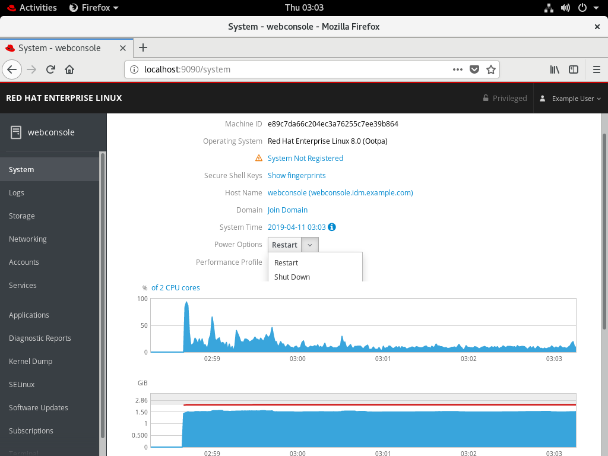
- If there are users logged into the system, write a reason for the restart in the Restart dialog box.
In the Delay drop down list, select a time interval.
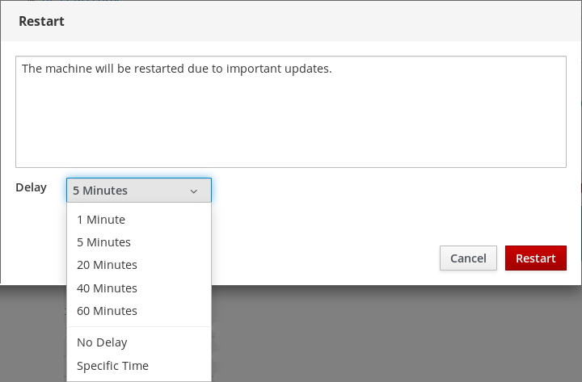
- Click Restart.
The system will be restarted according to your selection.
1.2.2. Using the web console to shutdown the system
The following procedure describes system shutdown executed in the web console.
Prerequisites
The web console must be installed and accessible.
For details, see Installing the web console.
Procedure
Log in to the RHEL 8 web console.
For details, see Logging in to the web console.
- Click System.
In the Power Options drop down list, select Shut Down.
- If there are users logged into the system, write a reason for the shutdown in the Shut Down dialog box.
- In the Delay drop down list, select a time interval.
- Click Shut Down.
The system will be turned off according to your selection.
1.2.3. Using the web console for setting a host name
The host name identifies the system. By default, the host name is set to localhost, but you can change it.
Host names consists of two parts:
- Host name — It is a unique name which identifies a system.
-
Domain — If you want to use the machine in the network and use names instead of just IP addresses, you need to add the domain as a suffix behind the host name. For example:
mymachine.example.com
You can configure also a pretty host name in the RHEL web console. The pretty host name allows you to enter a host name with capital letters, spaces, and so on. The pretty host name displays in the web console, but it does not have to correspond with the host name.
Example:
Pretty host name: My Machine
Host name: mymachine
Real host name (Fully qualified domain name): mymachine.idm.company.com
Host names are stored in the /etc/hostname file, however, you can set or change the host name in the web console.
Prerequisites
The web console must be installed and accessible.
For details, see Installing the web console.
Procedure
Log in to the RHEL 8 web console.
For details, see Logging in to the web console.
- Click System.
Click the current host name.
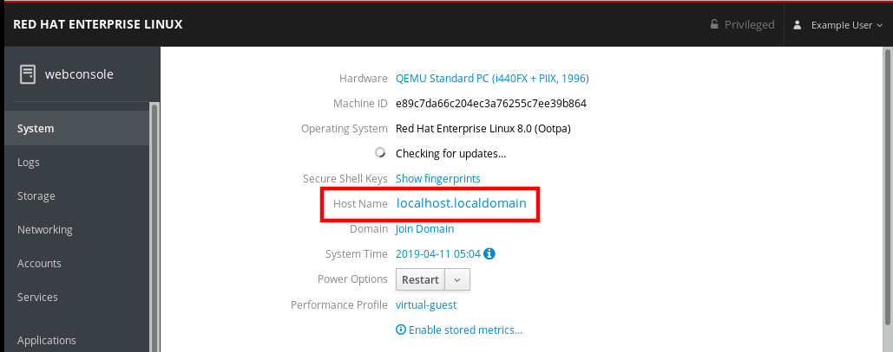
- In the Change Host Name dialog box, enter the host name in the Pretty Host Name field.
In the Real Host Name field, the pretty name will be compounded with a domain name.
You can change the host name manually if it does not correspond with the pretty host name.
Click Change.
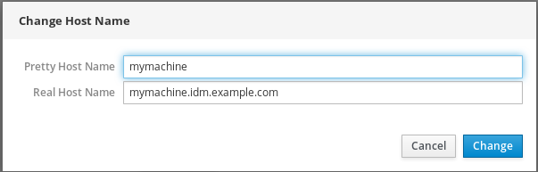
To verify that the host name is configured properly, try to log out from the web console and add to the browser the address with the new host name.
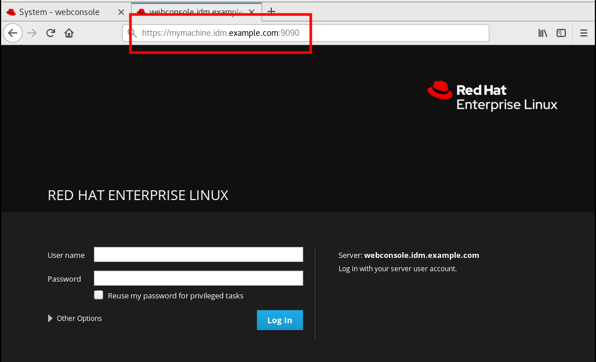
1.2.4. Joining the RHEL 8 system to the IdM domain using the web console
The following procedure describes joining the RHEL 8 system to the IdM domain.
Prerequisites
- IdM domain running and reachable from the client you want to join.
- IdM domain administrator credentials.
Procedure
Log in to the RHEL web console.
For details, see Logging in to the web console.
- Open the System tab.
Click Join Domain.
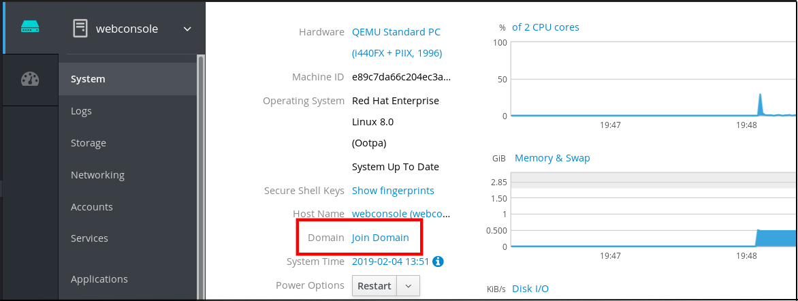
- In the Join a Domain dialog box, enter the host name of the IdM server in the Domain Address field.
In the Authentication drop down list, select if you want to use password or one time password for authentication.
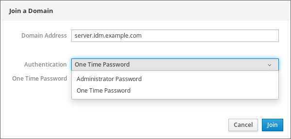
- In the Domain Administrator Name field, enter the user name of the IdM administration account.
- In the password field, add the password or one time password according to what you selected in the Authentication drop down list above.
Click Join.
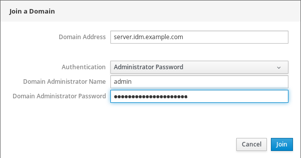
If the RHEL 8 web console did not display an error, the system has been joined to the IdM domain and you can see the domain name in the System screen.
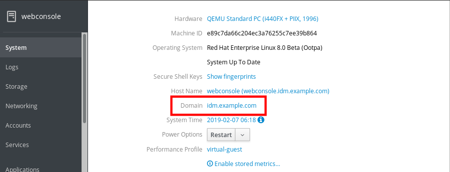
If you click to the joined domain in the System screen, the system will display a warning dialog with the information about leaving the domain. If you click Leave, the system will leave the domain.
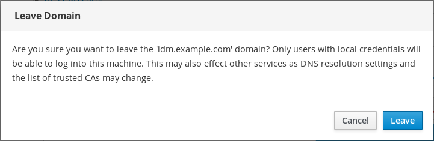
1.2.5. Using the web console for configuring time settings
This section shows you how to set:
- The correct time zone
- Automatic time settings provided by an NTP server.
- A specific NTP server.
Prerequisites
The web console must be installed and accessible.
For details, see Installing the web console.
Procedure
Log in to the RHEL 8 web console.
For details, see Logging in to the web console.
- Click System.
Click the current system time.
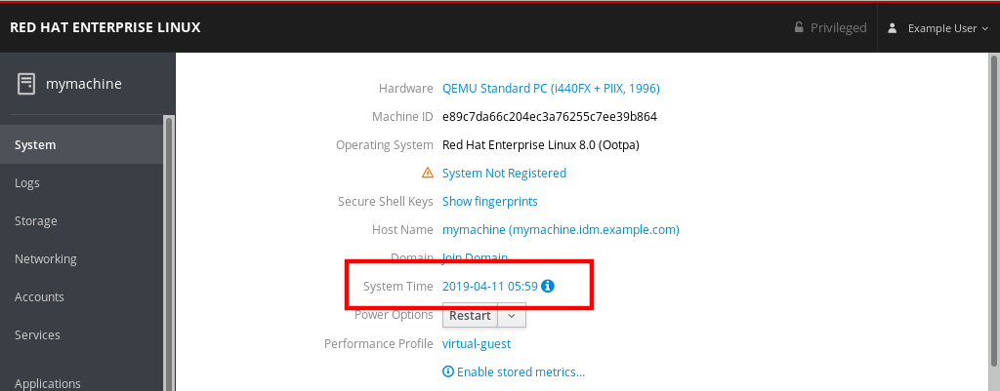
- In the Change System Time dialog box, change the time zone if necessary.
In the Set Time drop down menu, select:
- Manually
- Automatically using NTP server — This is a default option. If the time of the system is correct, leave it as it is.
- Automatically using specific NTP servers — Use this option only if you need to synchronize the system with a specific NTP server and add the DNS name or IP address of the server.
Click Change.
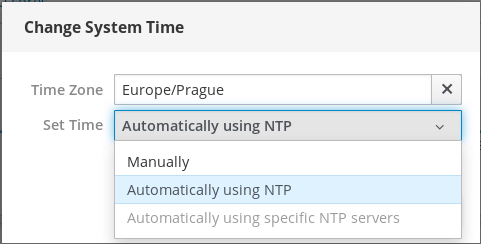
The change is now available in the System tab.
1.2.6. Using the web console for selecting performance profiles
Red Hat Enterprise Linux 8 includes performance profiles optimizing:
- Systems using Desktop
- Latency performance
- Network performance
- Low power consumption
- Virtual machines
The following procedure describes setting up performance profiles in the web console.
The RHEL 8 web console configures the tuned service.
For details about the tuned service, see Monitoring and managing system status and performance.
Prerequisites
The web console must be installed and accessible.
For details, see Installing the web console.
Procedure
Log in to the RHEL 8 web console.
For details, see Logging in to the web console.
- Click System.
In the Performance Profile field, click the current performance profile.

- In the Change Performance Profile dialog box, change the profile if necessary.
Click Change.

The change is now available in the System tab.
1.2.7. Disabling Simultaneous Multi Threading to prevent CPU security issues
This feature is available in RHEL 8.0.1 and RHEL 8.1.0 Beta.
This section helps you to disable SMT (Simultaneous Multi Threading) in case of attacks that misuse CPU Simultaneous Multi Threading.
Disabling SMT can help with security vulnerabilities on newer types of Intel processors, such as:
- L1TF
- MDS
This configuration requires system restart.
This configuration can slow down the system performance.
Prerequisites
The web console must be installed and accessible.
For details, see Installing the web console.
Procedure
Log in to the RHEL 8 web console.
For details, see Logging in to the web console.
- Click System.
In the Hardware item, click the hardware information.
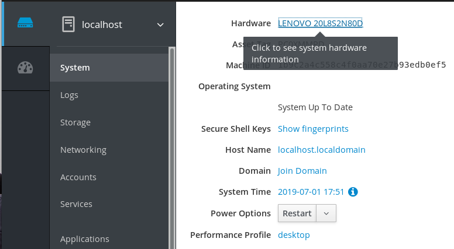
In the CPU Security item, click Mitigations.
If this link is not present, it means that your system does not support SMT, and therefore is not vulnerable.
In the CPU Security Toggles, switch on the Disable simultaneous multithreading (nosmt) option.
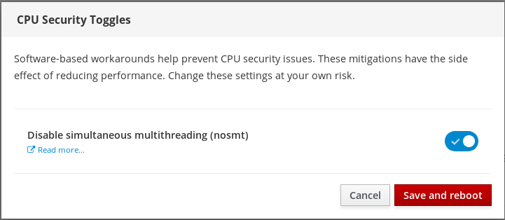
- Click on the Save and reboot button.
After the system restart, the CPU will not use Simultaneous Multi Threading.
Additional resources
For more details on security attacks which requires disabling SMT, see:
1.3. What RHEL System Roles are and which tasks they can be used for
1.3.1. Introduction to RHEL System Roles
Red Hat Enterprise Linux System Roles is a collection of Ansible roles and modules that provide a configuration interface to remotely manage multiple RHEL systems. The interface enables managing system configurations across multiple versions of RHEL, as well as adopting new major releases.
Red Hat Enterprise Linux System Roles were introduced with Red Hat Enterprise Linux 7.4. For more information, see the Red Hat Enterprise Linux (RHEL) System Roles Red Hat KnowledgeBase article.
On Red Hat Enterprise Linux 8, the interface currently consists of the following roles:
- selinux
- kdump
- network
- timesync
- storage
All these roles are provided by the rhel-system-roles package available in the AppStream reposiory.
1.3.2. Applying a role
To apply a particular role, you need to fulfill the following prerequisites.
Prerequisites
The
rhel-system-rolespackage has been installed on the system that you want to use as a control node:# yum install rhel-system-roles
The Ansible Engine repository has been enabled, and the
ansiblepackage has been installed on the system that you want to use as a control node. Theansiblepackage is needed to run playbooks that use Red Hat Enterprise Linux System Roles.If you do not have a Red Hat Ansible Engine Subscription, you can use a limited supported version of Red Hat Ansible Engine provided with your Red Hat Enterprise Linux subscription. In this case, follow these steps:
Enable the RHEL Ansible Engine repository:
# subscription-manager refresh # subscription-manager repos --enable ansible-2-for-rhel-8-x86_64-rpms
Install Ansible Engine:
# yum install ansible
If you have a Red Hat Ansible Engine Subscription, follow the procedure described in How do I Download and Install Red Hat Ansible Engine?.
You are able to create an Ansible playbook.
Playbooks represent Ansible’s configuration, deployment, and orchestration language. By using playbooks, you can declare and manage configurations of remote machines, deploy multiple remote machines or orchestrate steps of any manual ordered process.
A playbook is a list of one or more
plays. Everyplaycan include Ansible variables, tasks or roles.Playbooks are human-readable, and they are expressed in the
YAMLformat.For more information about playbooks, see Ansible documentation
To apply a particular role, use the following procedure.
Procedure
Create an Ansible playbook including the required role.
The classic way to use roles is via the
roles:option for a givenplay, as shown in the example below:--- - hosts: webservers roles: - rhel-system-roles.network - rhel-system-roles.timesyncFor more information on using roles in playbooks, see Ansible documentation.
See Ansible examples for example playbooks.
NoteEvery role includes a README file, which documents how to use the role and supported parameter values. You can also find an example playbook for a particular role under the documentation directory of the role. Such documentation directory is provided by default with the
rhel-system-rolespackage, and can be found in the following location:/usr/share/doc/rhel-system-roles-<version>/SUBSYSTEM/
where SUBSYSTEM is the name of the subsystem that contains the individual role manages - selinux, kdump, network or timesync.
Execute the playbook on targeted hosts by running the
ansible-playbookcommand:ansible-playbook -i <name of the inventory> <name of the playbook>
An inventory is a list of systems against which Ansible works. For more information on how to create and inventory, and how to work with it, see Ansible documentation.
If you have not created an inventory in advance, you can do so even at the time of running
ansible-playbook:For cases with only one targeted host against which you want to run the playbook, use:
ansible-playbook -i host1, <name of the playbook>
For cases with multiple targeted hosts against which you want to run the playbook, use:
ansible-playbook -i host1,host2,….,hostn <name of the playbook>
For more detailed information on using the
ansible-playbookcommand, see theansible-playbookman page.
1.4. Basic configuration of environment
Basic configuration of environment includes:
- Date and time
- System locales
- Keyboard layout
- Language
1.4.1. Configuring the date and time
Accurate timekeeping is important for a number of reasons. In Red Hat Enterprise Linux, timekeeping is ensured by the NTP protocol, which is implemented by a daemon running in user space. The user space daemon updates the system clock running in the kernel. The system clock can keep time by using various clock sources.
Red Hat Enterprise Linux 8 uses the chronyd daemon to implement NTP. chronyd is available from the chrony package. For more information, see Using the chrony suite to configure NTP.
1.4.1.1. Displaying the current date and time
To display the current date and time, use either of these procedures.
Procedure
Run the
datecommand:$ date
Procedure
Run the
timedatectlcommand:$ timedatectl
The timedatectl command provides more verbose output, including universal time, currently used time zone, the status of the Network Time Protocol (NTP) configuration, and some additional information.
1.4.1.2. Additional resources
- Time settings in the web console describes Using the web console for configuring time settings.
- For more information on configuring the date and time during the installation, see Performing a standard RHEL installation.
1.4.2. Configuring the system locale
System-wide locale settings are stored in the /etc/locale.conf file, which is read at early boot by the systemd daemon. The locale settings configured in /etc/locale.conf are inherited by every service or user, unless individual programs or individual users override them.
Basic tasks to handle the system locales include:
- Listing available system locale settings
- Displaying the current status of the system locales settings
- Setting or changing the default system locale settings
1.4.2.1. Listing available system locale settings
To list available system locale settings, use this procedure.
Procedure
Run the following command:
$ localectl list-locales
1.4.2.2. Displaying the current status of the system locales settings
To display the current status of the system locales settings, use this procedure.
Procedure
Run the following command:
$ localectl status
1.4.2.3. Setting or changing the default system locale settings
To set or change the default system locale settings, use this procedure.
Procedure
Run the following command as the
rootuser:# localectl set-locale LANG=locale
1.4.3. Configuring the keyboard layout
The keyboard layout settings control the layout used on the text console and graphical user interfaces.
Basic tasks to handle the keyboard layout include:
- Listing available keymaps
- Displaying the current status of keymap settings
- Setting or changing the default system keymap
1.4.3.1. Listing available keymaps
To list available keymaps, use this procedure.
Procedure
Run the following command:
$ localectl list-keymaps
1.4.3.2. Displaying the current status of keymaps settings
To display the current status of keymaps settings, use this procedure.
Procedure
Run the following command:
$ localectl status
1.4.3.3. Setting or changing the default system keymap
To set or change the default system keymap, use this procedure.
Procedure
Run the following command as the
rootuser:# localectl set-keymap
1.4.4. Changing the language using desktop GUI
This section describes how to change the system language using desktop GUI.
Prerequisites
- Proper language packages are installed on your system
Procedure
Open
GNOME Control CenterFor more information on how to launch this tool, see approaches described in Launching applications
Note, that you can also launch
GNOME Control Centerfrom theSystem menuby clicking on its icon.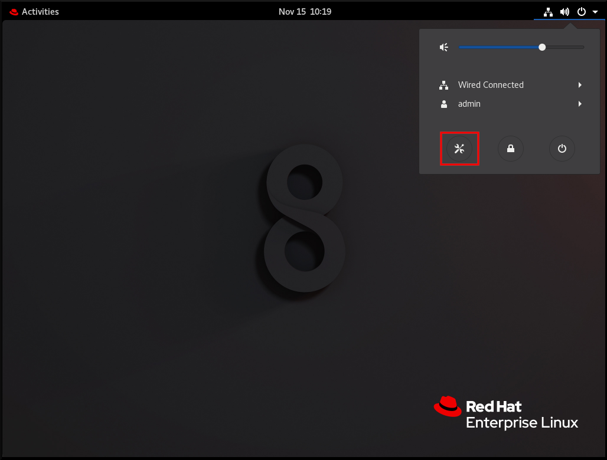
-
In
GNOME Control Center, chooseRegion & Languagefrom the left vertical bar Click the Language menu
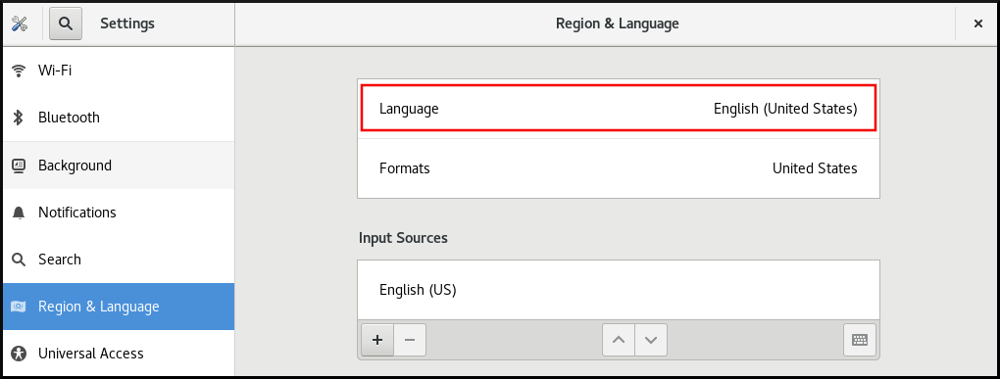
Select the required region and language from the menu
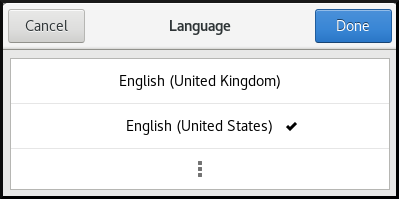
If your region and language are not listed, scroll down, and click More to select from available regions and languages.
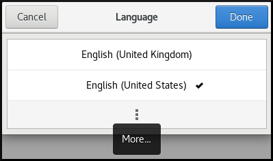
- Click Done
Click Restart for changes to take effect
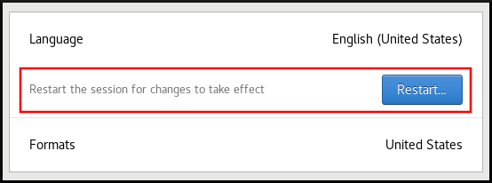
Some applications do not support certain languages. The text of an application that cannot be translated into the selected language remains in US English.
1.4.5. Additional resources
Setting of these items is normally a part of the installation process. For more information, see Performing a standard RHEL installation.
1.5. Configuring and managing network access
1.5.1. Configuring network access during the installation process
Ways to configure network access during the installation process:
- The menu at the Installation Summary screen in the graphical user interface of the Anaconda installation program
- The option in the text mode of the Anaconda installation program
- The Kickstart file
When the system boots for the first time after the installation has finished, any network interfaces which you configured during the installation are automatically activated.
For detailed information on configuration of network access during installation process, see Performing a standard RHEL installation and Performing an advanced RHEL installation.
1.5.2. Managing network connections after the installation process using nmcli
Run the following commands to manage network connections using the nmcli utility.
The nmcli utility has a powerful syntax completion feature when the Tab key is pressed twice. This feature is provided by the bash-completion package, which is installed by default in RHEL.
To create a new connection:
# nmcli con add type type of the connection con-name connection name ifname ifname ipv4.addresses ipv4 address ipv4.gateway gateway address
Here, replace:
- type of the connection by the required type of the device
- connection name by the required connection name
- ifname by the required device name
- ipv4 address by the required IPv4 address/netmask
- gateway address by the required gateway address
Note that ipv4 address and gateway address are optional settings, while all remaining settings are required.
You can also create a new connection in assisted mode. To do so, use this command, and follow the instructions that prompt you for input of particular configuration settings of this connection:
# nmcli -a con add
To modify the existing connection:
# nmcli con mod connection name setting.property newvalue
Here, replace:
- connection name by the name of the connection that you want to modify
- setting.property by the configuration setting that you want to modify
- newvalue by the required value of this configuration setting
For example, to set the method of the configuration of IPv4 address (ipv4.method) to auto for the connection named enp0, use the following command:
# nmcli con mod enp0 ipv4.method auto
To edit a connection, enter the following command:
# nmcli connection edit connection nameHere, replace connection name by the name of the connection that you want to edit.
To display all connections:
# nmcli con show
To display active connections:
# nmcli con show --active
To display all configuration settings of a particular connection:
# nmcli con show con-name connection nameHere, replace connection name by the name of the required connection.
Then, follow the instructions that will prompt you for input of particular configuration settings. To display all possible options of any configuration setting, use the print command in the editor.
1.5.3. Managing network connections after the installation process using nmtui
The NetworkManager text user interface (TUI) utility, nmtui, provides a text interface to configure networking by controlling NetworkManager.
1.5.4. Managing networking in the RHEL 8 web console
In the web console, the menu enables you:
- To display currently received and sent packets
- To display the most important characteristics of available network interfaces
- To display content of the networking logs.
- To add various types of network interfaces (bond, team, bridge, VLAN)
Figure 1.1. Managing Networking in the RHEL 8 web console
1.5.5. Managing networking using RHEL System Roles
You can configure the networking connections on multiple target machines using the network role.
The network role allows to configure the following types of interfaces:
- Ethernet
- Bridge
- Bonded
- VLAN
- MacVLAN
- Infiniband
The required networking connections for each host are provided as a list within the network_connections variable.
The network role updates or creates all connection profiles on the target system exactly as specified in the network_connections variable. Therefore, the network role removes options from the specified profiles if the options are only present on the system but not in the network_connections variable.
The following example shows how to apply the network role to ensure that an Ethernet connection with the required parameters exists:
Example 1.1. An example playbook applying the network role to set up an Ethernet connection with the required parameters
# SPDX-License-Identifier: BSD-3-Clause
---
- hosts: network-test
vars:
network_connections:
# Create one ethernet profile and activate it.
# The profile uses automatic IP addressing
# and is tied to the interface by MAC address.
- name: prod1
state: up
type: ethernet
autoconnect: yes
mac: "00:00:5e:00:53:00"
mtu: 1450
roles:
- rhel-system-roles.networkFor more information on applying a system role, see What RHEL System Roles are and which tasks they can be used for.
1.6. Registering the system and managing subscriptions
The products installed on Red Hat Enterprise Linux, including the operating system itself, are covered by subscriptions.
A subscription to Red Hat Content Delivery Network is used to track:
- Registered systems
- Products installed on those system
- Subscriptions attached to those product
1.6.1. Registering the system after the installation
Your subscription can be registered during the installation process. For more information, see Performing a standard RHEL installation.
If you have not registered your system during the installation process, you can do it afterwards by applying the following procedure. Note that all commands in this procedure need to be performed as the root user.
Registering and subscribing your system
Register your system:
# subscription-manager register
The command will prompt you to enter your Red Hat Customer Portal user name and password.
Determine the pool ID of a subscription that you require:
# subscription-manager list --available
This command displays all available subscriptions for your Red Hat account. For every subscription, various characteristics are displayed, including the pool ID.
Attach the appropriate subscription to your system by replacing pool_id with the pool ID determined in the previous step:
# subscription-manager attach --pool=pool_id
1.6.2. Registering subscriptions with credentials in the web console
The following describes subscribing the newly installed Red Hat Enterprise Linux using the RHEL 8 web console.
Prerequisites
Valid user account in the Red Hat Customer Portal.
See the Create a Red Hat Login page.
- Active subscription for the RHEL system.
Procedure
Type subscription in the search field and press the Enter key.
Alternatively, you can log in to the RHEL 8 web console. For details, see Logging in to the web console.
In the polkit authentication dialog for privileged tasks, add the password belonging user name displayed in the dialog.
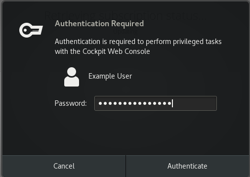
- Click Authenticate.
In the Subscriptions dialog box, click Register.
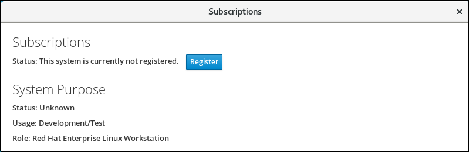
Enter your Customer Portal credentials.
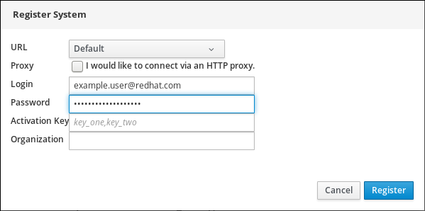
Enter the name of your organization.
You need to add the organization name or organization ID, if you have more than one account in the Red Hat Customer Portal. To get the org ID, go to your Red Hat contact point.
- Click the Register button.
At this point, your RHEL 8 system has been successfully registered.
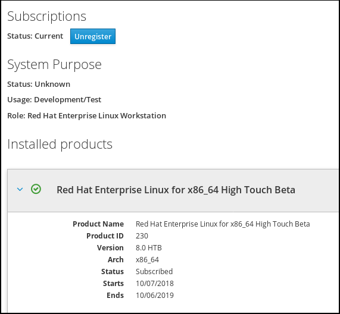
1.7. Installing software
This section provides information to guide you through the basics of software installation. It mentions the prerequisites that you need to fulfil to be able to install software, provides the basic information on software packaging and software repositories, and references the ways to perform basic tasks related to software installation.
1.7.1. Prerequisites for software installation
The Red Hat Content Delivery Network subscription service provides a mechanism to handle Red Hat software inventory and enables you to install additional software or update already installed packages. You can start installing software once you have registered your system and attached a subscription, as described in Section 1.6.1, “Registering the system after the installation”.
1.7.2. Introduction to the system of software packaging and software repositories
All software on a Red Hat Enterprise Linux system is divided into RPM packages, which are stored in particular repositories. When a system is subscribed to the Red Hat Content Delivery Network, a repository file is created in the /etc/yum.repos.d/ directory.
Use the yum utility to manage package operations:
- Searching information about packages
- Installing packages
- Updating packages
- Removing packages
- Checking the list of currently available repositories
- Adding or removing a repository
- Enabling or disabling a repository
For information on basic tasks related to the installation of software, see Section 1.7.3, “Managing basic software-installation tasks with subscription manager and yum”.
1.7.3. Managing basic software-installation tasks with subscription manager and yum
The most basic software-installation tasks that you might need after the operating system has been installed include:
Listing all available repositories:
# subscription-manager repos --list
Listing all currently enabled repositories:
$
yum repolistEnabling or disabling a repository:
# subscription-manager repos --enable repository# subscription-manager repos --disable repositorySearching for packages matching a specific string:
$
yum searchstringInstalling a package:
# yum install package_nameUpdating all packages and their dependencies:
# yum update
Updating a package:
# yum update package_nameUninstalling a package and any packages that depend on it:
# yum remove package_nameListing information on all installed and available packages:
$
yum list allListing information on all installed packages:
$
yum list installed
1.8. Making systemd services start at boot time
Systemd is a system and service manager for Linux operating systems that introduces the concept of systemd units.
This section provides information on how to ensure that a service is enabled or disabled at boot time. It also explains how to manage the services through the web console.
1.8.1. Enabling or disabling the services
You can determine services that are enabled or disabled at boot time already during the installation process, or you can enable or disable a service on an installed operating system.
To create the list of services enabled or disabled at boot time during the installation process, use the services option in your Kickstart file:
services [--disabled=list] [--enabled=list]
The list of disabled services is processed before the list of enabled services. Therefore, if a service appears on both lists, it is enabled. The list of the services uses the comma-separated format. Do not include spaces in the list of services.
To enable or disable a service on an already installed operating system:
# systemctl enable service_name# systemctl disable service_nameFor further details on enabling and disabling services, see Section 3.2, “Managing system services”.
1.8.2. Managing services in the RHEL 8 web console
In the web console, select to manage systemd targets, services, sockets, timers, and paths. There you can check their status, start or stop them, enable or disable them.
Figure 1.2. Managing services in the RHEL 8 web console
1.9. Enhancing system security with a firewall, SELinux, and SSH access
Computer security is the protection of computer systems from the theft or damage to their hardware, software, or information, as well as from disruption or misdirection of the services they provide. Ensuring computer security is therefore an essential task not only in the enterprises processing sensitive data or handling some business transactions.
Computer security includes a wide variety of features and tools. This section covers only the basic security features that you need to configure after you have installed the operating system. For detailed information on securing Red Hat Enterprise Linux, see the titles from the Security section in Product Documentation for Red Hat Enterprise Linux 8.
1.9.1. Ensuring the firewall is enabled and running
1.9.1.1. What a firewall is and how it enhances system security
A firewall is a network security system that monitors and controls the incoming and outgoing network traffic based on predetermined security rules. A firewall typically establishes a barrier between a trusted, secure internal network and another outside network.
The firewall is provided by the firewalld service, which is automatically enabled during the installation. However, if you explicitly disabled the service, you can re-enable it, as described in Section 1.9.1.2, “Re-enabling the firewalld service”.
1.9.1.2. Re-enabling the firewalld service
In case that the firewalld service is disabled after the installation, Red Hat recommends to consider re-enabling it.
To display the current status of firewalld even as a regular user:
$ systemctl status firewalld
If firewalld is not enabled and running, switch to the root user, and change its status:
# systemctl start firewalld
# systemctl enable firewalld
For detailed information on configuring and using firewall, see Using and configuring firewalls.
1.9.1.3. Managing firewall in the RHEL 8 web console
In the web console, use the option under to enable or disable the firewalld service.
By default, the firewalld service in the web console is enabled. To disable it, set off as shown below. Additionally, you can choose the services that you want to allow through firewall.
Figure 1.3. Managing firewall in the RHEL 8 web console
1.9.2. SELinux and its modes
Security-Enhanced Linux (SELinux) is an additional layer of system security that determines which process can access which files, directories, and ports.
SELinux states
SELinux has two possible states:
- Enabled
- Disabled
When SELinux is disabled, only Discretionary Access Control (DAC) rules are used.
SELinux modes
When SELinux is enabled, it can run in one of the following modes:
- Enforcing
- Permissive
Enforcing mode means that SELinux policies are enforced. SELinux denies access based on SELinux policy rules, and enables only the interactions that are particularly allowed. Enforcing mode is the default mode after the installation and it is also the safest SELinux mode.
Permissive mode means that SELinux policies are not enforced. SELinux does not deny access, but denials are logged for actions that would have been denied if running in enforcing mode. Permissive mode is the default mode during the installation. Operating in permissive mode is also useful in some specific cases, for example if you require access to the Access Vector Cache (AVC) denials when troubleshooting problems.
For further information on SELinux, see Using SELinux.
1.9.3. Ensuring the required state of SELinux
By default, SELinux operates in permissive mode during the installation and in enforcing mode when the installation has finished.
However, in some specific scenarios, SELinux might be explicitly set to permissive mode or it might even be disabled on the installed operating system. This can be set for example in the kickstart configuration.
Red Hat recommends to keep your system in enforcing mode.
To display the current SELinux mode, and to set the mode as required:
Ensuring the required state of SELinux
Display the current SELinux mode in effect:
$
getenforceIf required, switch between the SELinux modes.
The switch can be either temporary or permanent. A temporary switch is not persistent across reboots, while permanent switch is.
To temporary switch to either enforcing or permissive mode:
# setenforce Enforcing
# setenforce Permissive
To permanently set the SELinux mode, modify the SELINUX variable in the
/etc/selinux/configconfiguration file.For example, to switch SELinux to enforcing mode:
# This file controls the state of SELinux on the system. # SELINUX= can take one of these three values: # enforcing - SELinux security policy is enforced. # permissive - SELinux prints warnings instead of enforcing. # disabled - No SELinux policy is loaded. SELINUX=enforcing
1.9.3.1. Switching SELinux modes in the RHEL 8 web console
In the web console, use the option to turn SELinux enforcing policy on or off.
By default, SELinux enforcing policy in the web console is on, and SELinux operates in enforcing mode. By turning it off, you can switch SELinux to permissive mode. Note that such deviation from the default configuration in the /etc/sysconfig/selinux file is automatically reverted on the next boot.
Figure 1.4. Managing SELinux in the RHEL 8 web console
1.9.4. Managing SELinux on multiple systems using RHEL System Roles and Ansible
You can manage various SELinux local customizations on multiple target machines using the selinux system role.
For more information on applying the selinux role to manage various local customizations, such as applying the restorecon command to portions of file system tree, or managing file contexts, SELinux booleans, logins, or ports, see the Deploying the same SELinux configuration on multiple systems section.
1.9.5. Accessing system through SSH
The SSH protocol provides encrypted communications between two systems. SSH mitigates many security threats, such as interception of communication. It also prevents impersonation of a particular host because the SSH client and server use digital signatures to verify their identities.
For more information, see the Using secure communications between two systems with OpenSSH section.
1.10. Managing user accounts
Red Hat Enterprise Linux is a multi-user operating system, which enables multiple users on different computers to access a single system installed on one machine. Every user operates under its own account, and managing user accounts thus represents a core element of Red Hat Enterprise Linux system administration.
1.10.1. The basics of managing user accounts
Normal and System Accounts
Normal accounts are created for users of a particular system. Such accounts can be added, removed, and modified during normal system administration.
System accounts represent a particular applications identifier on a system. Such accounts are generally added or manipulated only at software installation time, and they are not modified later.
System accounts are presumed to be available locally on a system. If these accounts are configured and provided remotely, such as in the instance of an LDAP configuration, system breakage and service start failures can occur.
For system accounts, user IDs below 1000 are reserved. For normal accounts, you can use IDs starting at 1000. However, the recommended practice is to assign IDs starting at 5000. See Reserved user and group IDs for more information. The guidelines for assigning IDs can be found in the /etc/login.defs file:
# Min/max values for automatic uid selection in useradd # UID_MIN 1000 UID_MAX 60000 # System accounts SYS_UID_MIN 201 SYS_UID_MAX 999
What groups are and which purposes they can be used for
A group in an entity which ties together multiple user accounts for a common purpose, such as granting access to particular files.
1.10.1.1. Basic command-line tools to manage user accounts and groups
The most basic tasks to manage user accounts and groups, and the appropriate command-line tools, include:
Displaying user and group IDs:
$
idCreating a new user account:
# useradd [options] user_nameAssigning a new password to a user account belonging to username:
# passwd user_nameAdding a user to a group:
# usermod -a -G group_name user_name
For detailed information on managing users and groups, see Section 4.1, “Introduction to Users and Groups”.
1.10.2. System user accounts managed in the web console
With user accounts displayed in the RHEL 8 web console you can:
- Authenticate users when accessing the system.
- Set them access rights to the system.
The RHEL 8 web console displays all user accounts located in the system. Therefore, you can see at least one user account just after the first login to the web console.
Ones you are logged in to the RHEL 8 web console, you can:
- Create new users accounts.
- Change their parameters.
- Lock accounts.
- Terminate the user session.
You can find the account management in the Accounts settings.
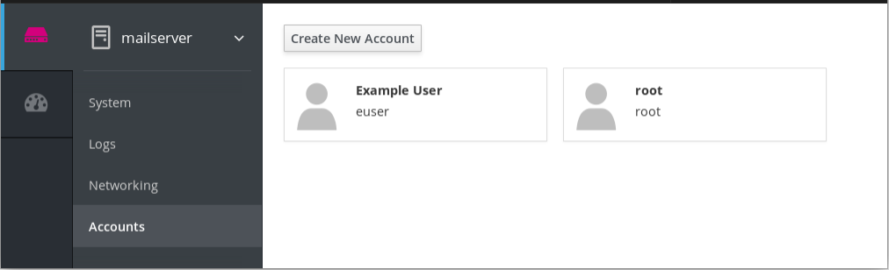
1.10.3. Adding new accounts in the web console
The following describes adding system user accounts in the RHEL 8 web console and setting administration rights to the accounts.
Procedure
- Log in to the RHEL web console.
- Click Accounts.
- Click Create New Account.
In the Full Name field, enter the full name of the user.
The RHEL web console automatically suggests a user name from the full name and fills it in the User Name field. If you do not want to use the original naming convention consisting of the first letter of the first name and the whole surname, update the suggestion.
In the Password/Confirm fields, enter the password and retype it for verification that your password is correct. The color bar placed below the fields shows you security level of the entered password, which does not allow you to create a user with a weak password.
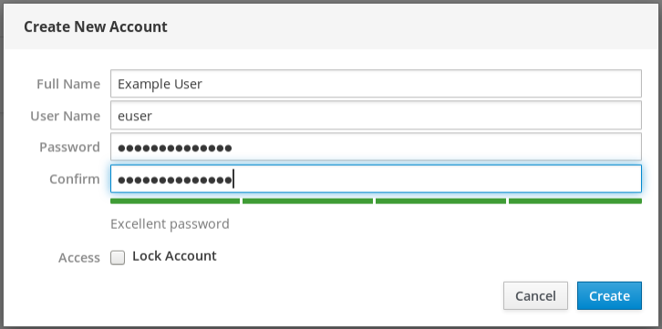
- Click Create to save the settings and close the dialog box.
- Select the newly created account.
- Select Server Administrator in the Roles item.
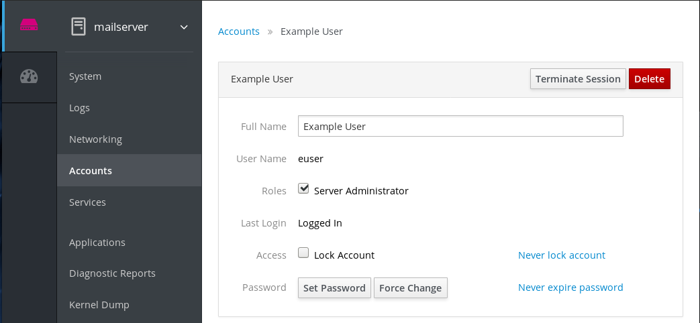
Now you can see the new account in the Accounts settings and you can use the credentials to connect to the system.
1.11. Dumping the crashed kernel using the kdump mechanism
This section provides an introduction to the kernel crash dump mechanism, also called kdump, and briefly explains what kdump is used for in Section 1.11.1, “What kdump is and which tasks it can be used for”.
Activation of the kdump service is a part of the installation process, as described in Performing a standard RHEL installation and Performing an advanced RHEL installation.
You can also use the web console to configure kdump. See Section 1.11.2, “Configuring kdump in the RHEL 8 web console” for more information.
1.11.1. What kdump is and which tasks it can be used for
In case of a system crash, you can use the kernel crash dump mechanism called kdump that enables you to save the content of the system’s memory for later analysis. The kdump mechanism relies on the kexec system call, which can be used to boot a Linux kernel from the context of another kernel, bypass BIOS, and preserve the contents of the first kernel’s memory that would otherwise be lost.
When kernel crash occurs, kdump uses kexec to boot into a second kernel, a capture kernel, which resides in a reserved part of the system memory that is inaccessible to the first kernel. The second kernel captures the contents of the crashed kernel’s memory, a crash dump, and saves it.
For more detailed information about kdump, see Managing, monitoring and updating the kernel.
For installing and configuring kdump, see Installing and configuring kdump.
1.11.2. Configuring kdump in the RHEL 8 web console
In the web console, select to verify:
- the kdump status
- the amount of memory reserved for kdump
- the location of the crash dump files
Figure 1.5. Configuring kdump in the RHEL 8 web console
1.11.3. Configuring kdump using RHEL System Roles
You can configure kdump on multiple target machines using the kdump role.
The kdump role replaces the kdump configuration of the managed hosts entirely. If kdump role is applied, all previous kdump settings are lost, even if they are not specified by the role variables. The /etc/sysconfig/kdump and /etc/kdump.conf configuration files are replaced.
The following example shows how to apply the kdump role to set the location of the crash dump files:
Example 1.2. An example playbook applying the kdump role for setting the location of kdump files
---
- hosts: kdump-test
vars:
kdump_path: /var/crash
roles:
- rhel-system-roles.kdump
For more information on applying the kdump role to manage various kdump configurations, see System roles documentation.
1.12. Performing system rescue and creating system backup with ReaR
When a software or hardware failure breaks the operating system, you need a mechanism to rescue the system. It is also useful to have the system backup saved. Red Hat recommends using the Relax-and-Recover (ReaR) tool to fulfil both these needs.
1.12.1. What ReaR is and which tasks it can be used for
ReaR is a disaster recovery and system migration utility which enables you to create the complete rescue system. By default, this rescue system restores only the storage layout and the boot loader, but not the actual user and system files.
Additionally, certain backup software enables you to integrate ReaR for disaster recovery.
ReaR enables to perform the following tasks:
- Booting a rescue system on the new hardware
- Replicating the original storage layout
- Restoring user and system files
1.12.2. Quickstart to installation and configuration of ReaR
To install ReaR, enter as the root user:
# yum install rear genisoimage syslinux
Use the settings in the /etc/rear/local.conf file to configure ReaR.
1.12.3. Quickstart to creation of the rescue system with ReaR
To create the rescue system, perform the following command as the root user:
# rear mkrescue
1.12.4. Quickstart to configuration of ReaR with the backup software
ReaR contains a fully-integrated built-in, or internal, backup method called NETFS.
To make ReaR use its internal backup method, add these lines to the /etc/rear/local.conf file:
BACKUP=NETFS BACKUP_URL=backup location
You can also configure ReaR to keep the previous backup archives when the new ones are created by adding the following line to /etc/rear/local.conf:
NETFS_KEEP_OLD_BACKUP_COPY=y
To make the backups incremental, meaning that only the changed files are backed up on each run, add this line to /etc/rear/local.conf:
BACKUP_TYPE=incremental
1.13. Using the log files to troubleshoot problems
When troubleshooting a problem, you may appreciate the log files that contain different information and messages about the operating system. The logging system in Red Hat Enterprise Linux is based on the built-in syslog protocol. Particular programs use this system to record events and organize them into log files, which are useful when auditing the operating system and troubleshooting various problems.
1.13.1. Services handling the syslog messages
The syslog messages are handled by two services:
-
The
systemd-journalddaemon -
The
rsyslogservice
The systemd-journald daemon collects messages from various sources and forwards them to the rsyslog service for further processing. The sources from which the messages are collected are:
- Kernel
- Early stages of the boot process
- Standard output and error of daemons as they start up and run
- Syslog
The rsyslog service sorts the syslog messages by type and priority, and writes them to the files in the /var/log directory, where the logs are persistently stored.
1.13.2. Subdirectories storing the syslog messages
The syslog messages are stored in various subdirectories under the /var/log directory according to what kind of messages and logs they contain:
-
var/log/messages- all syslog messages except those mentioned below -
var/log/secure- security and authentication-related messages and errors -
var/log/maillog- mail server-related messages and errors -
var/log/cron- log files related to periodically executed tasks -
var/log/boot.log- log files related to system startup
1.13.2.1. Managing the log files in the RHEL 8 web console
In the web console, use the Logs option if you want to inspect the log files.
Figure 1.6. Inspecting the log files in the RHEL 8 web console
1.14. Accessing Red Hat support
To obtain support from Red Hat, use the Red Hat Customer Portal, which provides access to everything available with your subscription.
This section describes:
- Obtaining Red Hat support, in Section 1.14.1, “Obtaining Red Hat Support through Red Hat Customer Portal”
- Using the SOS report to troubleshoot problems, in Section 1.14.2, “Using the SOS report to troubleshoot problems”
1.14.1. Obtaining Red Hat Support through Red Hat Customer Portal
By using the Red Hat Customer Portal you can:
- Open a new support case
- Initiate a live chat with a Red Hat expert
- Contact a Red Hat expert by making a call or sending an email
To access the Red Hat Customer Portal, go to https://access.redhat.com.
1.14.2. Using the SOS report to troubleshoot problems
The SOS report collects configuration details, system information and diagnostic information from a Red Hat Enterprise Linux system. Attach the report when you open a support case.
Note that the SOS report is provided in the sos package, which is not installed with the default minimal installation of Red Hat Enterprise Linux.
To install the sos package:
# yum install sos
To generate an SOS report:
# sosreport
To attach the sos report to your support case, see the Red Hat Knowledgebase article How can I attach a file to a Red Hat support case?. Note that you will be prompted to enter the number of the support case, when attaching the sos report.
For more information on SOS report, see the Red Hat Knowledgebase article What is a sosreport and how to create one in Red Hat Enterprise Linux 4.6 and later?.
Chapter 2. Installing software with yum
2.1. Introduction to installing software on Red Hat Enterprise Linux 8
On Red Hat Enterprise Linux 8, installing software is ensured by the new version of the YUM tool, which is based on the DNF technology (YUM v4).
YUM v4 has the following advantages over the previous YUM v3 used on Red Hat Enterprise Linux 7:
- Increased performance
- New features available, most significantly the support for managing the modular content
- Well-designed stable API for integration with tooling
For detailed information about differences between the new YUM tool and the previous version YUM v3 from Red Hat Enterprise Linux 7, see Changes in DNF CLI compared to YUM.
Note, that upstream calls this tool DNF. As a result, some output returned by the new YUM tool in Red Hat Enterprise Linux 8 mentions DNF, and upstream documentation identifies the technology as DNF.
For installing software, you can use the yum command and its particular options in the same way as on Red Hat Enterprise Linux 7.
Selected yum plug-ins and utilities have been ported to the new DNF back end, and can be installed under the same names as in Red Hat Enterprise Linux 7. They also provide compatibility symlinks, so the binaries, configuration files and directories can be found in usual locations.
Note that the legacy Python API provided by YUM v3 is no longer available. Users are advised to migrate their plug-ins and scripts to the new API provided by YUM v4 (DNF Python API), which is stable and fully supported. The DNF Python API is available here.
The Libdnf and Hawkey APIs (both C and Python) are unstable, and will likely change during RHEL 8 life cycle.
2.1.1. Application streams
Red Hat Enterprise Linux 8.0 introduces the concept of Application Streams. Multiple versions of user space components are now delivered and updated more frequently than the core operating system packages. This provides greater flexibility to customize Red Hat Enterprise Linux without impacting the underlying stability of the platform or specific deployments.
Components made available as Application Streams can be packaged as modules or RPM packages and are delivered through the AppStream repository in RHEL 8. Each Application Stream component has a given life cycle. For details, see Red Hat Enterprise Linux Life Cycle.
Modules are collections of packages representing a logical unit: an application, a language stack, a database, or a set of tools. These packages are built, tested, and released together.
Module streams represent versions of the Application Stream components. For example, two streams (versions) of the PostgreSQL database server are available in the postgresql module: PostgreSQL 10 (the default stream) and PostgreSQL 9.6. Only one module stream can be installed on the system. Different versions can be used in separate containers.
Detailed module commands are described in the Installing, managing, and removing user-space components document. For a list of modules available in AppStream, see the Package manifest.
2.2. Introduction to yum functionality
yum is the Red Hat package manager that is able to query for information about available packages, fetch packages from repositories, install and uninstall them, and update an entire system to the latest available version. Yum performs automatic dependency resolution when updating, installing, or removing packages, and thus is able to automatically determine, fetch, and install all available dependent packages.
yum can be configured with new, additional repositories, or package sources, and also provides many plug-ins which enhance and extend its capabilities. Yum enables easy and simple package management.
yum provides secure package management by enabling Gnu Privacy Guard (GPG), also known as GnuPG, signature verification on GPG-signed packages to be turned on for all package repositories (package sources), or for individual repositories.
You can also use yum to set up your own repositories with RPM packages for download and installation on other machines. When possible, yum uses parallel download of multiple packages and metadata to speed up downloading.
You must have superuser privileges in order to use yum to install, update or remove packages on your system. All examples here assume that you have already obtained superuser privileges by using either the su or sudo command.
2.3. Using yum for particular tasks
This section describes how to use yum to achieve particular tasks.
2.3.1. Checking for updates and updating packages
yum enables you to check if your system has any updates waiting to be applied. You can list packages that need to be updated and update them as a whole, or you can update a selected individual package.
2.3.1.1. Checking for updates
To see which installed packages on your system have updates available, use the following command:
yumcheck-update
The command shows the list of packages and their dependencies that have an update available. The output for each package consists of:
- the name of the package
- the CPU architecture the package was built for
- the version of the updated package to be installed
- the release of the updated package
- a build version, added as part of a z-stream update
- the repository in which the updated package is located.
2.3.1.1.1. Updating packages
You can choose to update a single package, multiple packages, or all packages at once. If any dependencies of the package or packages you update have updates available themselves, then they are updated too.
2.3.1.1.1.1. Updating a single package
To update a single package, run the following command as root:
yumupdatepackage_name
yum always installs a new kernel regardless of whether you are using the yum update or yum install command to apply kernel updates.
When using RPM, on the other hand, it is important to use the rpm -i kernel command which installs a new kernel instead of rpm -u kernel which replaces the current kernel.
2.3.1.1.1.2. Updating a package group
To update a package group, type as root:
yumgroup updategroup_name
Here, replace group_name with a name of the package group you want to update. For more information on package groups, see Section 2.3.3, “Working with package groups”.
2.3.1.1.2. Updating all packages and their dependencies
To update all packages and their dependencies, use the yum update command without any arguments:
yumupdate
2.3.1.1.3. Updating security-related packages
If packages have security updates available, you can update only these packages to their latest versions. Type as root:
yumupdate --security
You can also update packages only to versions containing the latest security updates. Type as root:
yumupdate-minimal --security
2.3.2. Working with packages
yum enables you to perform a complete set of operations with software packages, including searching for packages, viewing information about them, installing and removing.
2.3.2.1. Searching packages
You can search all package names, descriptions and summaries by using the following command:
yumsearchterm...
Replace term with a package name you want to search.
The yum search command is useful for searching for packages you do not know the name of, but for which you know a related term. Note that by default, yum search returns matches in package name and summary, which makes the search faster. Use the yum search --all command for a more exhaustive but slower search, which also includes package descriptions.
2.3.2.1.1. Filtering the Results
All of yum’s list commands allow you to filter the results by appending one or more glob expressions as arguments. Global expressions are normal strings of characters which contain one or more of the wildcard characters * (which expands to match any character subset) and ? (which expands to match any single character).
Be careful to escape the global expressions when passing them as arguments to a yum command, otherwise the Bash shell will interpret these expressions as pathname expansions, and potentially pass all files in the current directory that match the global expressions to yum. To make sure the global expressions are passed to yum as intended, use one of the following methods:
- escape the wildcard characters by preceding them with a backslash character
- double-quote or single-quote the entire global expression.
2.3.2.2. Listing packages
To list information on all installed and available packages type the following at a shell prompt:
yumlist--all
To list installed and available packages that match inserted global expressions use the following command:
yumlistglob_expression...
To list all packages installed on your system use the installed keyword.
yumlist --installedglob_expression...
To list all packages in all enabled repositories that are available to install, use the command in the following form:
yumlist --availableglob_expression...
2.3.2.2.1. Listing repositories
To list the repository ID, name, and number of packages for each enabled repository on your system, use the following command:
yumrepolist
To list more information about these repositories, use the repoinfo command. With this command, information including the file name, overall size, date of the last update, and base URL are displayed for each listed repository.
yumrepoinfo
To list both enabled and disabled repositories use the following command. A status column is added to the output list to show which of the repositories are enabled.
yumrepolist--all
By passing disabled as a first argument, you can reduce the command output to disabled repositories. For further specification you can pass the ID or name of repositories or related glob_expressions as arguments. Note that if there is an exact match between the repository ID or name and the inserted argument, this repository is listed even if it does not pass the enabled or disabled filter.
2.3.2.2.2. Displaying package information
To display information about one or more packages, use the following command (global expressions are valid here as well):
yuminfopackage_name...
Replace package_name with the name of the package.
2.3.2.2.3. Installing packages
To install a single package and all of its non-installed dependencies, enter a command in the following form as root:
yuminstallpackage_name
You can also install multiple packages simultaneously by appending their names as arguments. To do so, type as root:
yuminstallpackage_name package_name...
If you are installing packages on a multilib system, such as an AMD64 or Intel 64 machine, you can specify the architecture of the package (as long as it is available in an enabled repository) by appending .arch to the package name:
yuminstallpackage_name.arch
You can use global expressions to quickly install multiple similarly named packages. Execute as root:
yuminstallglob_expression...
In addition to package names and global expressions, you can also provide file names to yum install. If you know the name of the binary you want to install, but not its package name, you can give yum install the path name. As root, type:
yuminstall/usr/sbin/named
Yum then searches through its package lists, finds the package which provides /usr/sbin/named, if any, and prompts you as to whether you want to install it.
As you can see in the above examples, the yum install command does not require strictly defined arguments. It can process various formats of package names and global expressions, which makes installation easier for users. On the other hand, it takes some time until yum parses the input correctly, especially if you specify a large number of packages. To optimize the package search, you can use the following commands to explicitly define how to parse the arguments:
yum install-n nameyum install-na name.architectureyum install-nevra name-epoch:version-release.architecture
With install-n, yum interprets name as the exact name of the package. The install-na command tells yum that the subsequent argument contains the package name and architecture divided by the dot character. With install-nevra, yum will expect an argument in the form name-epoch:version-release.architecture. Similarly, you can use yum remove-n, yum remove-na, and yum remove-nevra when searching for packages to be removed.
If you know you want to install the package that contains the named binary, but you do not know in which bin/ or sbin/ directory the file is installed, use the yum provides command with a global expression.
yum provides "*/file_name" is a useful way to find the packages that contain file_name.
To install a previously-downloaded package from a local directory on your system, use the following command:
yum install pathReplace path with the path to the package you want to install.
Alternatively, you can use also the yum localinstall command to install a previously -nloaded package from a local directory.
2.3.2.2.4. Removing packages
To uninstall a particular package, as well as any packages that depend on it, run the following command as root:
yumremovepackage_name...
To remove multiple packages at once by adding more package names to the command.
Similar to install, remove can take these arguments:
- package names
- global expressions
- file lists
- package provides
yum is not able to remove a package without also removing packages which depend on it.
2.3.3. Working with package groups
A package group is a collection of packages that serve a common purpose, for instance System Tools or Sound and Video. Installing a package group pulls a set of dependent packages, saving time considerably. The yum groups command is a top-level command that covers all the operations that act on package groups in yum.
2.3.3.1. Listing package groups
The summary option is used to view the number of:
- installed groups
- available groups
- available environment groups
- installed and available language groups
yum groupssummary
To list all package groups from yum repositories add the list option. You can filter the command output by group names.
yumgroup listglob_expression...
Several optional arguments can be passed to this command, including --hidden to list also groups not marked as user visible, and -v to list group IDs. You can also add --installed, or --available options to reduce the command output to a specific group type.
To list mandatory and optional packages contained in a particular group, use the following command:
yumgroup infoglob_expression...
A package group can be marked with @. When using yum group list, info, install, or remove, pass @group_name to specify a package group or an environmental group.
2.3.3.2. Installing a package group
You can install a package group by passing its full group name, without the groupid part, to the group install command. As root, type:
yumgroup installgroup_name
You can also install by groupid. As root, execute the following command:
yumgroup installgroupid
You can pass the groupid or quoted group name to the install command if you prepend it with an @ symbol, which tells yum that you want to perform group install. As root, type:
yuminstall@group
Replace group with the groupid or quoted group name. The same logic appplies to environmental groups:
yuminstall@group
2.3.3.3. Removing a package group
You can remove a package group using syntax similar to the install syntax, with use of either name of the package group or its id. As root, type:
yumgroup removegroup_name
yumgroup removegroupid
Also, you can pass the groupid or quoted name to the remove command if you prepend it with an @ symbol, which tells yum that you want to perform group remove. As root, type:
yumremove@group
Replace group with the groupid or quoted group name. Similarly, you can replace an environmental group:
yumremove@group
2.4. Working with transaction history
The yum history command enables users to review information about a timeline of yum transactions, the dates and times they occurred, the number of packages affected, whether these transactions succeeded or were aborted, and if the RPM database was changed between transactions. Additionally, this command can be used to undo or redo certain transactions.
2.4.1. Listing transactions
To display a list of the twenty most recent transactions, as root, either run yum history with no additional arguments, or type the following at a shell prompt:
yumhistorylist
To examine a particular transaction or transactions in more detail, run the following command as root:
yumhistoryinfoid...
The id argument here stands for the ID of the transaction. This argument is optional and when you omit it, yum automatically uses the last transaction.
2.4.2. Reverting and repeating transactions
Apart from reviewing the transaction history, the yum history command provides means to revert or repeat a selected transaction. To revert a transaction, type the following at a shell prompt as root:
yumhistoryundoid
To repeat a particular transaction, as root, run the following command:
yumhistoryredoid
Both commands also accept the last keyword to undo or repeat the latest transaction.
Note that both yum history undo and yum history redo commands only revert or repeat the steps that were performed during a transaction. If the transaction installed a new package, the yum history undo command will uninstall it, and if the transaction uninstalled a package the command will again install it. This command also attempts to downgrade all updated packages to their previous version, if these older packages are still available.
2.5. Configuring yum and yum repositories
The configuration information for yum and related utilities is located in the /etc/yum.conf file. This file contains one mandatory [main] section, which enables you to set yum options that have global effect, and can also contain one or more [repository] sections, which allow you to set repository-specific options. However, it is recommended to define individual repositories in new or existing .repo files in the /etc/yum.repos.d/ directory. The values you define in individual [repository] sections of the /etc/yum.conf file override values set in the [main] section.
This section shows how to:
-
set global yum options by editing the
[main]section of the/etc/yum.confconfiguration file; -
set options for individual repositories by editing the
[repository]sections in/etc/yum.confand.repofiles in the/etc/yum.repos.d/directory;
- add, enable, and disable yum repositories on the command line
2.5.1. Viewing the current configuration
To display the current values of global yum options (that is, the options specified in the [main] section of the /etc/yum.conf file), follow this procedure:
Prerequisites
The
yum-utilspackage must be installed on the system. To make sure thatyum-utilsis installed, type the following at a shell prompt asroot:yum install yum-utils
Procedure
To display the current values of global yum options, execute the
yum-config-managercommand with the following command-line option:yum config-manager --dump
2.5.2. Setting [main] options
The /etc/yum.conf configuration file contains exactly one [main] section, and while some of the key-value pairs in this section affect how yum operates, others affect how yum treats repositories.
You can add many additional options under the [main] section heading in /etc/yum.conf.
For a complete list of available [main] options, see the [main] OPTIONS section of the yum.conf(5) manual page.
2.5.3. Setting [repository] options
The [repository] sections, where repository is a unique repository ID such as my_personal_repo (spaces are not permitted), allow you to define individual yum repositories. To avoid conflicts, do not use names used by Red Hat repositories for custom repositories.
For a complete list of available [repository] options, see the [repository] OPTIONS section of the yum.conf(5) manual page.
2.5.4. Adding, enabling, and disabling a yum repository
Section 2.5.3, “Setting [repository] options” describes various options you can use to define a yum repository. This section explains how to add, enable, and disable a repository by using the yum-config-manager command.
2.5.4.1. Adding a yum repository
To define a new repository, you can either add a [repository] section to the /etc/yum.conf file, or to a .repo file in the /etc/yum.repos.d/ directory. All files with the .repo file extension in this directory are read by yum, and it is recommended to define your repositories here instead of in /etc/yum.conf.
Obtaining and installing software packages from unverified or untrusted software sources other than Red Hat’s certificate-based Content Delivery Network (CDN) constitutes a potential security risk, and could lead to security, stability, compatibility, and maintainability issues.
Yum repositories commonly provide their own .repo file. To add such a repository to your system and enable it, run the following command as root:
yum-config-manager--add-reporepository_url
Here repository_url is a link to the .repo file.
2.5.4.2. Enabling a yum repository
To enable a particular repository or repositories, type the following at a shell prompt as root:
yum-config-manager--enablerepository...
Here repository is the unique repository ID (use yum repolist all to list available repository IDs).
Disabling a yum repository
To disable a yum repository, run the following command as root:
yum-config-manager--disablerepository...
Here repository is the unique repository ID (use yum repolist all to list available repository IDs).
2.6. Using yum plug-ins
Yum provides plug-ins that extend and enhance its operations. Certain plug-ins are installed by default. Yum always informs you which plug-ins, if any, are loaded and active whenever you call any yum command.
2.6.1. Enabling, configuring, and disabling yum plug-ins
To enable yum plug-ins, ensure that a line beginning with plugins= is present in the [main] section of /etc/yum.conf, and that its value is 1:
plugins=1
You can disable all plug-ins by changing this line to plugins=0.
Disabling all plug-ins is not advised because certain plug-ins provide important yum services. In particular, the product-id and subscription-manager plug-ins provide support for the certificate-based Content Delivery Network (CDN). Disabling plug-ins globally is provided as a convenience option, and is generally only recommended when diagnosing a potential problem with yum.
Every installed plug-in has its own configuration file in the /etc/dnf/plugins/ directory. You can set plug-in specific options in these files.
Similar to the /etc/yum.conf file, the plug-in configuration files always contain a [main] section where the enabled= option controls whether the plug-in is enabled when you run yum commands. If this option is missing, you can add it manually to the file.
If you disable all plug-ins by setting enabled=0 in /etc/yum.conf, then all plug-ins are disabled regardless of whether they are enabled in their individual configuration files.
If you want to disable all yum plug-ins for a single yum command, use the --noplugins option.
If you want to disable one or more yum plug-ins for a single yum command, add the --disableplugin=plugin_name option to the command.
2.7. Automatically refreshing package database and dowloading updates
To check and download package updates automatically and regularly, you can use the DNF Automatic tool that is provided by the dnf-automatic package.
DNF Automatic is an alternative command-line interface to YUM that is suited for automatic and regular execution using systemd timers, cron jobs and other such tools.
DNF Automatic synchronizes package metadata as needed and then checks for updates available. After, the tool can perfom one of the following actions depending on how you configure it:
- Exit
- Download updated packages
- Download and apply the updates
The outcome of the operation is then reported by a selected mechanism, such as the standard output or email.
2.7.1. How DNF Automatic operates
The behavior of DNF Automatic is defined by its configuration file, which is by default the /etc/dnf/automatic.conf file.
To run DNF Automatic, you always need to enable and start a specific systemd timer unit. You can use one of the timer units provided in the dnf-automatic package, or you can write your own timer unit depending on your needs.
The dnf-automatic package includes the following systemd timer units:
dnf-automatic.timerThis timer unit behaves as the configuration file specifies with regards to downloading and applying updates.
The timer units below override the configuration file with regards to downloading and applying updates.
dnf-automatic-notifyonly.timerRegardless of the configuration file settings, this timer unit only notifies you about available updates.
dnf-automatic-download.timerRegardless of the configuration file settings, this timer unit only downloads available updates, but does not install these updates.
dnf-automatic-install.timerRegardless of the configuration file settings, this timer downloads and installs available updates.
2.7.2. DNF Automatic configuration file
By default, DNF Automatic uses /etc/dnf/automatic.conf as its configuration file to define its behavior.
The configuration file is separated into the following topical sections:
[commands]sectionSets the mode of operation of DNF Automatic.
[emitters]sectionDefines how the results of DNF Automatic are reported.
[command_email]sectionProvides the email emitter configuration for an external command used to send email.
[email]sectionProvides the email emitter configuration.
[base]sectionOverrides settings from YUM’s main configuration file.
Settings of the operation mode from the [commands] section are overridden by settings used by a systemd timer unit for all timer units except dnf-automatic.timer.
For more details on particular sections, see DNF Automatic documentation.
With the default settings of /etc/dnf/automatic.conf, DNF Automatic checks for available updates, downloads them, and reports the results as standard output.
2.7.3. Running DNF Automatic
To run DNF Automatic:
Procedure
Customize the
/etc/dnf/automatic.confconfiguration file for any specific behaviors.For more information on DNF Automatic configuration file, see Section 2.7.2, “DNF Automatic configuration file”.
Enable and start the systemd timer unit that most closely fits your needs.
For reporting about available updates:
systemctl enable dnf-automatic-notifyonly.timer
systemctl start dnf-automatic-notifyonly.timer
For downloading available updates:
systemctl enable dnf-automatic-download.timer
systemctl start dnf-automatic-download.timer
For downloading and installing available updates:
systemctl enable dnf-automatic-install.timer
systemctl start dnf-automatic-install.timer
Alternatively, you can also run DNF Automatic by executing the /usr/bin/dnf-automatic file directly from the command line or from a custom script.
2.8. Additional resources
The following sources of information provide additional resources regarding YUM.
2.8.1. Installed Documentation
-
yum(8) — The manual page for theyumcommand-line utility provides a complete list of supported options and commands. -
yum.conf(5) — The manual page namedyum.confdocuments available yum configuration options.
2.8.2. Online Documentation
- Red Hat Customer Portal Labs — The Red Hat Customer Portal Labs includes a "Yum Repository Configuration Helper".
Chapter 3. Managing services with systemd
3.1. Introduction to systemd
Systemd is a system and service manager for Linux operating systems. It is designed to be backwards compatible with SysV init scripts, and provides a number of features such as parallel startup of system services at boot time, on-demand activation of daemons, or dependency-based service control logic. Starting with Red Hat Enterprise Linux 7, systemd replaced Upstart as the default init system.
Systemd introduces the concept of systemd units. These units are represented by unit configuration files located in one of the directories listed in the following table.
Table 3.1. Systemd unit files locations
| Directory | Description |
|---|---|
|
| Systemd unit files distributed with installed RPM packages. |
|
| Systemd unit files created at run time. This directory takes precedence over the directory with installed service unit files. |
|
|
Systemd unit files created by |
The units encapsulate information about:
- System services
- Listening sockets
- Other objects that are relevant to the init system
For a complete list of available systemd unit types, see the following table.
Table 3.2. Available systemd unit types
| Unit Type | File Extension | Description |
|---|---|---|
| Service unit |
| A system service. |
| Target unit |
| A group of systemd units. |
| Automount unit |
| A file system automount point. |
| Device unit |
| A device file recognized by the kernel. |
| Mount unit |
| A file system mount point. |
| Path unit |
| A file or directory in a file system. |
| Scope unit |
| An externally created process. |
| Slice unit |
| A group of hierarchically organized units that manage system processes. |
| Socket unit |
| An inter-process communication socket. |
| Swap unit |
| A swap device or a swap file. |
| Timer unit |
| A systemd timer. |
Overriding the default systemd configuration using system.conf
The default configuration of systemd is defined during the compilation and it can be found in the systemd configuration file at /etc/systemd/system.conf. Use this file if you want to deviate from those defaults and override selected default values for systemd units globally.
For example, to override the default value of the timeout limit, which is set to 90 seconds, use the DefaultTimeoutStartSec parameter to input the required value in seconds.
DefaultTimeoutStartSec=required valueFor further information, see Example 3.20, “Changing the timeout limit”.
3.1.1. Main features
The systemd system and service manager provides the following main features:
Socket-based activation — At boot time, systemd creates listening sockets for all system services that support this type of activation, and passes the sockets to these services as soon as they are started. This not only allows systemd to start services in parallel, but also makes it possible to restart a service without losing any message sent to it while it is unavailable: the corresponding socket remains accessible and all messages are queued.
Systemd uses socket units for socket-based activation.
- Bus-based activation — System services that use D-Bus for inter-process communication can be started on-demand the first time a client application attempts to communicate with them. Systemd uses D-Bus service files for bus-based activation.
- Device-based activation — System services that support device-based activation can be started on-demand when a particular type of hardware is plugged in or becomes available. Systemd uses device units for device-based activation.
- Path-based activation — System services that support path-based activation can be started on-demand when a particular file or directory changes its state. Systemd uses path units for path-based activation.
- Mount and automount point management — Systemd monitors and manages mount and automount points. Systemd uses mount units for mount points and automount units for automount points.
- Aggressive parallelization — Because of the use of socket-based activation, systemd can start system services in parallel as soon as all listening sockets are in place. In combination with system services that support on-demand activation, parallel activation significantly reduces the time required to boot the system.
- Transactional unit activation logic — Before activating or deactivating a unit, systemd calculates its dependencies, creates a temporary transaction, and verifies that this transaction is consistent. If a transaction is inconsistent, systemd automatically attempts to correct it and remove non-essential jobs from it before reporting an error.
- Backwards compatibility with SysV init — Systemd supports SysV init scripts as described in the Linux Standard Base Core Specification, which eases the upgrade path to systemd service units.
3.1.2. Compatibility changes
The systemd system and service manager is designed to be mostly compatible with SysV init and Upstart. The following are the most notable compatibility changes with regards to Red Hat Enterprise Linux 6 system that used SysV init:
-
Systemd has only limited support for runlevels. It provides a number of target units that can be directly mapped to these runlevels and for compatibility reasons, it is also distributed with the earlier
runlevelcommand. Not all systemd targets can be directly mapped to runlevels, however, and as a consequence, this command might returnNto indicate an unknown runlevel. It is recommended that you avoid using therunlevelcommand if possible.
For more information about systemd targets and their comparison with runlevels, see Section 3.3, “Working with systemd targets”. The
systemctlutility does not support custom commands. In addition to standard commands such asstart,stop, andstatus, authors of SysV init scripts could implement support for any number of arbitrary commands in order to provide additional functionality. For example, the init script foriptablescould be executed with thepaniccommand, which immediately enabled panic mode and reconfigured the system to start dropping all incoming and outgoing packets. This is not supported in systemd and thesystemctlonly accepts documented commands.For more information about the
systemctlutility and its comparison with the earlierserviceutility, see Table 3.3, “Comparison of the service utility with systemctl”.-
The
systemctlutility does not communicate with services that have not been started by systemd. When systemd starts a system service, it stores the ID of its main process in order to keep track of it. Thesystemctlutility then uses this PID to query and manage the service. Consequently, if a user starts a particular daemon directly on the command line,systemctlis unable to determine its current status or stop it. -
Systemd stops only running services. Previously, when the shutdown sequence was initiated, Red Hat Enterprise Linux 6 and earlier releases of the system used symbolic links located in the
/etc/rc0.d/directory to stop all available system services regardless of their status. With systemd , only running services are stopped on shutdown. -
System services are unable to read from the standard input stream. When systemd starts a service, it connects its standard input to
/dev/nullto prevent any interaction with the user. -
System services do not inherit any context (such as the
HOMEandPATHenvironment variables) from the invoking user and their session. Each service runs in a clean execution context. - When loading a SysV init script, systemd reads dependency information encoded in the Linux Standard Base (LSB) header and interprets it at run time.
- All operations on service units are subject to a default timeout of 5 minutes to prevent a malfunctioning service from freezing the system. This value is hardcoded for services that are generated from initscripts and cannot be changed. However, individual configuration files can be used to specify a longer timeout value per service, see Example 3.20, “Changing the timeout limit”.
For a detailed list of compatibility changes introduced with systemd, see the Migration Planning Guide for Red Hat Enterprise Linux 7.
3.2. Managing system services
Previous versions of Red Hat Enterprise Linux, which were distributed with SysV init or Upstart, used init scripts located in the /etc/rc.d/init.d/ directory. These init scripts were typically written in Bash, and allowed the system administrator to control the state of services and daemons in their system. Starting with Red Hat Enterprise Linux 7, these init scripts have been replaced with service units.
Service units end with the .service file extension and serve a similar purpose as init scripts. To view, start, stop, restart, enable, or disable system services, use the systemctl command as described in Comparison of the service utility with systemctl, Comparison of the chkconfig utility with systemctl, and further in this section. The service and chkconfig commands are still available in the system and work as expected, but are only included for compatibility reasons and should be avoided.
Table 3.3. Comparison of the service utility with systemctl
| service | systemctl | Description |
|---|---|---|
|
|
| Starts a service. |
|
|
| Stops a service. |
|
|
| Restarts a service. |
|
|
| Restarts a service only if it is running. |
|
|
| Reloads configuration. |
|
|
| Checks if a service is running. |
|
|
| Displays the status of all services. |
Table 3.4. Comparison of the chkconfig utility with systemctl
| chkconfig | systemctl | Description |
|---|---|---|
|
|
| Enables a service. |
|
|
| Disables a service. |
|
|
| Checks if a service is enabled. |
|
|
| Lists all services and checks if they are enabled. |
|
|
| Lists services that are ordered to start before the specified unit. |
|
|
| Lists services that are ordered to start after the specified unit. |
Specifying service units
For clarity, all command examples in the rest of this section use full unit names with the .service file extension, for example:
# systemctl stop nfs-server.service
However, the file extension can be omitted, in which case the systemctl utility assumes the argument is a service unit. The following command is equivalent to the one above:
# systemctl stop nfs-server
Additionally, some units have alias names. Those names can have shorter names than units, which can be used instead of the actual unit names. To find all aliases that can be used for a particular unit, use:
# systemctl show nfs-server.service -p Names
Behavior of systemctl in a chroot environment
If you change the root directory using the chroot command, most systemctl commands refuse to perform any action. The reason for this is that the systemd process and the user that used the chroot command do not have the same view of the filesystem. This happens, for example, when systemctl is invoked from a kickstart file.
The exception to this are unit file commands such as the systemctl enable and systemctl disable commands. These commands do not need a running system and do not affect running processes, but they do affect unit files. Therefore, you can run these commands even in chroot environment. For example, to enable the httpd service on a system under the /srv/website1/ directory:
# chroot /srv/website1 # systemctl enable httpd.service Created symlink /etc/systemd/system/multi-user.target.wants/httpd.service, pointing to /usr/lib/systemd/system/httpd.service.
3.2.1. Listing services
To list all currently loaded service units, type the following at a shell prompt:
systemctl list-units --type service
For each service unit file, this command displays its full name (UNIT) followed by a note whether the unit file has been loaded (LOAD), its high-level (ACTIVE) and low-level (SUB) unit file activation state, and a short description (DESCRIPTION).
By default, the systemctl list-units command displays only active units. If you want to list all loaded units regardless of their state, run this command with the --all or -a command line option:
systemctl list-units --type service --allYou can also list all available service units to see if they are enabled. To do so, type:
systemctl list-unit-files --type service
For each service unit, this command displays its full name (UNIT FILE) followed by information whether the service unit is enabled or not (STATE). For information on how to determine the status of individual service units, see Displaying service status.
Example 3.1. Listing services
To list all currently loaded service units, run the following command:
$ systemctl list-units --type service
UNIT LOAD ACTIVE SUB DESCRIPTION
abrt-ccpp.service loaded active exited Install ABRT coredump hook
abrt-oops.service loaded active running ABRT kernel log watcher
abrt-vmcore.service loaded active exited Harvest vmcores for ABRT
abrt-xorg.service loaded active running ABRT Xorg log watcher
abrtd.service loaded active running ABRT Automated Bug Reporting Tool
…
systemd-vconsole-setup.service loaded active exited Setup Virtual Console
tog-pegasus.service loaded active running OpenPegasus CIM Server
LOAD = Reflects whether the unit definition was properly loaded.
ACTIVE = The high-level unit activation state, i.e. generalization of SUB.
SUB = The low-level unit activation state, values depend on unit type.
46 loaded units listed. Pass --all to see loaded but inactive units, too.
To show all installed unit files use 'systemctl list-unit-files'To list all installed service unit files to determine if they are enabled, type:
$ systemctl list-unit-files --type service UNIT FILE STATE abrt-ccpp.service enabled abrt-oops.service enabled abrt-vmcore.service enabled abrt-xorg.service enabled abrtd.service enabled … wpa_supplicant.service disabled ypbind.service disabled 208 unit files listed.
3.2.2. Displaying service status
To display detailed information about a service unit that corresponds to a system service, type the following at a shell prompt:
systemctl status name.service
Replace name with the name of the service unit you want to inspect (for example, gdm). This command displays the name of the selected service unit followed by its short description, one or more fields described in Table 3.5, “Available service unit information”, and if it is executed by the root user, also the most recent log entries.
Table 3.5. Available service unit information
| Field | Description |
|---|---|
|
| Information whether the service unit has been loaded, the absolute path to the unit file, and a note whether the unit is enabled. |
|
| Information whether the service unit is running followed by a time stamp. |
|
| The PID of the corresponding system service followed by its name. |
|
| Additional information about the corresponding system service. |
|
| Additional information about related processes. |
|
| Additional information about related Control Groups (cgroups). |
To only verify that a particular service unit is running, run the following command:
systemctl is-active name.serviceSimilarly, to determine whether a particular service unit is enabled, type:
systemctl is-enabled name.service
Note that both systemctl is-active and systemctl is-enabled return an exit status of 0 if the specified service unit is running or enabled. For information on how to list all currently loaded service units, see Listing services.
Example 3.2. Displaying service status
The service unit for the GNOME Display Manager is named gdm.service. To determine the current status of this service unit, type the following at a shell prompt:
# systemctl status gdm.service
gdm.service - GNOME Display Manager
Loaded: loaded (/usr/lib/systemd/system/gdm.service; enabled)
Active: active (running) since Thu 2013-10-17 17:31:23 CEST; 5min ago
Main PID: 1029 (gdm)
CGroup: /system.slice/gdm.service
├─1029 /usr/sbin/gdm
├─1037 /usr/libexec/gdm-simple-slave --display-id /org/gno…
└─1047 /usr/bin/Xorg :0 -background none -verbose -auth /r…
Oct 17 17:31:23 localhost systemd[1]: Started GNOME Display Manager.Example 3.3. Displaying services ordered to start before a service
To determine what services are ordered to start before the specified service, type the following at a shell prompt:
# systemctl list-dependencies --after gdm.service gdm.service ├─dbus.socket ├─getty@tty1.service ├─livesys.service ├─plymouth-quit.service ├─system.slice ├─systemd-journald.socket ├─systemd-user-sessions.service └─basic.target [output truncated]
Example 3.4. Displaying services ordered to start after a service
To determine what services are ordered to start after the specified service, type the following at a shell prompt:
# systemctl list-dependencies --before gdm.service
gdm.service
├─dracut-shutdown.service
├─graphical.target
│ ├─systemd-readahead-done.service
│ ├─systemd-readahead-done.timer
│ └─systemd-update-utmp-runlevel.service
└─shutdown.target
├─systemd-reboot.service
└─final.target
└─systemd-reboot.service3.2.3. Starting a service
To start a service unit that corresponds to a system service, type the following at a shell prompt as root:
systemctl start name.service
Replace name with the name of the service unit you want to start (for example, gdm). This command starts the selected service unit in the current session. For information on how to enable a service unit to be started at boot time, see Enabling a service. For information on how to determine the status of a certain service unit, see Displaying service status.
Example 3.5. Starting a service
The service unit for the Apache HTTP Server is named httpd.service. To activate this service unit and start the httpd daemon in the current session, run the following command as root:
# systemctl start httpd.service
3.2.4. Stopping a service
To stop a service unit that corresponds to a system service, type the following at a shell prompt as root:
systemctl stop name.service
Replace name with the name of the service unit you want to stop (for example, bluetooth). This command stops the selected service unit in the current session. For information on how to disable a service unit and prevent it from being started at boot time, see Disabling a service. For information on how to determine the status of a certain service unit, see Displaying service status.
Example 3.6. Stopping a service
The service unit for the bluetoothd daemon is named bluetooth.service. To deactivate this service unit and stop the bluetoothd daemon in the current session, run the following command as root:
# systemctl stop bluetooth.service
3.2.5. Restarting a service
To restart a service unit that corresponds to a system service, type the following at a shell prompt as root:
systemctl restart name.service
Replace name with the name of the service unit you want to restart (for example, httpd). This command stops the selected service unit in the current session and immediately starts it again. Importantly, if the selected service unit is not running, this command starts it too. To tell systemd to restart a service unit only if the corresponding service is already running, run the following command as root:
systemctl try-restart name.service
Certain system services also allow you to reload their configuration without interrupting their execution. To do so, type as root:
systemctl reload name.service
Note that system services that do not support this feature ignore this command altogether. For convenience, the systemctl command also supports the reload-or-restart and reload-or-try-restart commands that restart such services instead. For information on how to determine the status of a certain service unit, see Displaying service status.
Example 3.7. Restarting a service
In order to prevent users from encountering unnecessary error messages or partially rendered web pages, the Apache HTTP Server allows you to edit and reload its configuration without the need to restart it and interrupt actively processed requests. To do so, type the following at a shell prompt as root:
# systemctl reload httpd.service
3.2.6. Enabling a service
To configure a service unit that corresponds to a system service to be automatically started at boot time, type the following at a shell prompt as root:
systemctl enable name.service
Replace name with the name of the service unit you want to enable (for example, httpd). This command reads the [Install] section of the selected service unit and creates appropriate symbolic links to the /usr/lib/systemd/system/name.service file in the /etc/systemd/system/ directory and its subdirectories. This command does not, however, rewrite links that already exist. If you want to ensure that the symbolic links are re-created, use the following command as root:
systemctl reenable name.serviceThis command disables the selected service unit and immediately enables it again. For information on how to determine whether a certain service unit is enabled to start at boot time, see Displaying service status. For information on how to start a service in the current session, see Starting a service.
Example 3.8. Enabling a service
To configure the Apache HTTP Server to start automatically at boot time, run the following command as root:
# systemctl enable httpd.service Created symlink from /etc/systemd/system/multi-user.target.wants/httpd.service to /usr/lib/systemd/system/httpd.service.
3.2.7. Disabling a service
To prevent a service unit that corresponds to a system service from being automatically started at boot time, type the following at a shell prompt as root:
systemctl disable name.service
Replace name with the name of the service unit you want to disable (for example, bluetooth). This command reads the [Install] section of the selected service unit and removes appropriate symbolic links to the /usr/lib/systemd/system/name.service file from the /etc/systemd/system/ directory and its subdirectories. In addition, you can mask any service unit to prevent it from being started manually or by another service. To do so, run the following command as root:
systemctl mask name.service
This command replaces the /etc/systemd/system/name.service file with a symbolic link to /dev/null, rendering the actual unit file inaccessible to systemd. To revert this action and unmask a service unit, type as root:
systemctl unmask name.serviceFor information on how to determine whether a certain service unit is enabled to start at boot time, see Displaying service status. For information on how to stop a service in the current session, see Stopping a service.
Example 3.9. Disabling a service
Example 3.6, “Stopping a service” illustrates how to stop the bluetooth.service unit in the current session. To prevent this service unit from starting at boot time, type the following at a shell prompt as root:
# systemctl disable bluetooth.service Removed symlink /etc/systemd/system/bluetooth.target.wants/bluetooth.service. Removed symlink /etc/systemd/system/dbus-org.bluez.service.
3.2.8. Starting a conflicting service
In systemd, positive and negative dependencies between services exist. Starting particular service may require starting one or more other services (positive dependency) or stopping one or more services (negative dependency).
When you attempt to start a new service, systemd resolves all dependencies automatically. Note that this is done without explicit notification to the user. If you are already running a service, and you attempt to start another service with a negative dependency, the first service is automatically stopped.
For example, if you are running the postfix service, and you try to start the sendmail service, systemd first automatically stops postfix, because these two services are conflicting and cannot run on the same port.
3.3. Working with systemd targets
Previous versions of Red Hat Enterprise Linux, which were distributed with SysV init or Upstart, implemented a predefined set of runlevels that represented specific modes of operation. These runlevels were numbered from 0 to 6 and were defined by a selection of system services to be run when a particular runlevel was enabled by the system administrator. Starting with Red Hat Enterprise Linux 7, the concept of runlevels has been replaced with systemd targets.
Systemd targets are represented by target units. Target units end with the .target file extension and their only purpose is to group together other systemd units through a chain of dependencies. For example, the graphical.target unit, which is used to start a graphical session, starts system services such as the GNOME Display Manager (gdm.service) or Accounts Service (accounts-daemon.service) and also activates the multi-user.target unit. Similarly, the multi-user.target unit starts other essential system services such as NetworkManager (NetworkManager.service) or D-Bus (dbus.service) and activates another target unit named basic.target.
Red Hat Enterprise Linux 7 was distributed with a number of predefined targets that are more or less similar to the standard set of runlevels from the previous releases of this system. For compatibility reasons, it also provides aliases for these targets that directly map them to SysV runlevels. Table 3.6, “Comparison of SysV runlevels with systemd targets” provides a complete list of SysV runlevels and their corresponding systemd targets.
Table 3.6. Comparison of SysV runlevels with systemd targets
| Runlevel | Target Units | Description |
|---|---|---|
|
|
| Shut down and power off the system. |
|
|
| Set up a rescue shell. |
|
|
| Set up a non-graphical multi-user system. |
|
|
| Set up a non-graphical multi-user system. |
|
|
| Set up a non-graphical multi-user system. |
|
|
| Set up a graphical multi-user system. |
|
|
| Shut down and reboot the system. |
To view, change, or configure systemd targets, use the systemctl utility as described in Table 3.7, “Comparison of SysV init commands with systemctl” and in the sections below. The runlevel and telinit commands are still available in the system and work as expected, but are only included for compatibility reasons and should be avoided.
Table 3.7. Comparison of SysV init commands with systemctl
| Old Command | New Command | Description |
|---|---|---|
|
|
| Lists currently loaded target units. |
|
|
| Changes the current target. |
3.3.1. Viewing the default target
To determine which target unit is used by default, run the following command:
systemctl get-default
This command resolves the symbolic link located at /etc/systemd/system/default.target and displays the result.
Example 3.10. Viewing the default target
To display the default target unit, type:
$ systemctl get-default
graphical.target3.3.2. Viewing the current target
To list all currently loaded target units, type the following command at a shell prompt:
systemctl list-units --type target
For each target unit, this commands displays its full name (UNIT) followed by a note whether the unit has been loaded (LOAD), its high-level (ACTIVE) and low-level (SUB) unit activation state, and a short description (DESCRIPTION).
By default, the systemctl list-units command displays only active units. If you want to list all loaded units regardless of their state, run this command with the --all or -a command line option:
systemctl list-units --type target --allExample 3.11. Viewing the current target
To list all currently loaded target units, run:
$ systemctl list-units --type target
UNIT LOAD ACTIVE SUB DESCRIPTION
basic.target loaded active active Basic System
cryptsetup.target loaded active active Encrypted Volumes
getty.target loaded active active Login Prompts
graphical.target loaded active active Graphical Interface
local-fs-pre.target loaded active active Local File Systems (Pre)
local-fs.target loaded active active Local File Systems
multi-user.target loaded active active Multi-User System
network.target loaded active active Network
paths.target loaded active active Paths
remote-fs.target loaded active active Remote File Systems
sockets.target loaded active active Sockets
sound.target loaded active active Sound Card
spice-vdagentd.target loaded active active Agent daemon for Spice guests
swap.target loaded active active Swap
sysinit.target loaded active active System Initialization
time-sync.target loaded active active System Time Synchronized
timers.target loaded active active Timers
LOAD = Reflects whether the unit definition was properly loaded.
ACTIVE = The high-level unit activation state, i.e. generalization of SUB.
SUB = The low-level unit activation state, values depend on unit type.
17 loaded units listed. Pass --all to see loaded but inactive units, too.
To show all installed unit files use 'systemctl list-unit-files'.3.3.3. Changing the default target
To configure the system to use a different target unit by default, type the following at a shell prompt as root:
systemctl set-default name.target
Replace name with the name of the target unit you want to use by default (for example, multi-user). This command replaces the /etc/systemd/system/default.target file with a symbolic link to /usr/lib/systemd/system/name.target, where name is the name of the target unit you want to use.
Example 3.12. Changing the default target
To configure the system to use the multi-user.target unit by default, run the following command as root:
# systemctl set-default multi-user.target rm '/etc/systemd/system/default.target' ln -s '/usr/lib/systemd/system/multi-user.target' '/etc/systemd/system/default.target'
3.3.4. Changing the current target
To change to a different target unit in the current session, type the following at a shell prompt as root:
systemctl isolate name.target
Replace name with the name of the target unit you want to use (for example, multi-user). This command starts the target unit named name and all dependent units, and immediately stops all others.
Example 3.13. Changing the current target
To turn off the graphical user interface and change to the multi-user.target unit in the current session, run the following command as root:
# systemctl isolate multi-user.target
3.3.5. Changing to rescue mode
Rescue mode provides a convenient single-user environment and allows you to repair your system in situations when it is unable to complete a regular booting process. In rescue mode, the system attempts to mount all local file systems and start some important system services, but it does not activate network interfaces or allow more users to be logged into the system at the same time. Rescue mode requires the root password.
To change the current target and enter rescue mode in the current session, type the following at a shell prompt as root:
systemctl rescue
This command is similar to systemctl isolate rescue.target, but it also sends an informative message to all users that are currently logged into the system. To prevent systemd from sending this message, run this command with the --no-wall command line option:
systemctl --no-wall rescueFor information on how to enter emergency mode, see Section 3.3.6, “Changing to emergency mode”.
Example 3.14. Changing to rescue mode
To enter rescue mode in the current session, run the following command as root:
# systemctl rescue Broadcast message from root@localhost on pts/0 (Fri 2013-10-25 18:23:15 CEST): The system is going down to rescue mode NOW!
3.3.6. Changing to emergency mode
Emergency mode provides the most minimal environment possible and allows you to repair your system even in situations when the system is unable to enter rescue mode. In emergency mode, the system mounts the root file system only for reading, does not attempt to mount any other local file systems, does not activate network interfaces, and only starts a few essential services. Emergency mode requires the root password.
To change the current target and enter emergency mode, type the following at a shell prompt as root:
systemctl emergency
This command is similar to systemctl isolate emergency.target, but it also sends an informative message to all users that are currently logged into the system. To prevent systemd from sending this message, run this command with the --no-wall command line option:
systemctl --no-wall emergencyFor information on how to enter rescue mode, see Section 3.3.5, “Changing to rescue mode”.
Example 3.15. Changing to emergency mode
To enter emergency mode without sending a message to all users that are currently logged into the system, run the following command as root:
# systemctl --no-wall emergency
3.4. Shutting down, suspending, and hibernating the system
In Red Hat Enterprise Linux 7, the systemctl utility replaced a number of power management commands used in previous versions of Red Hat Enterprise Linux. The commands listed in Table 3.8, “Comparison of power management commands with systemctl” are still available in the system for compatibility reasons, but it is advised that you use systemctl when possible.
Table 3.8. Comparison of power management commands with systemctl
| Old Command | New Command | Description |
|---|---|---|
|
|
| Halts the system. |
|
|
| Powers off the system. |
|
|
| Restarts the system. |
|
|
| Suspends the system. |
|
|
| Hibernates the system. |
|
|
| Hibernates and suspends the system. |
3.4.1. Shutting down the system
The systemctl utility provides commands for shutting down the system, however the traditional shutdown command is also supported. Although the shutdown command will call the systemctl utility to perform the shutdown, it has an advantage in that it also supports a time argument. This is particularly useful for scheduled maintenance and to allow more time for users to react to the warning that a system shutdown has been scheduled. The option to cancel the shutdown can also be an advantage.
Using systemctl commands
To shut down the system and power off the machine, type the following at a shell prompt as root:
systemctl poweroff
To shut down and halt the system without powering off the machine, run the following command as root:
systemctl halt
By default, running either of these commands causes systemd to send an informative message to all users that are currently logged into the system. To prevent systemd from sending this message, run the selected command with the --no-wall command line option, for example:
systemctl --no-wall poweroffUsing the shutdown command
To shut down the system and power off the machine at a certain time, use a command in the following format as root:
shutdown --poweroff hh:mm
Where hh:mm is the time in 24 hour clock format. The /run/nologin file is created 5 minutes before system shutdown to prevent new logins. When a time argument is used, an optional message, the wall message, can be appended to the command.
To shut down and halt the system after a delay, without powering off the machine, use a command in the following format as root:
shutdown --halt +m
Where +m is the delay time in minutes. The now keyword is an alias for +0.
A pending shutdown can be canceled by the root user as follows:
shutdown -c
See the shutdown(8) manual page for further command options.
3.4.2. Restarting the system
To restart the system, run the following command as root:
systemctl reboot
By default, this command causes systemd to send an informative message to all users that are currently logged into the system. To prevent systemd from sending this message, run this command with the --no-wall command line option:
systemctl --no-wall reboot3.4.3. Suspending the system
To suspend the system, type the following at a shell prompt as root:
systemctl suspendThis command saves the system state in RAM and with the exception of the RAM module, powers off most of the devices in the machine. When you turn the machine back on, the system then restores its state from RAM without having to boot again. Because the system state is saved in RAM and not on the hard disk, restoring the system from suspend mode is significantly faster than restoring it from hibernation, but as a consequence, a suspended system state is also vulnerable to power outages.
For information on how to hibernate the system, see Section 3.4.4, “Hibernating the system”.
3.4.4. Hibernating the system
To hibernate the system, type the following at a shell prompt as root:
systemctl hibernateThis command saves the system state on the hard disk drive and powers off the machine. When you turn the machine back on, the system then restores its state from the saved data without having to boot again. Because the system state is saved on the hard disk and not in RAM, the machine does not have to maintain electrical power to the RAM module, but as a consequence, restoring the system from hibernation is significantly slower than restoring it from suspend mode.
To hibernate and suspend the system, run the following command as root:
systemctl hybrid-sleepFor information on how to suspend the system, see Section 3.4.3, “Suspending the system”.
3.5. Working with systemd unit files
A unit file contains configuration directives that describe the unit and define its behavior. Several systemctl commands work with unit files in the background. To make finer adjustments, system administrator must edit or create unit files manually. Table 3.1, “Systemd unit files locations” lists three main directories where unit files are stored on the system, the /etc/systemd/system/ directory is reserved for unit files created or customized by the system administrator.
Unit file names take the following form:
unit_name.type_extension
Here, unit_name stands for the name of the unit and type_extension identifies the unit type, see Table 3.2, “Available systemd unit types” for a complete list of unit types. For example, there usually is sshd.service as well as sshd.socket unit present on your system.
Unit files can be supplemented with a directory for additional configuration files. For example, to add custom configuration options to sshd.service, create the sshd.service.d/custom.conf file and insert additional directives there. For more information on configuration directories, see Section 3.5.4, “Modifying existing unit files”.
Also, the sshd.service.wants/ and sshd.service.requires/ directories can be created. These directories contain symbolic links to unit files that are dependencies of the sshd service. The symbolic links are automatically created either during installation according to [Install] unit file options or at runtime based on [Unit] options. It is also possible to create these directories and symbolic links manually. For more details on [Install] and [Unit] options, see the tables below.
Many unit file options can be set using the so called unit specifiers – wildcard strings that are dynamically replaced with unit parameters when the unit file is loaded. This enables creation of generic unit files that serve as templates for generating instantiated units. See Section 3.5.5, “Working with instantiated units” for details.
3.5.1. Understanding the unit file structure
Unit files typically consist of three sections:
-
The
[Unit]section — contains generic options that are not dependent on the type of the unit. These options provide unit description, specify the unit’s behavior, and set dependencies to other units. For a list of most frequently used [Unit] options, see Table 3.9, “Important [Unit] section options”. -
The
[Unit type]section — if a unit has type-specific directives, these are grouped under a section named after the unit type. For example, service unit files contain the[Service]section. -
The
[Install]section — contains information about unit installation used bysystemctl enableanddisablecommands. For a list of options for the[Install]section, see Table 3.11, “Important [Install] section options”.
Table 3.9. Important [Unit] section options
Option[a] section, see the systemd.unit(5) manual page.] | Description |
|---|---|
|
|
A meaningful description of the unit. This text is displayed for example in the output of the |
|
| Provides a list of URIs referencing documentation for the unit. |
|
|
Defines the order in which units are started. The unit starts only after the units specified in |
|
|
Configures dependencies on other units. The units listed in |
|
|
Configures weaker dependencies than |
|
|
Configures negative dependencies, an opposite to |
[a]
For a complete list of options configurable in the [Unit
[b]
In most cases, it is sufficient to set only the ordering dependencies with After and Before unit file options. If you also set a requirement dependency with Wants (recommended) or Requires, the ordering dependency still needs to be specified. That is because ordering and requirement dependencies work independently from each other.
| |
Table 3.10. Important [Service] section options
Option[a] section, see the systemd.service(5) manual page.] | Description |
|---|---|
|
|
Configures the unit process startup type that affects the functionality of
*
*
*
*
*
* |
|
|
Specifies commands or scripts to be executed when the unit is started. |
|
| Specifies commands or scripts to be executed when the unit is stopped. |
|
| Specifies commands or scripts to be executed when the unit is reloaded. |
|
|
With this option enabled, the service is restarted after its process exits, with the exception of a clean stop by the |
|
|
If set to True, the service is considered active even when all its processes exited. Default value is False. This option is especially useful if |
[a]
For a complete list of options configurable in the [Service
| |
Table 3.11. Important [Install] section options
Option[a] section, see the systemd.unit(5) manual page.] | Description |
|---|---|
|
|
Provides a space-separated list of additional names for the unit. Most |
|
|
A list of units that depend on the unit. When this unit is enabled, the units listed in |
|
|
A list of units that weakly depend on the unit. When this unit is enabled, the units listed in |
|
| Specifies a list of units to be installed or uninstalled along with the unit. |
|
| Limited to instantiated units, this option specifies the default instance for which the unit is enabled. See Section 3.5.5, “Working with instantiated units” |
[a]
For a complete list of options configurable in the [Install
| |
A whole range of options that can be used to fine tune the unit configuration. The below example shows a service unit installed on the system. Moreover, unit file options can be defined in a way that enables dynamic creation of units as described in Working with instantiated units.
Example 3.16. postfix.service unit file
What follows is the content of the /usr/lib/systemd/system/postfix.service unit file as currently provided by the postfix package:
[Unit] Description=Postfix Mail Transport Agent After=syslog.target network.target Conflicts=sendmail.service exim.service [Service] Type=forking PIDFile=/var/spool/postfix/pid/master.pid EnvironmentFile=-/etc/sysconfig/network ExecStartPre=-/usr/libexec/postfix/aliasesdb ExecStartPre=-/usr/libexec/postfix/chroot-update ExecStart=/usr/sbin/postfix start ExecReload=/usr/sbin/postfix reload ExecStop=/usr/sbin/postfix stop [Install] WantedBy=multi-user.target
The [Unit] section describes the service, specifies the ordering dependencies, as well as conflicting units. In [Service], a sequence of custom scripts is specified to be executed during unit activation, on stop, and on reload. EnvironmentFile points to the location where environment variables for the service are defined, PIDFile specifies a stable PID for the main process of the service. Finally, the [Install] section lists units that depend on the service.
3.5.2. Creating custom unit files
There are several use cases for creating unit files from scratch: you could run a custom daemon, create a second instance of some existing service (as in Creating a second instance of the sshd service), or import a SysV init script (more in Converting SysV init scripts to unit files). On the other hand, if you intend just to modify or extend the behavior of an existing unit, use the instructions from Modifying existing unit files. The following procedure describes the general process of creating a custom service:
-
Prepare the executable file with the custom service. This can be a custom-created script, or an executable delivered by a software provider. If required, prepare a PID file to hold a constant PID for the main process of the custom service. It is also possible to include environment files to store shell variables for the service. Make sure the source script is executable (by executing the
chmod a+x) and is not interactive. Create a unit file in the
/etc/systemd/system/directory and make sure it has correct file permissions. Execute asroot:touch /etc/systemd/system/name.servicechmod 664 /etc/systemd/system/name.serviceReplace name with a name of the service to be created. Note that file does not need to be executable.
Open the
name.servicefile created in the previous step, and add the service configuration options. There is a variety of options that can be used depending on the type of service you wish to create, see Section 3.5.1, “Understanding the unit file structure”. The following is an example unit configuration for a network-related service:[Unit] Description=service_description After=network.target [Service] ExecStart=path_to_executable Type=forking PIDFile=path_to_pidfile [Install] WantedBy=default.target
Where:
-
service_description is an informative description that is displayed in journal log files and in the output of the
systemctl statuscommand. -
the
Aftersetting ensures that the service is started only after the network is running. Add a space-separated list of other relevant services or targets. - path_to_executable stands for the path to the actual service executable.
-
Type=forkingis used for daemons that make the fork system call. The main process of the service is created with the PID specified in path_to_pidfile. Find other startup types in Table 3.10, “Important [Service] section options”. -
WantedBystates the target or targets that the service should be started under. Think of these targets as of a replacement of the older concept of runlevels, see Section 3.3, “Working with systemd targets” for details.
-
service_description is an informative description that is displayed in journal log files and in the output of the
Notify systemd that a new
name.servicefile exists by executing the following command asroot:systemctl daemon-reloadsystemctl start name.serviceWarningAlways run the
systemctl daemon-reloadcommand after creating new unit files or modifying existing unit files. Otherwise, thesystemctl startorsystemctl enablecommands could fail due to a mismatch between states of systemd and actual service unit files on disk. Note, that on systems with a large number of units this can take a long time, as the state of each unit has to be serialized and subsequently deserialized during the reload.
Example 3.17. Creating the emacs.service file
When using the Emacs text editor, it is often faster and more convenient to have it running in the background instead of starting a new instance of the program whenever editing a file. The following steps show how to create a unit file for Emacs, so that it can be handled like a service.
Create a unit file in the
/etc/systemd/system/directory and make sure it has the correct file permissions. Execute asroot:# touch /etc/systemd/system/emacs.service
# chmod 664 /etc/systemd/system/emacs.service
Add the following content to the file:
[Unit] Description=Emacs: the extensible, self-documenting text editor [Service] Type=forking ExecStart=/usr/bin/emacs --daemon ExecStop=/usr/bin/emacsclient --eval "(kill-emacs)" Environment=SSH_AUTH_SOCK=%t/keyring/ssh Restart=always [Install] WantedBy=default.target
With the above configuration, the
/usr/bin/emacsexecutable is started in daemon mode on service start. The SSH_AUTH_SOCK environment variable is set using the "%t" unit specifier that stands for the runtime directory. The service also restarts the emacs process if it exits unexpectedly.Execute the following commands to reload the configuration and start the custom service:
# systemctl daemon-reload
# systemctl start emacs.service
As the editor is now registered as a systemd service, you can use all standard systemctl commands. For example, run systemctl status emacs to display the editor’s status or systemctl enable emacs to make the editor start automatically on system boot.
Example 3.18. Creating a second instance of the sshd service
System Administrators often need to configure and run multiple instances of a service. This is done by creating copies of the original service configuration files and modifying certain parameters to avoid conflicts with the primary instance of the service. The following procedure shows how to create a second instance of the sshd service:
Create a copy of the
sshd_configfile that will be used by the second daemon:# cp /etc/ssh/sshd{,-second}_configEdit the
sshd-second_configfile created in the previous step to assign a different port number and PID file to the second daemon:Port 22220 PidFile /var/run/sshd-second.pid
See the
sshd_config(5) manual page for more information onPortandPidFileoptions. Make sure the port you choose is not in use by any other service. The PID file does not have to exist before running the service, it is generated automatically on service start.Create a copy of the systemd unit file for the
sshdservice:# cp /usr/lib/systemd/system/sshd.service /etc/systemd/system/sshd-second.service
Alter the
sshd-second.servicecreated in the previous step as follows:Modify the
Descriptionoption:Description=OpenSSH server second instance daemon
Add sshd.service to services specified in the
Afteroption, so that the second instance starts only after the first one has already started:After=syslog.target network.target auditd.service sshd.service
- The first instance of sshd includes key generation, therefore remove the ExecStartPre=/usr/sbin/sshd-keygen line.
Add the
-f /etc/ssh/sshd-second_configparameter to thesshdcommand, so that the alternative configuration file is used:ExecStart=/usr/sbin/sshd -D -f /etc/ssh/sshd-second_config $OPTIONS
After the above modifications, the sshd-second.service should look as follows:
[Unit] Description=OpenSSH server second instance daemon After=syslog.target network.target auditd.service sshd.service [Service] EnvironmentFile=/etc/sysconfig/sshd ExecStart=/usr/sbin/sshd -D -f /etc/ssh/sshd-second_config $OPTIONS ExecReload=/bin/kill -HUP $MAINPID KillMode=process Restart=on-failure RestartSec=42s [Install] WantedBy=multi-user.target
If using SELinux, add the port for the second instance of sshd to SSH ports, otherwise the second instance of sshd will be rejected to bind to the port:
# semanage port -a -t ssh_port_t -p tcp 22220
Enable sshd-second.service, so that it starts automatically upon boot:
# systemctl enable sshd-second.service
Verify if the sshd-second.service is running by using the
systemctl statuscommand. Also, verify if the port is enabled correctly by connecting to the service:$
ssh -p 22220 user@serverIf the firewall is in use, make sure that it is configured appropriately in order to allow connections to the second instance of sshd.
- To learn how to properly choose a target for ordering and dependencies of your custom unit files, see the following articles
Additional information with some real-world examples of cases triggered by the ordering and dependencies in a unit file is available in Red Hat Knowledgebase article Is there any useful information about writing unit files?
If you want to set limits for services started by systemd, see the Red Hat Knowledgebase article How to set limits for services in RHEL 7 and systemd. These limits need to be set in the service’s unit file. Note that systemd ignores limits set in the /etc/security/limits.conf and /etc/security/limits.d/*.conf configuration files. The limits defined in these files are set by PAM when starting a login session, but daemons started by systemd do not use PAM login sessions.
3.5.3. Converting SysV init scripts to unit files
Before taking time to convert a SysV init script to a unit file, make sure that the conversion was not already done elsewhere. All core services installed on Red Hat Enterprise Linux come with default unit files, and the same applies for many third-party software packages.
Converting an init script to a unit file requires analyzing the script and extracting the necessary information from it. Based on this data you can create a unit file. As init scripts can vary greatly depending on the type of the service, you might need to employ more configuration options for translation than outlined in this chapter. Note that some levels of customization that were available with init scripts are no longer supported by systemd units.
The majority of information needed for conversion is provided in the script’s header. The following example shows the opening section of the init script used to start the postfix service on Red Hat Enterprise Linux 6:
!/bin/bash # postfix Postfix Mail Transfer Agent # chkconfig: 2345 80 30 # description: Postfix is a Mail Transport Agent, which is the program that moves mail from one machine to another. # processname: master # pidfile: /var/spool/postfix/pid/master.pid # config: /etc/postfix/main.cf # config: /etc/postfix/master.cf BEGIN INIT INFO # Provides: postfix MTA # Required-Start: $local_fs $network $remote_fs # Required-Stop: $local_fs $network $remote_fs # Default-Start: 2 3 4 5 # Default-Stop: 0 1 6 # Short-Description: start and stop postfix # Description: Postfix is a Mail Transport Agent, which is the program that moves mail from one machine to another. # END INIT INFOIn the above example, only lines starting with # chkconfig and # description are mandatory, so you might not find the rest in different init files. The text enclosed between the BEGIN INIT INFO and END INIT INFO lines is called Linux Standard Base (LSB) header. If specified, LSB headers contain directives defining the service description, dependencies, and default runlevels. What follows is an overview of analytic tasks aiming to collect the data needed for a new unit file. The postfix init script is used as an example, see the resulting postfix unit file in Example 3.16, “postfix.service unit file”.
Finding the service description
Find descriptive information about the script on the line starting with #description. Use this description together with the service name in the Description option in the [Unit] section of the unit file. The LSB header might contain similar data on the #Short-Description and #Description lines.
Finding service dependencies
The LSB header might contain several directives that form dependencies between services. Most of them are translatable to systemd unit options, see Table 3.12, “Dependency options from the LSB header”
Table 3.12. Dependency options from the LSB header
| LSB Option | Description | Unit File Equivalent |
|---|---|---|
|
| Specifies the boot facility name of the service, that can be referenced in other init scripts (with the "$" prefix). This is no longer needed as unit files refer to other units by their file names. | – |
|
|
Contains boot facility names of required services. This is translated as an ordering dependency, boot facility names are replaced with unit file names of corresponding services or targets they belong to. For example, in case of |
|
|
| Constitutes weaker dependencies than Required-Start. Failed Should-Start dependencies do not affect the service startup. |
|
|
| Constitute negative dependencies. |
|
Finding default targets of the service
The line starting with #chkconfig contains three numerical values. The most important is the first number that represents the default runlevels in which the service is started. Map these runlevels to equivalent systemd targets. Then list these targets in the WantedBy option in the [Install] section of the unit file. For example, postfix was previously started in runlevels 2, 3, 4, and 5, which translates to multi-user.target and graphical.target. Note that the graphical.target depends on multiuser.target, therefore it is not necessary to specify both, as in Example 3.16, “postfix.service unit file”. You might find information on default and forbidden runlevels also at #Default-Start and #Default-Stop lines in the LSB header.
The other two values specified on the #chkconfig line represent startup and shutdown priorities of the init script. These values are interpreted by systemd if it loads the init script, but there is no unit file equivalent.
Finding files used by the service
Init scripts require loading a function library from a dedicated directory and allow importing configuration, environment, and PID files. Environment variables are specified on the line starting with #config in the init script header, which translates to the EnvironmentFile unit file option. The PID file specified on the #pidfile init script line is imported to the unit file with the PIDFile option.
The key information that is not included in the init script header is the path to the service executable, and potentially some other files required by the service. In previous versions of Red Hat Enterprise Linux, init scripts used a Bash case statement to define the behavior of the service on default actions, such as start, stop, or restart, as well as custom-defined actions. The following excerpt from the postfix init script shows the block of code to be executed at service start.
conf_check() {
[ -x /usr/sbin/postfix ] || exit 5
[ -d /etc/postfix ] || exit 6
[ -d /var/spool/postfix ] || exit 5
}
make_aliasesdb() {
if [ "$(/usr/sbin/postconf -h alias_database)" == "hash:/etc/aliases" ]
then
# /etc/aliases.db might be used by other MTA, make sure nothing
# has touched it since our last newaliases call
[ /etc/aliases -nt /etc/aliases.db ] ||
[ "$ALIASESDB_STAMP" -nt /etc/aliases.db ] ||
[ "$ALIASESDB_STAMP" -ot /etc/aliases.db ] || return
/usr/bin/newaliases
touch -r /etc/aliases.db "$ALIASESDB_STAMP"
else
/usr/bin/newaliases
fi
}
start() {
[ "$EUID" != "0" ] && exit 4
# Check that networking is up.
[ ${NETWORKING} = "no" ] && exit 1
conf_check
# Start daemons.
echo -n $"Starting postfix: "
make_aliasesdb >/dev/null 2>&1
[ -x $CHROOT_UPDATE ] && $CHROOT_UPDATE
/usr/sbin/postfix start 2>/dev/null 1>&2 && success || failure $"$prog start"
RETVAL=$?
[ $RETVAL -eq 0 ] && touch $lockfile
echo
return $RETVAL
}
The extensibility of the init script allowed specifying two custom functions, conf_check() and make_aliasesdb(), that are called from the start() function block. On closer look, several external files and directories are mentioned in the above code: the main service executable /usr/sbin/postfix, the /etc/postfix/ and /var/spool/postfix/ configuration directories, as well as the /usr/sbin/postconf/ directory.
Systemd supports only the predefined actions, but enables executing custom executables with ExecStart, ExecStartPre, ExecStartPost, ExecStop, and ExecReload options. The /usr/sbin/postfix together with supporting scripts are executed on service start. Consult the postfix unit file at Example 3.16, “postfix.service unit file”.
Converting complex init scripts requires understanding the purpose of every statement in the script. Some of the statements are specific to the operating system version, therefore you do not need to translate them. On the other hand, some adjustments might be needed in the new environment, both in unit file as well as in the service executable and supporting files.
3.5.4. Modifying existing unit files
Services installed on the system come with default unit files that are stored in the /usr/lib/systemd/system/ directory. System Administrators should not modify these files directly, therefore any customization must be confined to configuration files in the /etc/systemd/system/ directory. Depending on the extent of the required changes, pick one of the following approaches:
-
Create a directory for supplementary configuration files at
/etc/systemd/system/unit.d/. This method is recommended for most use cases. It enables extending the default configuration with additional functionality, while still referring to the original unit file. Changes to the default unit introduced with a package upgrade are therefore applied automatically. See Extending the default unit configuration for more information. -
Create a copy of the original unit file
/usr/lib/systemd/system/in/etc/systemd/system/and make changes there. The copy overrides the original file, therefore changes introduced with the package update are not applied. This method is useful for making significant unit changes that should persist regardless of package updates. See Overriding the default unit configuration for details.
In order to return to the default configuration of the unit, just delete custom-created configuration files in /etc/systemd/system/. To apply changes to unit files without rebooting the system, execute:
systemctl daemon-reload
The daemon-reload option reloads all unit files and recreates the entire dependency tree, which is needed to immediately apply any change to a unit file. As an alternative, you can achieve the same result with the following command, which must be executed under the root user:
init qAlso, if the modified unit file belongs to a running service, this service must be restarted to accept new settings:
systemctl restart name.service
To modify properties, such as dependencies or timeouts, of a service that is handled by a SysV initscript, do not modify the initscript itself. Instead, create a systemd drop-in configuration file for the service as described in Extending the default unit configuration and Overriding the default unit configuration. Then manage this service in the same way as a normal systemd service.
For example, to extend the configuration of the network service, do not modify the /etc/rc.d/init.d/network initscript file. Instead, create new directory /etc/systemd/system/network.service.d/ and a systemd drop-in file /etc/systemd/system/network.service.d/my_config.conf. Then, put the modified values into the drop-in file. Note: systemd knows the network service as network.service, which is why the created directory must be called network.service.d
Extending the default unit configuration
To extend the default unit file with additional configuration options, first create a configuration directory in /etc/systemd/system/. If extending a service unit, execute the following command as root:
mkdir /etc/systemd/system/name.service.d/Replace name with the name of the service you want to extend. The above syntax applies to all unit types.
Create a configuration file in the directory made in the previous step. Note that the file name must end with the .conf suffix. Type:
touch /etc/systemd/system/name.service.d/config_name.conf
Replace config_name with the name of the configuration file. This file adheres to the normal unit file structure, therefore all directives must be specified under appropriate sections, see Section 3.5.1, “Understanding the unit file structure”.
For example, to add a custom dependency, create a configuration file with the following content:
[Unit] Requires=new_dependency After=new_dependency
Where new_dependency stands for the unit to be marked as a dependency. Another example is a configuration file that restarts the service after its main process exited, with a delay of 30 seconds:
[Service] Restart=always RestartSec=30
It is recommended to create small configuration files focused only on one task. Such files can be easily moved or linked to configuration directories of other services.
To apply changes made to the unit, execute as root:
systemctl daemon-reloadsystemctl restart name.service
Example 3.19. Extending the httpd.service configuration
To modify the httpd.service unit so that a custom shell script is automatically executed when starting the Apache service, perform the following steps. First, create a directory and a custom configuration file:
# mkdir /etc/systemd/system/httpd.service.d/
# touch /etc/systemd/system/httpd.service.d/custom_script.conf
Provided that the script you want to start automatically with Apache is located at /usr/local/bin/custom.sh, insert the following text to the custom_script.conf file:
[Service] ExecStartPost=/usr/local/bin/custom.sh
To apply the unit changes, execute:
# systemctl daemon-reload
# systemctl restart httpd.service
The configuration files from configuration directories in /etc/systemd/system/ take precedence over unit files in /usr/lib/systemd/system/. Therefore, if the configuration files contain an option that can be specified only once, such as Description or ExecStart, the default value of this option is overridden. Note that in the output of the systemd-delta command, described in Monitoring overriden units, such units are always marked as [EXTENDED], even though in sum, certain options are actually overridden.
Overriding the default unit configuration
To make changes that will persist after updating the package that provides the unit file, first copy the file to the /etc/systemd/system/ directory. To do so, execute the following command as root:
cp /usr/lib/systemd/system/name.service /etc/systemd/system/name.serviceWhere name stands for the name of the service unit you wish to modify. The above syntax applies to all unit types.
Open the copied file with a text editor, and make the desired changes. To apply the unit changes, execute as root:
systemctl daemon-reloadsystemctl restart name.service
Example 3.20. Changing the timeout limit
You can specify a timeout value per service to prevent a malfunctioning service from freezing the system. Otherwise, timeout is set by default to 90 seconds for normal services and to 300 seconds for SysV-compatible services.
For example, to extend timeout limit for the httpd service:
Copy the
httpdunit file to the/etc/systemd/system/directory:cp /usr/lib/systemd/system/httpd.service /etc/systemd/system/httpd.serviceOpen file
/etc/systemd/system/httpd.serviceand specify theTimeoutStartUSecvalue in the[Service]section:… [Service] … PrivateTmp=true TimeoutStartSec=10 [Install] WantedBy=multi-user.target …
Reload the
systemddaemon:systemctl daemon-reloadOptional. Verify the new timeout value:
systemctl show httpd -p TimeoutStartUSec
To change the timeout limit globally, input the DefaultTimeoutStartSec in the /etc/systemd/system.conf file.
Monitoring overriden units
To display an overview of overridden or modified unit files, use the following command:
systemd-deltaFor example, the output of the above command can look as follows:
[EQUIVALENT] /etc/systemd/system/default.target → /usr/lib/systemd/system/default.target [OVERRIDDEN] /etc/systemd/system/autofs.service → /usr/lib/systemd/system/autofs.service --- /usr/lib/systemd/system/autofs.service 2014-10-16 21:30:39.000000000 -0400 + /etc/systemd/system/autofs.service 2014-11-21 10:00:58.513568275 -0500 @@ -8,7 +8,8 @@ EnvironmentFile=-/etc/sysconfig/autofs ExecStart=/usr/sbin/automount $OPTIONS --pid-file /run/autofs.pid ExecReload=/usr/bin/kill -HUP $MAINPID -TimeoutSec=180 +TimeoutSec=240 +Restart=Always [Install] WantedBy=multi-user.target [MASKED] /etc/systemd/system/cups.service → /usr/lib/systemd/system/cups.service [EXTENDED] /usr/lib/systemd/system/sssd.service → /etc/systemd/system/sssd.service.d/journal.conf 4 overridden configuration files found.
Table 3.13, “systemd-delta difference types” lists override types that can appear in the output of systemd-delta. Note that if a file is overridden, systemd-delta by default displays a summary of changes similar to the output of the diff command.
Table 3.13. systemd-delta difference types
| Type | Description |
|---|---|
| [MASKED] | Masked unit files, see Section 3.2.7, “Disabling a service” for description of unit masking. |
| [EQUIVALENT] | Unmodified copies that override the original files but do not differ in content, typically symbolic links. |
| [REDIRECTED] | Files that are redirected to another file. |
| [OVERRIDEN] | Overridden and changed files. |
| [EXTENDED] |
Files that are extended with .conf files in the |
| [UNCHANGED] |
Unmodified files are displayed only when the |
It is good practice to run systemd-delta after system update to check if there are any updates to the default units that are currently overridden by custom configuration. It is also possible to limit the output only to a certain difference type. For example, to view just the overridden units, execute:
systemd-delta --type=overriddenIf you want to edit a unit file and automatically create a drop-in file with the submitted changes, use the following command:
# systemctl edit unit_name.type_extensionTo dump the unit configuration applying all overrides and drop-ins, use this command:
# systemctl cat unit_name.type_extension
Replace the unit_name.type_extension by the name of the required unit and its type, for example tuned.service.
3.5.5. Working with instantiated units
It is possible to instantiate multiple units from a single template configuration file at runtime. The "@" character is used to mark the template and to associate units with it. Instantiated units can be started from another unit file (using Requires or Wants options), or with the systemctl start command. Instantiated service units are named the following way:
template_name@instance_name.service
Where template_name stands for the name of the template configuration file. Replace instance_name with the name for the unit instance. Several instances can point to the same template file with configuration options common for all instances of the unit. Template unit name has the form of:
unit_name@.service
For example, the following Wants setting in a unit file:
Wants=getty@ttyA.service getty@ttyB.service
first makes systemd search for given service units. If no such units are found, the part between "@" and the type suffix is ignored and systemd searches for the getty@.service file, reads the configuration from it, and starts the services.
Wildcard characters, called unit specifiers, can be used in any unit configuration file. Unit specifiers substitute certain unit parameters and are interpreted at runtime. Table 3.14, “Important unit specifiers” lists unit specifiers that are particularly useful for template units.
Table 3.14. Important unit specifiers
| Unit Specifier | Meaning | Description |
|---|---|---|
|
| Full unit name |
Stands for the full unit name including the type suffix. |
|
| Prefix name | Stands for a unit name with type suffix removed. For instantiated units %p stands for the part of the unit name before the "@" character. |
|
| Instance name |
Is the part of the instantiated unit name between the "@" character and the type suffix. |
|
| Host name | Stands for the hostname of the running system at the point in time the unit configuration is loaded. |
|
| Runtime directory |
Represents the runtime directory, which is either |
For a complete list of unit specifiers, see the systemd.unit(5) manual page.
For example, the getty@.service template contains the following directives:
[Unit] Description=Getty on %I … [Service] ExecStart=-/sbin/agetty --noclear %I $TERM …
When the getty@ttyA.service and getty@ttyB.service are instantiated form the above template, Description= is resolved as Getty on ttyA and Getty on ttyB.
3.6. Optimizing systemd to shorten the boot time
There is a list of systemd unit files that are enabled by default. System services that are defined by these unit files are automatically run at boot, which influences the boot time.
This section describes:
- The tools to examine system boot performance.
- The purpose of systemd units enabled by default, and circumstances under which you can safely disable such systemd units in order to shorten the boot time.
3.6.1. Examining system boot performance
To examine system boot performance, you can use the systemd-analyze command. This command has many options available. However, this section covers only the selected ones that may be important for systemd tuning in order to shorten the boot time.
For a complete list and detailed description of all options, see the systemd-analyze man page.
Prerequisites
Before starting to examine systemd in order to tune the boot time, you may want to list all enabled services:
$ systemctl list-unit-files --state=enabled
Analyzing overall boot time
Procedure
- For the overall information about the time that the last successful boot took, use:
$ systemd-analyze
Analyzing unit initialization time
Procedure
- For the information about the initialization time of each systemd unit, use:
$ systemd-analyze blame
The output lists the units in descending order according to the time they took to initialize during the last successful boot.
Identifying critical units
Procedure
- To identify the units that took most time to initialize at the last successful boot, use:
$ systemd-analyze critical-chain
The output highlights the units that critically slow down the boot with the red color.
Figure 3.1. The output of the systemd-analyze critical-chain command
3.6.2. A guide to selecting services that can be safely disabled
If you find the boot time of your system long, you can shorten it by disabling some of the services enabled on boot by default.
To list such services, run:
$ systemctl list-unit-files --state=enabled
To disable a service, run:
# systemctl disable service_nameHowever, certain services must stay enabled in order that your operating system is safe and functions in the way you need.
You can use the table below as a guide to selecting the services that you can safely disable. The table lists all services enabled by default on a minimal installation of Red Hat Enterprise Linux 8, and for each service it states whether this service can be safely disabled.
The table also provides more information about the circumstances under which the service can be disabled, or the reason why you should not disable the service.
Table 3.15. Services enabled by default on a minimal installation of RHEL 8
| Service name | Can it be disabled? | More information |
|---|---|---|
| auditd.service | yes |
Disable |
| autovt@.service | no | This service runs only when it is really needed, so it does not need to be disabled. |
| crond.service | yes | Be aware that no items from crontab will run if you disable crond.service. |
| dbus-org.fedoraproject.FirewallD1.service | yes |
A symlink to |
| dbus-org.freedesktop.NetworkManager.service | yes |
A symlink to |
| dbus-org.freedesktop.nm-dispatcher.service | yes |
A symlink to |
| firewalld.service | yes |
Disable |
| getty@.service | no | This service runs only when it is really needed, so it does not need to be disabled. |
| import-state.service | yes |
Disable |
| irqbalance.service | yes |
Disable |
| kdump.service | yes |
Disable |
| loadmodules.service | yes |
This service is not started unless the |
| lvm2-monitor.service | yes |
Disable |
| microcode.service | no | Do not be disable the service because it provides updates of the microcode software in CPU. |
| NetworkManager-dispatcher.service | yes |
Disable |
| NetworkManager-wait-online.service | yes |
Disable |
| NetworkManager.service | yes |
Disable |
| nis-domainname.service | yes |
Disable |
| rhsmcertd.service | no | |
| rngd.service | yes |
Disable |
| rsyslog.service | yes |
Disable |
| selinux-autorelabel-mark.service | yes |
Disable |
| sshd.service | yes |
Disable |
| sssd.service | yes |
Disable |
| syslog.service | yes |
An alias for |
| tuned.service | yes |
Disable |
| lvm2-lvmpolld.socket | yes |
Disable |
| dnf-makecache.timer | yes |
Disable |
| unbound-anchor.timer | yes |
Disable |
To find more information about a service, you can run one of the following commands:
$ systemctl cat <service_name>
$ systemctl help <service_name>
The systemctl cat command provides the content of the service file located under /usr/lib/systemd/system/<service>, as well as all applicable overrides. The applicable overrides include unit file overrides from the /etc/systemd/system/<service> file or drop-in files from a corresponding unit.type.d directory.
For more information on drop-in files, see the systemd.unit man page.
The systemctl help command shows the man page of the particular service.
3.7. Additional Resources
For more information on systemd and its usage on Red Hat Enterprise Linux, see the resources listed below.
3.7.1. Installed Documentation
-
systemctl(1) — The manual page for thesystemctlcommand line utility provides a complete list of supported options and commands. -
systemd(1) — The manual page for thesystemdsystem and service manager provides more information about its concepts and documents available command line options and environment variables, supported configuration files and directories, recognized signals, and available kernel options. -
systemd-delta(1) — The manual page for thesystemd-deltautility that allows to find extended and overridden configuration files. -
systemd.directives(7)— The manual page namedsystemd.directivesprovides detailed information about systemd directives. -
systemd.unit(5) — The manual page namedsystemd.unitprovides detailed information about systemd unit files and documents all available configuration options. -
systemd.service(5) — The manual page namedsystemd.servicedocuments the format of service unit files. -
systemd.target(5) — The manual page namedsystemd.targetdocuments the format of target unit files. -
systemd.kill(5) — The manual page namedsystemd.killdocuments the configuration of the process killing procedure.
3.7.2. Online Documentation
- systemd Home Page — The project home page provides more information about systemd.
Chapter 4. Managing user and group accounts
The control of users and groups is a core element of Red Hat Enterprise Linux system administration. This section explains how to add, manage, and delete users and groups in the graphical user interface and on the command line, and covers advanced topics, such as creating group directories.
4.1. Introduction to Users and Groups
While users can be either people (meaning accounts tied to physical users) or accounts that exist for specific applications to use, groups are logical expressions of organization, tying users together for a common purpose. Users within a group share the same permissions to read, write, or execute files owned by that group.
Each user is associated with a unique numerical identification number called a user ID (UID). Likewise, each group is associated with a group ID (GID). A user who creates a file is also the owner and group owner of that file. The file is assigned separate read, write, and execute permissions for the owner, the group, and everyone else. The file owner can be changed only by root, and access permissions can be changed by both the root user and file owner.
4.2. Reserved user and group IDs
Red Hat Enterprise Linux reserves user and group IDs below 1000 for system users and groups. By default, the User Manager does not display the system users. Reserved user and group IDs are documented in the setup package. To view the documentation, use this command:
cat /usr/share/doc/setup*/uidgid
The recommended practice is to assign IDs starting at 5,000 that were not already reserved, as the reserved range can increase in the future. To make the IDs assigned to new users by default start at 5,000, change the UID_MIN and GID_MIN directives in the /etc/login.defs file:
[file contents truncated] UID_MIN 5000 [file contents truncated] GID_MIN 5000 [file contents truncated]
For users created before you changed UID_MIN and GID_MIN directives, UIDs will still start at the default 1000.
Even with new user and group IDs beginning with 5,000, it is recommended not to raise IDs reserved by the system above 1000 to avoid conflict with systems that retain the 1000 limit.
4.3. User private groups
Red Hat Enterprise Linux uses a user private group (UPG) scheme, which makes UNIX groups easier to manage. A user private group is created whenever a new user is added to the system. It has the same name as the user for which it was created and that user is the only member of the user private group.
User private groups make it safe to set default permissions for a newly created file or directory, allowing both the user and the group of that user to make modifications to the file or directory.
The setting which determines what permissions are applied to a newly created file or directory is called a umask and is configured in the /etc/bashrc file. Traditionally on UNIX-based systems, the umask is set to 022, which allows only the user who created the file or directory to make modifications. Under this scheme, all other users, including members of the creator’s group, are not allowed to make any modifications. However, under the UPG scheme, this "group protection" is not necessary since every user has their own private group.
A list of all groups is stored in the /etc/group configuration file.
4.4. Managing users in a graphical environment
The Users utility allows you to view, modify, add, and delete local users in the graphical user interface.
4.4.1. Opening the Users settings tool
To open the Users settings tool, use this procedure.
Procedure
Enter the Activities Overview by pressing the Press the Super key.
The Super key appears in a variety of options, depending on the keyboard and other hardware, but often as either the Windows or Command key, and typically to the left of the Space bar.
-
Type
Users, and press Enter.
Alternatively, you can open the Users utility from the Settings menu after clicking your user name in the top right corner of the screen.
Figure 4.1. The Users Settings Tool
4.4.2. Modifying user accounts in Users settings tool
This section explains how to make changes to the user accounts using the Users settings tools.
Prerequisites
To be able to make changes to the user accounts, first select the Unlock button, and authenticate yourself as indicated by the dialog box that appears.
Note that unless you have superuser privileges, the application will prompt you to authenticate as
root.
4.4.2.1. Adding a user with the Users settings tool
Prerequisites
- Open the Users settings tool as described in Section 4.4.1, “Opening the Users settings tool”.
Procedure
- To add a user, select the button.
4.4.2.2. Removing a user with Users settings tool
Prerequisites
- Open the Users settings tool as described in Section 4.4.1, “Opening the Users settings tool”.
Procedure
- To remove a user, select the button.
4.4.2.3. Adding a user to the wheel group with the Users settings tool
Prerequisites
- Open the Users settings tool as described in Section 4.4.1, “Opening the Users settings tool”.
Procedure
-
To add a user to the administrative group
wheel, change theAccount TypefromStandardtoAdministrator.
4.4.2.4. Editing a user’s language with the Users settings tools
Prerequisites
- Open the Users settings tool as described in Section 4.4.1, “Opening the Users settings tool”.
Procedure
- To edit a user’s language setting, select the language and a drop-down menu appears.
4.4.2.5. Managing passwords with the Users settings tool
When a new user is created, the account is disabled until a password is set.
The Password drop-down menu, shown in Figure 4.2, “The Password Menu”, contains the options to:
- Set a password by the administrator immediately
- Choose a password by the user at the first login
- Create a guest account with no password required to log in
- Disable or enable an account from this menu
Figure 4.2. The Password Menu
4.5. Managing users using command-line tools
Apart from the Users settings tool, which is designed for basic managing of users, you can use command-line tools for managing users and groups.
4.5.1. Command-line utilities for managing users and groups
The following command-line tools for managing users and groups are available in Red Hat Enterprise Linux 8.
| Utilities | Description |
|
| Displays user and group IDs. |
|
| Standard utilities for adding, modifying, and deleting user accounts. |
|
| Standard utilities for adding, modifying, and deleting groups. |
|
|
Utility primarily used for modification of group password in the |
|
| Utilities that can be used for verification of the password, group, and associated shadow files. |
|
| Utilities that can be used for the conversion of passwords to shadow passwords, or back from shadow passwords to standard passwords. |
|
| Similar to the previous, these utilities can be used for conversion of shadowed information for group accounts. |
4.5.2. Adding a new user
This section describes how to use the useradd command to add a new user.
4.5.2.1. Applying the useradd command to add a new user
To add a new user to the system, use the following procedure.
Procedure
Run the following command:
# useradd options username
Here options are command-line options for the
useraddcommand. For more details, see theuseraddman page.
With RHEL 8, you cannot use all-numeric user names. The reason for not allowing such names is that this can confuse tools that work with user names and user ids, which are numbers.
4.5.2.2. Unlocking a user account
By default, the useradd command creates a locked user account.
To unlock the account, use this procedure.
Procedure
Run the following command to assign a password:
# passwd username
4.5.2.3. Common command-line options for the useradd command
This section provides the command-line options for useradd that cover the most common use cases.
Table 4.1. Frequently used command-line options for useradd
| Option | Description |
|---|---|
|
|
Home directory to be used instead of default |
|
| Date for the account to be disabled in the format YYYY-MM-DD. |
|
|
Number of days after the password expires until the account is disabled. If |
|
| Group name or group number for the user’s default (primary) group. The group must exist prior to being specified here. |
|
| List of additional (supplementary, other than default) group names or group numbers, separated by commas, of which the user is a member. The groups must exist prior to being specified here. |
|
|
User’s login shell, which defaults to |
4.5.2.4. Range of IDs for system and normal users
The default range of IDs for system and normal users has been changed in Red Hat Enterprise Linux 7 from earlier releases. Before Red Hat Enterprise Linux 7, UID 1-499 was used for system users and values above for normal users. The default range for system users is now 1-999.
This change might cause problems when migrating to Red Hat Enterprise Linux 8 with existing users having UIDs and GIDs between 500 and 999. The default ranges of UID and GID can be changed in the /etc/login.defs file.
4.5.2.5. Additional resources
For more information, see the useradd man page.
4.5.3. Adding a new group
This section describes how to add a new goup using the groupadd command.
4.5.3.1. Applying the groupadd command to add a new group
To add a new group of users to the system, use the following procedure.
Procedure
Run the following command:
# groupadd options group_name
Here options are command-line options for the groupadd command. For more details, see the groupadd man page.
With RHEL 8, you cannot use all-numeric group names. The reason for not allowing such names is that this can confuse tools that work with group names and group ids, which are numbers.
4.5.3.2. Additional resources
For more information, see the groupadd man page.
4.5.4. Adding an existing user to an existing group
This section describes how to use the usermod utility to add an already existing user to an already existing group.
Various options of usermod have different impact on user’s primary group and on their supplementary groups.
4.5.4.1. Overriding user’s primary group
To override user’s primary group, use this proedure.
Procedure
- Run the following command :
# usermod -g group_name user_name
4.5.4.2. Overriding user’s supplementary groups
To override user’s supplementary groups, use this proedure.
Procedure
- Run the following command :
# usermod -G group_name1,group_name2,… user_name
Note that all previous supplementary groups of the user are replaced by the new group or several new groups.
4.5.4.3. Adding a group to user’s supplementary groups
To add one or more groups to user’s supplementary groups, use this procedure:
Procedure
Run either of these two commands:
# usermod -aG group_name1,group_name2,… user_name
# usermod --append -G group_name1,group_name2,… user_name
4.5.5. Creating group directories
System administrators usually create a group for each major project and assign people to the group when they need to access that project’s files.
With this traditional scheme, file management is difficult; when someone creates a file, it is associated with the primary group to which they belong. When a single person works on multiple projects, it becomes difficult to associate the right files with the right group.
However, with the UPG scheme, groups are automatically assigned to files created within a directory with the setgid bit set. The setgid bit makes managing group projects that share a common directory very simple because any files a user creates within the directory are owned by the group that owns the directory.
This section provides an example use case where creation of a group directory is needed.
4.5.5.1. Creating a group directory - an example use case
In this example use case, a group of people need to work on files in the /opt/myproject/ directory. Some people are trusted to modify the contents of this directory, but not everyone.
To create the group directory for this case, use this procedure.
Procedure
Create the
/opt/myproject/directory:# mkdir /opt/myproject
Add the
myprojectgroup to the system:# groupadd myproject
Associate the contents of the
/opt/myproject/directory with themyprojectgroup:# chown root:myproject /opt/myproject
Allow users in the group to create files within the directory and set the setgid bit:
# chmod 2775 /opt/myproject
At this point, all members of the
myprojectgroup can create and edit files in the/opt/myproject/directory without the administrator having to change file permissions every time users write new files. To verify that the permissions have been set correctly, run the following command:# ls -ld /opt/myproject drwxrwsr-x. 3 root myproject 4096 Mar 3 18:31 /opt/myproject
Add users to the
myprojectgroup:# usermod -aG myproject username
4.6. Managing sudo access
System administrators can grant sudo access to allow non-root users to execute administrative commands that are normally reserved for the root user. As a result, non-root users can execute such commands without logging in to the root user account.
4.6.1. Definition of sudo access
The sudo command is a method for providing users with administrative access without using the password of the root user. When users need to perform an administrative command normally reserved for the root user, they can precede that command with sudo. After entering their password, the command is executed as if they were the root user.
Be aware of the following limitations:
-
Only users listed in the
/etc/sudoersconfiguration file are allowed to use thesudocommand. -
The command is executed in the user’s shell, not a
rootshell.
You can also administer sudo access with such services as Identity Management and LDAP.
4.6.2. Granting sudo access to a user
Follow this procedure to grant sudo access to a user account.
-
Log in to the system as the
rootuser. Enter the
visudocommand to edit the/etc/sudoersfile. This file defines the policies applied by thesudocommand.# visudoFind the lines that grant
sudoaccess to users in the groupwheel.## Allows people in group wheel to run all commands %wheel ALL=(ALL) ALL
-
Make sure the second line does not start with the comment character (
#). - Save any changes, and exit the editor.
Add the user to whom you want to grant
sudoaccess to thewheelgroup:# usermod -aG wheel USERNAME
Verification steps
Test that the updated configuration allows the user to enter commands using sudo.
Switch to the user account:
# su USERNAME -Verify the user is in the
wheelgroup:$ groups USERNAME wheelUse the
sudocommand to enter thewhoamicommand. The first time you enter a command usingsudofrom a user account, the terminal displays the following banner message. You also have to enter the password for the user account.$ sudo whoami We trust you have received the usual lecture from the local System Administrator. It usually boils down to these three things: #1) Respect the privacy of others. #2) Think before you type. #3) With great power comes great responsibility. [sudo] password for USERNAME : root-
The last line of the output is the user name returned by the
whoamicommand. Ifsudois configured correctly, this value isroot.
4.6.3. User authorizations in the sudoers file
The /etc/sudoers file specifies which users can run which commands using the sudo command. The rules can apply to individual users and user groups. You can also use aliases to simplify defining rules for groups of hosts, commands, and even users. Default aliases are defined in the first part of the /etc/sudoers file.
When a user tries to use sudo to run a command that is not permitted in the /etc/sudoers file, the system records a message containing username : user NOT in sudoers to the journal log.
The default /etc/sudoers file provides useful information and examples of authorizations. You can activate a specific example rule by removing the comment character # from the beginning of the line. The section relevant for user authorizations is marked with the following introduction:
## Next comes the main part: which users can run what software on ## which machines (the sudoers file can be shared between multiple ## systems).
You can use the following format to create new sudoers authorizations and to modify existing authorizations:
username hostname=path/to/command
Where:
-
username is the name of the relevant user. You can also use the name of a group, for example
%group1. - hostname is the name of the host on which the rule applies.
- path/to/command is the complete absolute path to the command. You can also limit the user to only performing a command with specific options and arguments by adding those options after the command path. If you do not specify any options, the user can use the command with all options.
You can replace any of these variables with ALL to apply the rule to all users, hosts, or commands.
Overly permissive rules, such as ALL ALL=(ALL) ALL that permits all users to run all commands as all users on all hosts, can lead to security risks.
In certain situations, it might be more efficient to specify the arguments negatively using the ! operator. You can, for example, use !root to specify all users except the root user. Note that using whitelists (allowing specific users, groups, and commands) is more secure than using blacklists (disallowing specific users, groups, and commands) because whitelists also block new unauthorized users or groups.
Avoid using negative rules for commands because users can overcome such rules by renaming commands using the alias command.
The system reads the /etc/sudoers file from beginning to end. Therefore, if the file contains multiple entries for a user, the entries are applied in order. In case of conflicting values, the system uses the last match, even if it is not the most specific match.
The preferred way of adding new rules to sudoers is by creating new files in the /etc/sudoers.d/ directory instead of entering rules directly to the /etc/sudoers file. This is because the contents of this directory are preserved during system updates. In addition, it is easier to fix any errors in the separate files than in the /etc/sudoers file. The system reads the files in the /etc/sudoers.d directory when it reaches the following line in the /etc/sudoers file:
#includedir /etc/sudoers.d
Note that the number sign # at the beginning of this line is part of the syntax and does not mean the line is a comment. The names of files in that directory must not contain a period . and must not end with a tilde ~.
4.6.4. Configuring sudo privileges to allow a user to install programs
Follow this procedure to configure a policy that allows a specific user to install programs using the yum and dnf commands with sudo privileges on a specific workstation.
Prerequisites
-
You have a workstation named
machine. -
You have created a user named
user1with an assigned password. -
You are logged in to the system as the
rootuser.
Procedure
Create a new directory in the /etc/ directory named sudoers.d:
# mkdir -p /etc/sudoers.d/Create a new file in the
/etc/sudoers.ddirectory:# visudo -f /etc/sudoers.d/user1Add the following line to the newly created file:
user1 machine = /usr/bin/yum, /usr/bin/dnfReplace
machinewith the name of the appropriate workstation.Optional: To receive email notifications every time a user attempts to use
sudo, add the following lines to the file:Defaults mail_always Defaults mailto="email@domain.com"
- Save the changes and exit the editor.
Verification steps
Test that the updated configuration allows user1 to enter the yum command using sudo.
Switch to the user account:
# su user1 -Enter the
yumcommand with thesudocommand, and enter the password foruser1.$ sudo yumThe system displays the list of
yumcommands and options:... usage: yum [options] COMMAND ...
If, however, you receive the following message, the configuration was not completed correctly:
user1 is not in the sudoers file. This incident will be reported.
4.6.5. Additional resources
See the following man pages for more information about sudo access:
-
The
sudo(8)man page provides an overview of the options available for thesudocommand. -
The
visudo(8)man page describes the editing of thesudoersfile.
4.7. Managing administrative access using the su utility
This section describes the use of the su utility and configuring user authorizations for its use.
4.7.1. Description of the su utility
You can use the su command to switch to another user in a session. Using su requires the password of the user to which you want to switch.
Use cases:
-
When you enter
suwithout specifying a user name, and you provide the root password, you become therootuser and have all the related administrative privileges. -
Using
su - username, you log in to an environment similar to the environment of the target user, including theHOMEdirectory and theSHELL. To return back to the previous user shell, close the current shell by entering theexitcommand or by pressing ctrl+d. -
Using
su username -c command, you can run a single command as the target user. If you omit the user name, you can run a command as therootuser, similarly tosudo command. In contrast tosudo, however, you need to enter therootpassword.
SELinux roles do not change with su. You are, therefore, still subject to restrictions imposed by SELinux, if it is enabled.
Table 4.2. Comparison of su and sudo
| Aspect | su | sudo |
|---|---|---|
| Principle | Switch user | Perform a command as an administrator |
| Authentication | Password of the target user | User’s own password |
| Authorization | All authorizations of the target user |
Individual authorizations defined in the |
| Auditing | Not performed |
The system logs the use of |
Because sudo allows you to set more detailed authorizations and to monitor its use by other users, sudo is the preferred method for performing tasks with administrative privileges over su.
4.7.2. Limiting su access to a privileged user group
Because su is a powerful tool, you can limit its use to privileged users. Follow these steps to limit su access to members of the wheel administrative group.
Prerequisites
-
You are logged in as the
rootuser. -
user1is a member of thewheelgroup.
Procedure
Open the Pluggable Authentication Module (PAM) configuration file for
su, for example, in thevitext editor:# vi /etc/pam.d/suRemove the comment character
#from the following line:#auth required pam_wheel.so use_uid
-
Save changes, and exit the file. Only users in the
wheelgroup now havesuprivileges.
Verification steps
To verify that users in the wheel group have su privileges:
Switch to
user1who is a member of thewheelgroup:# su - user1As
user1, switch to therootuser, and enter therootpassword:$ su -If
user1hassuprivileges, you have become therootuser.If, instead, you receive the following message,
user1does not have the necessary authorizations:su: Permission denied
4.7.3. Additional resources
-
The
suman page provides an overview of the options for thesucommand. -
The
PAMman page provides details about Pluggable Authentication Modules.
4.8. Changing and resetting the root password
Setting up the root password is a mandatory part of the Red Hat Enterprise Linux 8 installation. For more details, see Performing a standard RHEL installation.
This section describes two major use cases:
- Changing the root password after the installation
- Resetting forgotten root password
To change the root password after the installation, use the passwd command. With this command, you can change the root password as the root user and also as a non-root user. For more information, see Changing the root password as the root user or Changing or resetting forgotten root password as a non-root user.
To reset forgotten root password, you can also use the passwd command. However, this is only possible if you are able to log in as a non-root user who belongs to the wheel group. For more information, see Changing or resetting forgotten root password as a non-root user.
If you are not able to log in as a non-root user belonging to the wheel group, you can reset forgotten root password during the boot process by switching into the chroot jail environment. For more information, see Resetting forgotten root password in chroot jail with SELinux in permissive mode or Resetting forgotten root password in chroot jail with SELinux in enforcing mode.
4.8.1. Changing the root password as the root user
Prerequisites
You are able to log in as the root user.
To change the root password as the root user, use the following procedure.
Procedure
- Run:
# passwd
4.8.2. Changing or resetting forgotten root password as a non-root user
Using the passwd command, you can change or reset forgotten root password as a non-root user that belongs to the wheel group.
Prerequisites
You are able to log in as a non-root user that belongs to the wheel group.
To change the root password as a non-root user who is a member of the wheel group, use the following procedure.
Procedure
- Run:
$ sudo passwd root
4.8.3. Resetting forgotten root password on boot
If you forget the root password, and you are not able to log in as a non-root user belonging to the wheel group, you can reset the root password on boot by switching into the chroot jail environment. A chroot jail is an environment that enables to isolate a process and its children processes from the rest of the system.
Updating the password file in chroot jail results in a file with the incorrect SELinux security context. Therefore, you must relabel all files on the next system boot. However, especially for a large disk, the relabeling process might be time-consuming. To avoid the relabeling process, you can work with SELinux switched to permissive mode. For more information, see Resetting forgotten root password in chroot jail with SELinux in permissive mode.
If you want to work with SELIinux in enforcing mode, use the procedure described in Resetting forgotten root password in the chroot jail with SELinux in enforcing mode.
4.8.3.1. Resetting forgotten root password in chroot jail with SELinux in permissive mode
Procedure
-
Start the system and, on the GRUB 2 boot screen, press the
ekey to edit the selected menu item. Enable system messages by removing the
rhgbandquietparameters.You can find these parameters at the end or near the end of the line starting with
linux.NotePress
Ctrl+aandCtrl+eto jump to the start and end of the line, respectively. On some systems,HomeandEndalso work.Set SELinux to permissive mode by adding the following at the end of the line starting with
linux:rd.break enforcing=0
Adding the
enforcing=0option enables omitting the time-consuming SELinux relabeling process. As a result, theinitramfsstops before passing control to the Linux kernel, enabling you to work with the root file system. Note that theinitramfsprompt appears on the last console specified on the respective line.Press
Ctrl+xto boot the system with the changed parameters.NoteWith an encrypted file system, a password is required at this point. However, the password prompt might not appear as it is overlaid by logging messages. You can press the
Backspacekey to see the prompt. Release the key and enter the password for the encrypted file system, while ignoring the logging messages.The initramfs
switch_rootprompt appears.The file system is mounted as read-only on /sysroot/. You cannot change the password if the file system is not writable. To remount the file system as writable:
switch_root:/# mount -o remount,rw /sysroot
Enter the chroot environment:
switch_root:/# chroot /sysroot
The prompt changes to sh-4.4#.
Change the root password:
sh-4.4# passwd
After entering this command, follow the instructions displayed on the command line to finalize the change of the root password.
Optionally, relabel SELinux security contexts for all files on the next system boot by entering the following command:
sh-4.4# touch /.autorelabel
Note that relabeling a large disk might take long time.
Remount the file system as read-only:
sh-4.4# mount -o remount,ro /
Exit the chroot environment:
sh-4.4# exit
Resume the initialization and finish the system boot:
switch_root:/# exit
With an encrypted file system, a password or phrase is required at this point. However, the password prompt might not appear as it is overlaid by logging messages. You can press and hold the
Backspacekey to see the prompt. Release the key and enter the password for the encrypted file system, while ignoring the logging messages.According to whether you relabed SELinux security contexts by using the
touch /.autorelabelas described in the step 8, do the following:- If you relabeled SELinux contexts, wait until the SELinux relabeling process is finished. Note that the process can take a long time. A system reboots automatically when the process is complete.
If you omitted the step 8, and you did not relabel SELinux security contexts, follow these steps:
Restore the
/etc/shadowfile’s SELinux security context:# restorecon /etc/shadow
Turn the SELinux policy enforcement back on:
# setenforce 1
Verify that the SELinux policy enforcement is on:
# getenforce Enforcing
4.8.3.2. Resetting forgotten root password in chroot jail with SElinux in enforcing mode
Procedure
-
Start the system and, on the GRUB 2 boot screen, press the
ekey to edit the selected menu item. Enable system messages by removing the
rhgbandquietparameters.You can find these parameters at the end or near the end of the line starting with
linux.NotePress
Ctrl+aandCtrl+eto jump to the start and end of the line, respectively. On some systems,HomeandEndalso work.Press
Ctrl+xto boot the system with the changed parameters.NoteWith an encrypted file system, a password is required at this point. However, the password prompt might not appear as it is overlaid by logging messages. You can press the
Backspacekey to see the prompt. Release the key and enter the password for the encrypted file system, while ignoring the logging messages.The initramfs
switch_rootprompt appears.The file system is mounted as read-only on /sysroot/. You cannot change the password if the file system is not writable. To remount the file system as writable:
switch_root:/# mount -o remount,rw /sysroot
Enter the chroot environment:
switch_root:/# chroot /sysroot
The prompt changes to sh-4.4#.
Change the root password:
sh-4.4# passwd
Follow the instructions displayed on the command line to finalize the change of the root password.
Updating the password file results in a file with the incorrect SELinux security context. To relabel all files on the next system boot, enter the following command:
sh-4.4# touch /.autorelabel
Remount the file system as read-only:
sh-4.4# mount -o remount,ro /
Exit the chroot environment:
sh-4.4# exit
Resume the initialization and finish the system boot:
switch_root:/# exit
With an encrypted file system, a password or phrase is required at this point. However, the password prompt might not appear as it is overlaid by logging messages. You can press and hold the
Backspacekey to see the prompt. Release the key and enter the password for the encrypted file system, while ignoring the logging messages.Wait until the SELinux relabeling process is finished.
Note that the process can take a long time. A system reboots automatically when the process is complete.
4.9. Additional Resources
For more information on how to manage users and groups on Red Hat Enterprise Linux, see the resources listed below.
4.9.1. Installed Documentation
For information about various utilities for managing users and groups, see the following manual pages:
-
useradd(8) — The manual page for theuseraddcommand documents how to use it to create new users. -
userdel(8) — The manual page for theuserdelcommand documents how to use it to delete users. -
usermod(8) — The manual page for theusermodcommand documents how to use it to modify users. -
groupadd(8) — The manual page for thegroupaddcommand documents how to use it to create new groups. -
groupdel(8) — The manual page for thegroupdelcommand documents how to use it to delete groups. -
groupmod(8) — The manual page for thegroupmodcommand documents how to use it to modify group membership. -
gpasswd(1) — The manual page for thegpasswdcommand documents how to manage the/etc/groupfile. -
grpck(8) — The manual page for thegrpckcommand documents how to use it to verify the integrity of the/etc/groupfile. -
pwck(8) — The manual page for thepwckcommand documents how to use it to verify the integrity of the/etc/passwdand/etc/shadowfiles. -
pwconv(8) — The manual page for thepwconv,pwunconv,grpconv, andgrpunconvcommands documents how to convert shadowed information for passwords and groups. -
id(1) — The manual page for theidcommand documents how to display user and group IDs.
For information about related configuration files, see:
-
group(5) — The manual page for the/etc/groupfile documents how to use this file to define system groups. -
passwd(5) — The manual page for the/etc/passwdfile documents how to use this file to define user information. -
shadow(5) — The manual page for the/etc/shadowfile documents how to use this file to set passwords and account expiration information for the system.
Chapter 5. Managing file permissions
5.1. Setting default permissions for new files using umask
When a process creates a file, the file has certain default permissions, for example, -rw-rw-r--. These initial permissions are partially defined by the file mode creation mask, also called file permission mask or umask. Every process has its own umask, for example, bash has umask 0022 by default. Process umask can be changed.
5.1.1. What umask consists of
A umask consists of bits corresponding to standard file permissions. For example, for umask 0137, the digits mean that:
-
0= no meaning, it is always0(umask does not affect special bits) -
1= for owner permissions, the execute bit is set -
3= for group permissions, the execute and write bits are set -
7= for others permissions, the execute, write, and read bits are set
Umasks can be represented in binary, octal, or symbolic notation. For example, the octal representation 0137 equals symbolic representation u=rw-,g=r--,o=---. Symbolic notation specification is the reverse of the octal notation specification: it shows the allowed permissions, not the prohibited permissions.
5.1.2. How umask works
Umask prohibits permissions from being set for a file:
- When a bit is set in umask, it is unset in the file.
- When a bit is not set in umask, it can be set in the file, depending on other factors.
The following figure shows how umask 0137 affects creating a new file.
Figure 5.1. Applying umask when creating a file

For security reasons, a regular file cannot have execute permissions by default. Therefore, even if umask is 0000, which does not prohibit any permissions, a new regular file still does not have execute permissions. However, directories can be created with execute permissions:
[john@server tmp]$ umask 0000 [john@server tmp]$ touch file [john@server tmp]$ mkdir directory [john@server tmp]$ ls -lh . total 0 drwxrwxrwx. 2 john john 40 Nov 2 13:17 directory -rw-rw-rw-. 1 john john 0 Nov 2 13:17 file
5.1.3. Managing umask in Shells
For popular shells, such as bash, ksh, zsh and tcsh, umask is managed using the umask shell builtin. Processes started from shell inherit its umask.
5.1.3.1. Displaying the current mask in octal notation
To display the current umask in octal notation, use this procedure.
Procedure
Run the following command:
$ umask 0022
5.1.3.2. Displaying the current mask in symbolic notation
To display the current umask in symbolic notation, use this procedure.
Procedure
Run the following command:
$ umask -S u=rwx,g=rx,o=rx
5.1.3.3. Setting mask in shell using umask with octal notation
To set umask for the current shell session using octal notation, use this procedure.
Procedure
Run the following command:
$ umask octal_mask
Substitute octal_mask with four or less digits from 0 to 7. When three or less digits are provided, permissions are set as if the command contained leading zeros. For example, umask 7 translates to 0007.
Example 5.1. Setting umask using octal notation
To prohibit new files from having write and execute permissions for owner and group, and from having any permissions for others:
$ umask 0337
Or:
$ umask 337
5.1.3.4. Setting mask in shell using umask with symbolic notation
To set umask for the current shell session using symbolic notation, use this procedure.
Procedure
Run the following command:
$ umask -S symbolic_mask
Example 5.2. Setting umask using symbolic notation
To set umask 0337 using symbolic notation:
$ umask -S u=r,g=r,o=
5.1.3.5. Working with the default shell umask
Shells usually have a configuration file where their default umask is set. For bash, the default configuration file is /etc/bashrc.
This section describes how to display and change the default bash umask, and how to do this for a specific user.
5.1.3.5.1. Displaying the default bash umask
To display the default bash umask, use this procedure.
Procedure
Run the following command:
$ grep -i -B 1 umask /etc/bashrc
The output shows if umask is set, either using the
umaskcommand or theUMASKvariable. In this example, umask is set to022using theumaskcommand:grep -i -B 1 umask /etc/bashrc # By default, we want umask to get set. This sets it for non-login shell. — if [ $UID -gt 199 ] && [ “id -gn” = “id -un” ]; then umask 002 else umask 022
5.1.3.5.2. Changing the default bash umask
To change the default umask for bash, use this procedure.
Procedure
Change the
umaskcommand call or theUMASKvariable assignment in/etc/bashrcto the required value of umask. This example changes the default umask to0227:if [ $UID -gt 199 ] && [ “id -gn” = “id -un” ]; then umask 002 else umask 227
5.1.3.5.3. Changing the default bash umask for a specific user
By default, bash umask of a new user defaults to the one defined in /etc/bashrc.
To change bash umask for a particular user, use this procedure.
Procedure
Add a call to the
umaskcommand in$HOME/.bashrcfile of that user. For example, to changebashumask of userjohnto0227:john@server ~]$ echo 'umask 227' >> /home/john/.bashrc
5.1.3.6. Setting default permissions for newly created home directories
To change permissions with which user home directories are created, use this procedure.
Procedure
Change the
UMASKvariable in the/etc/login.defsfile:# The permission mask is initialized to this value. If not specified, # the permission mask will be initialized to 022. UMASK 077
Chapter 6. Using the Chrony suite to configure NTP
6.1. Introduction to configuring NTP with chrony
Accurate timekeeping is important for a number of reasons in IT. In networking for example, accurate time stamps in packets and logs are required. In Linux systems, the NTP protocol is implemented by a daemon running in user space.
The user space daemon updates the system clock running in the kernel. The system clock can keep time by using various clock sources. Usually, the Time Stamp Counter (TSC) is used. The TSC is a CPU register which counts the number of cycles since it was last reset. It is very fast, has a high resolution, and there are no interruptions.
In Red Hat Enterprise Linux 8, the NTP protocol is implemented by the chronyd daemon, available from the repositories in the chrony package.
These sections describe the use of the chrony suite.
6.2. Introduction to chrony suite
chrony is an implementation of the Network Time Protocol (NTP). You can use chrony:
-
To synchronize the system clock with
NTPservers - To synchronize the system clock with a reference clock, for example a GPS receiver
- To synchronize the system clock with a manual time input
-
As an
NTPv4(RFC 5905)server or peer to provide a time service to other computers in the network
chrony performs well in a wide range of conditions, including intermittent network connections, heavily congested networks, changing temperatures (ordinary computer clocks are sensitive to temperature), and systems that do not run continuously, or run on a virtual machine.
Typical accuracy between two machines synchronized over the Internet is within a few milliseconds, and for machines on a LAN within tens of microseconds. Hardware timestamping or a hardware reference clock may improve accuracy between two machines synchronized to a sub-microsecond level.
chrony consists of chronyd, a daemon that runs in user space, and chronyc, a command line program which can be used to monitor the performance of chronyd and to change various operating parameters when it is running.
The chrony daemon, chronyd, can be monitored and controlled by the command line utility chronyc. This utility provides a command prompt which allows entering a number of commands to query the current state of chronyd and make changes to its configuration. By default, chronyd accepts only commands from a local instance of chronyc, but it can be configured to accept monitoring commands also from remote hosts. The remote access should be restricted.
6.2.1. Using chronyc to control chronyd
To make changes to the local instance of chronyd using the command line utility chronyc in interactive mode, enter the following command as root:
# chronyc
chronyc must run as root if some of the restricted commands are to be used.
The chronyc command prompt will be displayed as follows:
chronyc>
You can type help to list all of the commands.
The utility can also be invoked in non-interactive command mode if called together with a command as follows:
chronyc command
Changes made using chronyc are not permanent, they will be lost after a chronyd restart. For permanent changes, modify /etc/chrony.conf.
6.3. Differences between chrony and ntp
Network Time Protocol (NTP) has two different implementations with similar basic functionality - ntp and chrony.
Both ntp and chrony can operate as an NTP client in order to synchronize the system clock with NTP servers and they can operate as an NTP server for other computers in the network. Each implementation has some unique features. For comparison of ntp and chrony, see Comparison of NTP implementations.
Configuration specific to an NTP client is identical in most cases. NTP servers are specified with the server directive. A pool of servers can be specified with the pool directive.
Configuration specific to an NTP server differs in how the client access is controlled. By default, ntpd responds to client requests from any address. The access can be restricted with the restrict directive, but it is not possible to disable the access completely if ntpd uses any servers as a client. chronyd allows no access by default and operates as an NTP client only. To make chrony operate as an NTP server, you need to specify some addresses within the allow directive.
ntpd and chronyd differ also in the default behavior with respect to corrections of the system clock. ntpd corrects the clock by step when the offset is larger than 128 milliseconds. If the offset is larger than 1000 seconds, ntpd exits unless it is the first correction of the clock and ntpd is started with the -g option. chronyd does not step the clock by default, but the default chrony.conf file provided in the chrony package allows steps in the first three updates of the clock. After that, all corrections are made slowly by speeding up or slowing down the clock. The chronyc makestep command can be issued to force chronyd to step the clock at any time.
6.4. Migrating to chrony
In Red Hat Enterprise Linux 7, users could choose between ntp and chrony to ensure accurate timekeeping. For differences between ntp and chrony, ntpd and chronyd, see Differences between ntpd and chronyd.
In Red Hat Enterprise Linux 8, ntp is no longer supported. chrony is enabled by default. For this reason, you might need to migrate from ntp to chrony.
Migrating from ntp to chrony is straightforward in most cases. The corresponding names of the programs, configuration files and services are:
Table 6.1. Corresponding names of the programs, configuration files and services when migrating from ntp to chrony
| ntp name | chrony name |
|---|---|
| /etc/ntp.conf | /etc/chrony.conf |
| /etc/ntp/keys | /etc/chrony.keys |
| ntpd | chronyd |
| ntpq | chronyc |
| ntpd.service | chronyd.service |
| ntp-wait.service | chrony-wait.service |
The ntpdate and sntp utilities, which are included in the ntp distribution, can be replaced with chronyd using the -q option or the -t option. The configuration can be specified on the command line to avoid reading /etc/chrony.conf. For example, instead of running ntpdate ntp.example.com, chronyd could be started as:
# chronyd -q 'server ntp.example.com iburst' 2018-05-18T12:37:43Z chronyd version 3.3 starting (+CMDMON +NTP +REFCLOCK +RTC +PRIVDROP +SCFILTER +SIGND +ASYNCDNS +SECHASH +IPV6 +DEBUG) 2018-05-18T12:37:43Z Initial frequency -2.630 ppm 2018-05-18T12:37:48Z System clock wrong by 0.003159 seconds (step) 2018-05-18T12:37:48Z chronyd exiting
The ntpstat utility, which was previously included in the ntp package and supported only ntpd, now supports both ntpd and chronyd. It is available in the ntpstat package.
6.4.1. Migration script
A Python script called ntp2chrony.py is included in the documentation of the chrony package (/usr/share/doc/chrony). The script automatically converts an existing ntp configuration to chrony. It supports the most common directives and options in the ntp.conf file. Any lines that are ignored in the conversion are included as comments in the generated chrony.conf file for review. Keys that are specified in the ntp key file, but are not marked as trusted keys in ntp.conf are included in the generated chrony.keys file as comments.
By default, the script does not overwrite any files. If /etc/chrony.conf or /etc/chrony.keys already exist, the -b option can be used to rename the file as a backup. The script supports other options. The --help option prints all supported options.
An example of an invocation of the script with the default ntp.conf provided in the ntp package is:
# python3 /usr/share/doc/chrony/ntp2chrony.py -b -v Reading /etc/ntp.conf Reading /etc/ntp/crypto/pw Reading /etc/ntp/keys Writing /etc/chrony.conf Writing /etc/chrony.keys
The only directive ignored in this case is disable monitor, which has a chrony equivalent in the noclientlog directive, but it was included in the default ntp.conf only to mitigate an amplification attack.
The generated chrony.conf file typically includes a number of allow directives corresponding to the restrict lines in ntp.conf. If you do not want to run chronyd as an NTP server, remove all allow directives from chrony.conf.
6.4.2. Timesync role
Note that using the timesync role on your Red Hat Enterprise Linux 7 system facilitates the migration to chrony, because you can use the same playbook on all versions of RHEL starting with RHEL 6 regardless of whether the system uses ntp or chrony to implement the NTP protocol.
For more information on using the timesync role to manage time synchronization, see System roles documentation.
6.5. Configuring chrony
The default configuration file for chronyd is /etc/chrony.conf. The -f option can be used to specify an alternate configuration file path. See the chrony.conf(5) man page for further options. For a complete list of the directives that can be used see The chronyd configuration file.
Below is a selection of chronyd configuration options:
- Comments
- Comments should be preceded by #, %, ; or !
- allow
Optionally specify a host, subnet, or network from which to allow
NTPconnections to a machine acting asNTPserver. The default is not to allow connections.Examples:
allow 192.0.2.0/24
Use this command to grant access to a specific network.
allow 2001:0db8:85a3::8a2e:0370:7334
Use this this command to grant access to an IPv6.
The UDP port number 123 needs to be open in the firewall in order to allow the client access:
# firewall-cmd --zone=public --add-port=123/udp
If you want to open port 123 permanently, use the --permanent option:
# firewall-cmd --permanent --zone=public --add-port=123/udp
- cmdallow
-
This is similar to the
allowdirective (see sectionallow), except that it allows control access (rather thanNTPclient access) to a particular subnet or host. (By "control access" is meant that chronyc can be run on those hosts and successfully connect tochronydon this computer.) The syntax is identical. There is also acmddeny alldirective with similar behavior to thecmdallow alldirective. - dumpdir
-
Path to the directory to save the measurement history across restarts of
chronyd(assuming no changes are made to the system clock behavior whilst it is not running). If this capability is to be used (via thedumponexitcommand in the configuration file, or thedumpcommand in chronyc), thedumpdircommand should be used to define the directory where the measurement histories are saved. - dumponexit
-
If this command is present, it indicates that
chronydshould save the measurement history for each of its time sources recorded whenever the program exits. (See thedumpdircommand above). - hwtimestamp
-
The
hwtimestampdirective enables hardware timestamping for extremely accurate synchronization. For more details, see thechrony.conf(5)manual page. - local
The
localkeyword is used to allowchronydto appear synchronized to real time from the viewpoint of clients polling it, even if it has no current synchronization source. This option is normally used on the "master" computer in an isolated network, where several computers are required to synchronize to one another, and the "master" is kept in line with real time by manual input.An example of the command is:
local stratum 10
A large value of 10 indicates that the clock is so many hops away from a reference clock that its time is unreliable. If the computer ever has access to another computer which is ultimately synchronized to a reference clock, it will almost certainly be at a stratum less than 10. Therefore, the choice of a high value like 10 for the
localcommand prevents the machine’s own time from ever being confused with real time, were it ever to leak out to clients that have visibility of real servers.- log
The
logcommand indicates that certain information is to be logged. It accepts the following options:- measurements
-
This option logs the raw
NTPmeasurements and related information to a file calledmeasurements.log. - statistics
-
This option logs information about the regression processing to a file called
statistics.log. - tracking
-
This option logs changes to the estimate of the system’s gain or loss rate, and any slews made, to a file called
tracking.log. - rtc
- This option logs information about the system’s real-time clock.
- refclocks
-
This option logs the raw and filtered reference clock measurements to a file called
refclocks.log. - tempcomp
This option logs the temperature measurements and system rate compensations to a file called
tempcomp.log.The log files are written to the directory specified by the
logdircommand.An example of the command is:
log measurements statistics tracking
- logdir
This directive allows the directory where log files are written to be specified.
An example of the use of this directive is:
logdir /var/log/chrony
- makestep
Normally
chronydwill cause the system to gradually correct any time offset, by slowing down or speeding up the clock as required. In certain situations, the system clock may be so far adrift that this slewing process would take a very long time to correct the system clock. This directive forceschronydto step system clock if the adjustment is larger than a threshold value, but only if there were no more clock updates sincechronydwas started than a specified limit (a negative value can be used to disable the limit). This is particularly useful when using reference clock, because theinitstepslewdirective only works withNTPsources.An example of the use of this directive is:
makestep 1000 10
This would step the system clock if the adjustment is larger than 1000 seconds, but only in the first ten clock updates.
- maxchange
This directive sets the maximum allowed offset corrected on a clock update. The check is performed only after the specified number of updates to allow a large initial adjustment of the system clock. When an offset larger than the specified maximum occurs, it will be ignored for the specified number of times and then
chronydwill give up and exit (a negative value can be used to never exit). In both cases a message is sent to syslog.An example of the use of this directive is:
maxchange 1000 1 2
After the first clock update,
chronydwill check the offset on every clock update, it will ignore two adjustments larger than 1000 seconds and exit on another one.- maxupdateskew
One of
chronyd's tasks is to work out how fast or slow the computer’s clock runs relative to its reference sources. In addition, it computes an estimate of the error bounds around the estimated value.If the range of error is too large, it indicates that the measurements have not settled down yet, and that the estimated gain or loss rate is not very reliable.
The
maxupdateskewparameter is the threshold for determining whether an estimate is too unreliable to be used. By default, the threshold is 1000 ppm.The format of the syntax is:
maxupdateskew skew-in-ppmTypical values for skew-in-ppm might be 100 for a dial-up connection to servers over a telephone line, and 5 or 10 for a computer on a LAN.
It should be noted that this is not the only means of protection against using unreliable estimates. At all times,
chronydkeeps track of both the estimated gain or loss rate, and the error bound on the estimate. When a new estimate is generated following another measurement from one of the sources, a weighted combination algorithm is used to update the master estimate. So ifchronydhas an existing highly-reliable master estimate and a new estimate is generated which has large error bounds, the existing master estimate will dominate in the new master estimate.- minsources
The
minsourcesdirective sets the minimum number of sources that need to be considered as selectable in the source selection algorithm before the local clock is updated.The format of the syntax is:
minsources number-of-sourcesBy default, number-of-sources is 1. Setting minsources to a larger number can be used to improve the reliability, because multiple sources will need to correspond with each other.
- noclientlog
-
This directive, which takes no arguments, specifies that client accesses are not to be logged. Normally they are logged, allowing statistics to be reported using the clients command in chronyc and enabling the clients to use interleaved mode with the
xleaveoption in theserverdirective. - reselectdist
When
chronydselects synchronization source from available sources, it will prefer the one with minimum synchronization distance. However, to avoid frequent reselecting when there are sources with similar distance, a fixed distance is added to the distance for sources that are currently not selected. This can be set with thereselectdistoption. By default, the distance is 100 microseconds.The format of the syntax is:
reselectdist dist-in-seconds- stratumweight
The
stratumweightdirective sets how much distance should be added per stratum to the synchronization distance whenchronydselects the synchronization source from available sources.The format of the syntax is:
stratumweight dist-in-secondsBy default, dist-in-seconds is 1 millisecond. This means that sources with lower stratum are usually preferred to sources with higher stratum even when their distance is significantly worse. Setting
stratumweightto 0 makeschronydignore stratum when selecting the source.- rtcfile
The
rtcfiledirective defines the name of the file in whichchronydcan save parameters associated with tracking the accuracy of the system’s real-time clock (RTC).The format of the syntax is:
rtcfile /var/lib/chrony/rtc
chronydsaves information in this file when it exits and when thewritertccommand is issued in chronyc. The information saved is the RTC’s error at some epoch, that epoch (in seconds since January 1 1970), and the rate at which the RTC gains or loses time. Not all real-time clocks are supported as their code is system-specific. Note that if this directive is used then the real-time clock should not be manually adjusted as this would interfere with chrony's need to measure the rate at which the real-time clock drifts if it was adjusted at random intervals.- rtcsync
-
The
rtcsyncdirective is present in the/etc/chrony.conffile by default. This will inform the kernel the system clock is kept synchronized and the kernel will update the real-time clock every 11 minutes.
6.5.1. Configuring chrony for security
chronyc can access chronyd in two ways:
- Internet Protocol, IPv4 or IPv6.
-
Unix domain socket, which is accessible locally by the
rootorchronyuser.
By default, chronyc connects to the Unix domain socket. The default path is /var/run/chrony/chronyd.sock. If this connection fails, which can happen for example when chronyc is running under a non-root user, chronyc tries to connect to 127.0.0.1 and then ::1.
Only the following monitoring commands, which do not affect the behavior of chronyd, are allowed from the network:
- activity
- manual list
- rtcdata
- smoothing
- sources
- sourcestats
- tracking
- waitsync
The set of hosts from which chronyd accepts these commands can be configured with the cmdallow directive in the configuration file of chronyd, or the cmdallow command in chronyc. By default, the commands are accepted only from localhost (127.0.0.1 or ::1).
All other commands are allowed only through the Unix domain socket. When sent over the network, chronyd responds with a Not authorised error, even if it is from localhost.
Accessing chronyd remotely with chronyc
Allow access from both IPv4 and IPv6 addresses by adding the following to the
/etc/chrony.conffile:bindcmdaddress 0.0.0.0
or
bindcmdaddress :
Allow commands from the remote IP address, network, or subnet by using the
cmdallowdirective.Add the following content to the
/etc/chrony.conffile:cmdallow 192.168.1.0/24
Open port 323 in the firewall to connect from a remote system.
# firewall-cmd --zone=public --add-port=323/udp
If you want to open port 323 permanently, use the
--permanent.# firewall-cmd --permanent --zone=public --add-port=323/udp
Note that the allow directive is for NTP access whereas the cmdallow directive is to enable receiving of remote commands. It is possible to make these changes temporarily using chronyc running locally. Edit the configuration file to make permanent changes.
6.6. Using Chrony
6.6.1. Installing chrony
The chrony suite is installed by default on Red Hat Enterprise Linux. To ensure that it is, run the following command as root:
# yum install chrony
The default location for the chrony daemon is /usr/sbin/chronyd. The command line utility will be installed to /usr/bin/chronyc.
6.6.2. Checking the status of chronyd
To check the status of chronyd, issue the following command:
$ systemctl status chronyd
chronyd.service - NTP client/server
Loaded: loaded (/usr/lib/systemd/system/chronyd.service; enabled)
Active: active (running) since Wed 2013-06-12 22:23:16 CEST; 11h ago6.6.3. Starting chronyd
To start chronyd, issue the following command as root:
# systemctl start chronyd
To ensure chronyd starts automatically at system start, issue the following command as root:
# systemctl enable chronyd
6.6.4. Stopping chronyd
To stop chronyd, issue the following command as root:
# systemctl stop chronyd
To prevent chronyd from starting automatically at system start, issue the following command as root:
# systemctl disable chronyd
6.6.5. Checking if chrony is synchronized
To check if chrony is synchronized, make use of the tracking, sources, and sourcestats commands.
6.6.5.1. Checking chrony tracking
To check chrony tracking, issue the following command:
$ chronyc tracking
Reference ID : CB00710F (foo.example.net)
Stratum : 3
Ref time (UTC) : Fri Jan 27 09:49:17 2017
System time : 0.000006523 seconds slow of NTP time
Last offset : -0.000006747 seconds
RMS offset : 0.000035822 seconds
Frequency : 3.225 ppm slow
Residual freq : 0.000 ppm
Skew : 0.129 ppm
Root delay : 0.013639022 seconds
Root dispersion : 0.001100737 seconds
Update interval : 64.2 seconds
Leap status : NormalThe fields are as follows:
- Reference ID
-
This is the reference ID and name (or
IPaddress) if available, of the server to which the computer is currently synchronized. Reference ID is a hexadecimal number to avoid confusion with IPv4 addresses. - Stratum
- The stratum indicates how many hops away from a computer with an attached reference clock we are. Such a computer is a stratum-1 computer, so the computer in the example is two hops away (that is to say, a.b.c is a stratum-2 and is synchronized from a stratum-1).
- Ref time
- This is the time (UTC) at which the last measurement from the reference source was processed.
- System time
-
In normal operation,
chronydnever steps the system clock, because any jump in the timescale can have adverse consequences for certain application programs. Instead, any error in the system clock is corrected by slightly speeding up or slowing down the system clock until the error has been removed, and then returning to the system clock’s normal speed. A consequence of this is that there will be a period when the system clock (as read by other programs using thegettimeofday()system call, or by the date command in the shell) will be different fromchronyd's estimate of the current true time (which it reports toNTPclients when it is operating in server mode). The value reported on this line is the difference due to this effect. - Last offset
- This is the estimated local offset on the last clock update.
- RMS offset
- This is a long-term average of the offset value.
- Frequency
-
The "frequency" is the rate by which the system’s clock would be wrong if
chronydwas not correcting it. It is expressed in ppm (parts per million). For example, a value of 1 ppm would mean that when the system’s clock thinks it has advanced 1 second, it has actually advanced by 1.000001 seconds relative to true time. - Residual freq
This shows the "residual frequency" for the currently selected reference source. This reflects any difference between what the measurements from the reference source indicate the frequency should be and the frequency currently being used.
The reason this is not always zero is that a smoothing procedure is applied to the frequency. Each time a measurement from the reference source is obtained and a new residual frequency computed, the estimated accuracy of this residual is compared with the estimated accuracy (see
skew) of the existing frequency value. A weighted average is computed for the new frequency, with weights depending on these accuracies. If the measurements from the reference source follow a consistent trend, the residual will be driven to zero over time.- Skew
- This is the estimated error bound on the frequency.
- Root delay
- This is the total of the network path delays to the stratum-1 computer from which the computer is ultimately synchronized. Root delay values are printed in nanosecond resolution. In certain extreme situations, this value can be negative. (This can arise in a symmetric peer arrangement where the computers’ frequencies are not tracking each other and the network delay is very short relative to the turn-around time at each computer.)
- Root dispersion
- This is the total dispersion accumulated through all the computers back to the stratum-1 computer from which the computer is ultimately synchronized. Dispersion is due to system clock resolution, statistical measurement variations etc. Root dispersion values are printed in nanosecond resolution.
- Leap status
- This is the leap status, which can be Normal, Insert second, Delete second or Not synchronized.
6.6.5.2. Checking chrony sources
The sources command displays information about the current time sources that chronyd is accessing.
The optional argument -v can be specified, meaning verbose. In this case, extra caption lines are shown as a reminder of the meanings of the columns.
$ chronyc sources 210 Number of sources = 3 MS Name/IP address Stratum Poll Reach LastRx Last sample =============================================================================== #* GPS0 0 4 377 11 -479ns[ -621ns] /- 134ns ^? a.b.c 2 6 377 23 -923us[ -924us] +/- 43ms ^ d.e.f 1 6 377 21 -2629us[-2619us] +/- 86ms
The columns are as follows:
- M
-
This indicates the mode of the source.
^means a server,=means a peer and#indicates a locally connected reference clock. - S
-
This column indicates the state of the sources. "*" indicates the source to which
chronydis currently synchronized. "+" indicates acceptable sources which are combined with the selected source. "-" indicates acceptable sources which are excluded by the combining algorithm. "?" indicates sources to which connectivity has been lost or whose packets do not pass all tests. "x" indicates a clock whichchronydthinks is a falseticker (its time is inconsistent with a majority of other sources). "~" indicates a source whose time appears to have too much variability. The "?" condition is also shown at start-up, until at least 3 samples have been gathered from it. - Name/IP address
-
This shows the name or the
IPaddress of the source, or reference ID for reference clock. - Stratum
- This shows the stratum of the source, as reported in its most recently received sample. Stratum 1 indicates a computer with a locally attached reference clock. A computer that is synchronized to a stratum 1 computer is at stratum 2. A computer that is synchronized to a stratum 2 computer is at stratum 3, and so on.
- Poll
This shows the rate at which the source is being polled, as a base-2 logarithm of the interval in seconds. Thus, a value of 6 would indicate that a measurement is being made every 64 seconds.
chronydautomatically varies the polling rate in response to prevailing conditions.- Reach
- This shows the source’s reach register printed as an octal number. The register has 8 bits and is updated on every received or missed packet from the source. A value of 377 indicates that a valid reply was received for all of the last eight transmissions.
- LastRx
-
This column shows how long ago the last sample was received from the source. This is normally in seconds. The letters
m,h,doryindicate minutes, hours, days or years. A value of 10 years indicates there were no samples received from this source yet. - Last sample
-
This column shows the offset between the local clock and the source at the last measurement. The number in the square brackets shows the actual measured offset. This may be suffixed by
ns(indicating nanoseconds),us(indicating microseconds),ms(indicating milliseconds), ors(indicating seconds). The number to the left of the square brackets shows the original measurement, adjusted to allow for any slews applied to the local clock since. The number following the+/-indicator shows the margin of error in the measurement. Positive offsets indicate that the local clock is ahead of the source.
6.6.5.3. Checking chrony source statistics
The sourcestats command displays information about the drift rate and offset estimation process for each of the sources currently being examined by chronyd.
The optional argument -v can be specified, meaning verbose. In this case, extra caption lines are shown as a reminder of the meanings of the columns.
$ chronyc sourcestats
210 Number of sources = 1
Name/IP Address NP NR Span Frequency Freq Skew Offset Std Dev
===============================================================================
abc.def.ghi 11 5 46m -0.001 0.045 1us 25usThe columns are as follows:
- Name/IP address
-
This is the name or
IPaddress of theNTPserver (or peer) or reference ID of the reference clock to which the rest of the line relates. - NP
- This is the number of sample points currently being retained for the server. The drift rate and current offset are estimated by performing a linear regression through these points.
- NR
-
This is the number of runs of residuals having the same sign following the last regression. If this number starts to become too small relative to the number of samples, it indicates that a straight line is no longer a good fit to the data. If the number of runs is too low,
chronyddiscards older samples and re-runs the regression until the number of runs becomes acceptable. - Span
- This is the interval between the oldest and newest samples. If no unit is shown the value is in seconds. In the example, the interval is 46 minutes.
- Frequency
- This is the estimated residual frequency for the server, in parts per million. In this case, the computer’s clock is estimated to be running 1 part in 109 slow relative to the server.
- Freq Skew
- This is the estimated error bounds on Freq (again in parts per million).
- Offset
- This is the estimated offset of the source.
- Std Dev
- This is the estimated sample standard deviation.
6.6.6. Manually Adjusting the System Clock
To step the system clock immediately, bypassing any adjustments in progress by slewing, issue the following command as root:
# chronyc makestep
If the rtcfile directive is used, the real-time clock should not be manually adjusted. Random adjustments would interfere with chrony's need to measure the rate at which the real-time clock drifts.
6.7. Setting up chrony for different environments
6.7.1. Setting up chrony for a system in an isolated network
For a network that is never connected to the Internet, one computer is selected to be the master timeserver. The other computers are either direct clients of the master, or clients of clients. On the master, the drift file must be manually set with the average rate of drift of the system clock. If the master is rebooted, it will obtain the time from surrounding systems and calculate an average to set its system clock. Thereafter it resumes applying adjustments based on the drift file. The drift file will be updated automatically when the settime command is used.
On the system selected to be the master, using a text editor running as root, edit /etc/chrony.conf as follows:
driftfile /var/lib/chrony/drift commandkey 1 keyfile /etc/chrony.keys initstepslew 10 client1 client3 client6 local stratum 8 manual allow 192.0.2.0
Where 192.0.2.0 is the network or subnet address from which the clients are allowed to connect.
On the systems selected to be direct clients of the master, using a text editor running as root, edit the /etc/chrony.conf as follows:
server master driftfile /var/lib/chrony/drift logdir /var/log/chrony log measurements statistics tracking keyfile /etc/chrony.keys commandkey 24 local stratum 10 initstepslew 20 master allow 192.0.2.123
Where 192.0.2.123 is the address of the master, and master is the host name of the master. Clients with this configuration will resynchronize the master if it restarts.
On the client systems which are not to be direct clients of the master, the /etc/chrony.conf file should be the same except that the local and allow directives should be omitted.
In an isolated network, you can also use the local directive that enables a local reference mode, which allows chronyd operating as an NTP server to appear synchronized to real time, even when it was never synchronized or the last update of the clock happened a long time ago.
To allow multiple servers in the network to use the same local configuration and to be synchronized to one another, without confusing clients that poll more than one server, use the orphan option of the local directive which enables the orphan mode. Each server needs to be configured to poll all other servers with local. This ensures that only the server with the smallest reference ID has the local reference active and other servers are synchronized to it. When the server fails, another one will take over.
6.8. Chrony with HW timestamping
6.8.1. Understanding hardware timestamping
Hardware timestamping is a feature supported in some Network Interface Controller (NICs) which provides accurate timestamping of incoming and outgoing packets. NTP timestamps are usually created by the kernel and chronyd with the use of the system clock. However, when HW timestamping is enabled, the NIC uses its own clock to generate the timestamps when packets are entering or leaving the link layer or the physical layer. When used with NTP, hardware timestamping can significantly improve the accuracy of synchronization. For best accuracy, both NTP servers and NTP clients need to use hardware timestamping. Under ideal conditions, a sub-microsecond accuracy may be possible.
Another protocol for time synchronization that uses hardware timestamping is PTP.
Unlike NTP, PTP relies on assistance in network switches and routers. If you want to reach the best accuracy of synchronization, use PTP on networks that have switches and routers with PTP support, and prefer NTP on networks that do not have such switches and routers.
6.8.2. Verifying support for hardware timestamping
To verify that hardware timestamping with NTP is supported by an interface, use the ethtool -T command. An interface can be used for hardware timestamping with NTP if ethtool lists the SOF_TIMESTAMPING_TX_HARDWARE and SOF_TIMESTAMPING_TX_SOFTWARE capabilities and also the HWTSTAMP_FILTER_ALL filter mode.
Example 6.1. Verifying support for hardware timestamping on a specific interface
# ethtool -T eth0
Output:
Timestamping parameters for eth0:
Capabilities:
hardware-transmit (SOF_TIMESTAMPING_TX_HARDWARE)
software-transmit (SOF_TIMESTAMPING_TX_SOFTWARE)
hardware-receive (SOF_TIMESTAMPING_RX_HARDWARE)
software-receive (SOF_TIMESTAMPING_RX_SOFTWARE)
software-system-clock (SOF_TIMESTAMPING_SOFTWARE)
hardware-raw-clock (SOF_TIMESTAMPING_RAW_HARDWARE)
PTP Hardware Clock: 0
Hardware Transmit Timestamp Modes:
off (HWTSTAMP_TX_OFF)
on (HWTSTAMP_TX_ON)
Hardware Receive Filter Modes:
none (HWTSTAMP_FILTER_NONE)
all (HWTSTAMP_FILTER_ALL)
ptpv1-l4-sync (HWTSTAMP_FILTER_PTP_V1_L4_SYNC)
ptpv1-l4-delay-req (HWTSTAMP_FILTER_PTP_V1_L4_DELAY_REQ)
ptpv2-l4-sync (HWTSTAMP_FILTER_PTP_V2_L4_SYNC)
ptpv2-l4-delay-req (HWTSTAMP_FILTER_PTP_V2_L4_DELAY_REQ)
ptpv2-l2-sync (HWTSTAMP_FILTER_PTP_V2_L2_SYNC)
ptpv2-l2-delay-req (HWTSTAMP_FILTER_PTP_V2_L2_DELAY_REQ)
ptpv2-event (HWTSTAMP_FILTER_PTP_V2_EVENT)
ptpv2-sync (HWTSTAMP_FILTER_PTP_V2_SYNC)
ptpv2-delay-req (HWTSTAMP_FILTER_PTP_V2_DELAY_REQ)6.8.3. Enabling hardware timestamping
To enable hardware timestamping, use the hwtimestamp directive in the /etc/chrony.conf file. The directive can either specify a single interface, or a wildcard character can be used to enable hardware timestamping on all interfaces that support it. Use the wildcard specification in case that no other application, like ptp4l from the linuxptp package, is using hardware timestamping on an interface. Multiple hwtimestamp directives are allowed in the chrony configuration file.
Example 6.2. Enabling hardware timestamping by using the hwtimestamp directive
hwtimestamp eth0 hwtimestamp eth1 hwtimestamp *
6.8.4. Configuring client polling interval
The default range of a polling interval (64-1024 seconds) is recommended for servers on the Internet. For local servers and hardware timestamping, a shorter polling interval needs to be configured in order to minimize offset of the system clock.
The following directive in /etc/chrony.conf specifies a local NTP server using one second polling interval:
server ntp.local minpoll 0 maxpoll 0
6.8.5. Enabling interleaved mode
NTP servers that are not hardware NTP appliances, but rather general purpose computers running a software NTP implementation, like chrony, will get a hardware transmit timestamp only after sending a packet. This behavior prevents the server from saving the timestamp in the packet to which it corresponds. In order to enable NTP clients receiving transmit timestamps that were generated after the transmission, configure the clients to use the NTP interleaved mode by adding the xleave option to the server directive in /etc/chrony.conf:
server ntp.local minpoll 0 maxpoll 0 xleave
6.8.6. Configuring server for large number of clients
The default server configuration allows a few thousands of clients at most to use the interleaved mode concurrently. To configure the server for a larger number of clients, increase the clientloglimit directive in /etc/chrony.conf. This directive specifies the maximum size of memory allocated for logging of clients' access on the server:
clientloglimit 100000000
6.8.7. Verifying hardware timestamping
To verify that the interface has successfully enabled hardware timestamping, check the system log. The log should contain a message from chronyd for each interface with successfully enabled hardware timestamping.
Example 6.3. Log messages for interfaces with enabled hardware timestamping
chronyd[4081]: Enabled HW timestamping on eth0 chronyd[4081]: Enabled HW timestamping on eth1
When chronyd is configured as an NTP client or peer, you can have the transmit and receive timestamping modes and the interleaved mode reported for each NTP source by the chronyc ntpdata command:
Example 6.4. Reporting the transmit, receive timestamping and interleaved mode for each NTP source
# chronyc ntpdata
Output:
Remote address : 203.0.113.15 (CB00710F) Remote port : 123 Local address : 203.0.113.74 (CB00714A) Leap status : Normal Version : 4 Mode : Server Stratum : 1 Poll interval : 0 (1 seconds) Precision : -24 (0.000000060 seconds) Root delay : 0.000015 seconds Root dispersion : 0.000015 seconds Reference ID : 47505300 (GPS) Reference time : Wed May 03 13:47:45 2017 Offset : -0.000000134 seconds Peer delay : 0.000005396 seconds Peer dispersion : 0.000002329 seconds Response time : 0.000152073 seconds Jitter asymmetry: +0.00 NTP tests : 111 111 1111 Interleaved : Yes Authenticated : No TX timestamping : Hardware RX timestamping : Hardware Total TX : 27 Total RX : 27 Total valid RX : 27
Example 6.5. Reporting the stability of NTP measurements
# chronyc sourcestats
With hardware timestamping enabled, stability of NTP measurements should be in tens or hundreds of nanoseconds, under normal load. This stability is reported in the Std Dev column of the output of the chronyc sourcestats command:
Output:
210 Number of sources = 1 Name/IP Address NP NR Span Frequency Freq Skew Offset Std Dev ntp.local 12 7 11 +0.000 0.019 +0ns 49ns
6.8.8. Configuring PTP-NTP bridge
If a highly accurate Precision Time Protocol (PTP) grandmaster is available in a network that does not have switches or routers with PTP support, a computer may be dedicated to operate as a PTP slave and a stratum-1 NTP server. Such a computer needs to have two or more network interfaces, and be close to the grandmaster or have a direct connection to it. This will ensure highly accurate synchronization in the network.
Configure the ptp4l and phc2sys programs from the linuxptp packages to use one interface to synchronize the system clock using PTP.
Configure chronyd to provide the system time using the other interface:
Example 6.6. Configuring chronyd to provide the system time using the other interface
bindaddress 203.0.113.74 hwtimestamp eth1 local stratum 1
6.9. Achieving some settings previously supported by ntp in chrony
Some settings that were in previous major version of Red Hat Enterprise Linux supported by ntp, are not supported by chrony. This section lists such settings, and describes ways to achieve them on a system with chrony.
6.9.1. Monitoring by ntpq and ntpdc
chronyd cannot be monitored by the ntpq and ntpdc utilities from the ntp distribution, because chrony does not support the NTP modes 6 and 7. It supports a different protocol and chronyc is the client implementation. For more information, see the chronyc(1) man page.
To monitor the status of the system clock sychronized by chronyd, you can:
- Use the tracking command
-
Use the ntpstat utility, which supports chrony and provides a similar output as it used to with
ntpd
Example 6.7. Using the tracking command
$ chronyc -n tracking Reference ID : 0A051B0A (10.5.27.10) Stratum : 2 Ref time (UTC) : Thu Mar 08 15:46:20 2018 System time : 0.000000338 seconds slow of NTP time Last offset : +0.000339408 seconds RMS offset : 0.000339408 seconds Frequency : 2.968 ppm slow Residual freq : +0.001 ppm Skew : 3.336 ppm Root delay : 0.157559142 seconds Root dispersion : 0.001339232 seconds Update interval : 64.5 seconds Leap status : Normal
Example 6.8. Using the ntpstat utility
$ ntpstat synchronised to NTP server (10.5.27.10) at stratum 2 time correct to within 80 ms polling server every 64 s
6.9.2. Using authentication mechanism based on public key cryptography
In Red Hat Enterprise Linux 7, ntp supported Autokey, which is an authentication mechanism based on public key cryptography. Autokey is not supported in chronyd.
On a Red Hat Enterprise Linux 8 system, it is recommended to use symmetric keys instead. Generate the keys with the chronyc keygen command. A client and server need to share a key specified in /etc/chrony.keys. The client can enable authentication using the key option in the server, pool, or peer directive.
6.9.3. Using ephemeral symmetric associations
In Red Hat Enterprise Linux 7, ntpd supported ephemeral symmetric associations, which can be mobilized by packets from peers which are not specified in the ntp.conf configuration file. In Red Hat Enterprise Linux 8, chronyd needs all peers to be specified in chrony.conf. Ephemeral symmetric associations are not supported.
Note that using the client/server mode enabled by the server or pool directive is more secure compared to the symmetric mode enabled by the peer directive.
6.9.4. multicast/broadcast client
Red Hat Enterprise Linux 7 supported the broadcast/multicast NTP mode, which simplifies configuration of clients. With this mode, clients can be configured to just listen for packets sent to a multicast/broadcast address instead of listening for specific names or addresses of individual servers, which may change over time.
In Red Hat Enterprise Linux 8, chronyd does not support the broadcast/multicast mode. The main reason is that it is less accurate and less secure than the ordinary client/server and symmetric modes.
There are several options of migration from an NTP broadcast/multicast setup:
Configure DNS to translate a single name, such as ntp.example.com, to multiple addresses of different servers
Clients can have a static configuration using only a single pool directive to synchronize with multiple servers. If a server from the pool becomes unreacheable, or otherwise unsuitable for synchronization, the clients automatically replace it with another server from the pool.
Distribute the list of
NTPservers over DHCPWhen NetworkManager gets a list of
NTPservers from the DHCP server,chronydis automatically configured to use them. This feature can be disabled by addingPEERNTP=noto the/etc/sysconfig/networkfile.Use the
Precision Time Protocol (PTP)This option is suitable mainly for environments where servers change frequently, or if a larger group of clients needs to be able to synchronize to each other without having a designated server.
PTPwas designed for multicast messaging and works similarly to theNTPbroadcast mode. APTPimplementation is available in thelinuxptppackage.PTPnormally requires hardware timestamping and support in network switches to perform well. However,PTPis expected to work better thanNTPin the broadcast mode even with software timestamping and no support in network switches.In networks with very large number of
PTPslaves in one communication path, it is recommended to configure thePTPslaves with thehybrid_e2eoption in order to reduce the amount of network traffic generated by the slaves. You can configure a computer runningchronydas anNTPclient, and possiblyNTPserver, to operate also as aPTPgrandmaster to distribute synchronized time to a large number of computers using multicast messaging.
6.10. Additional resources
The following sources of information provide additional resources regarding chrony.
6.10.1. Installed Documentation
-
chronyc(1)man page — Describes the chronyc command-line interface tool including commands and command options. -
chronyd(8)man page — Describes thechronyddaemon including commands and command options. -
chrony.conf(5)man page — Describes the chrony configuration file.
6.10.2. Online Documentation
For answers to FAQs, see https://chrony.tuxfamily.org/faq.html
6.11. Managing time synchronization using RHEL System Roles
You can manage time synchronization on multiple target machines using the timesync role.
The timesync role installs and configures an NTP or PTP implementation to operate as an NTP client or PTP slave in order to synchronize the system clock with NTP servers or grandmasters in PTP domains.
Note that using the timesync role also facilitates migration to chrony, because you can use the same playbook on all versions of Red Hat Enterprise Linux starting with RHEL 6 regardless of whether the system uses ntp or chrony to implement the NTP protocol.
The timesync role replaces the configuration of the given or detected provider service on the managed host. Previous settings are lost, even if they are not specified in the role variables. The only preserved setting is the choice of provider if the timesync_ntp_provider variable is not defined.
The following example shows how to apply the timesync role in a situation with just one pool of servers.
Example 6.9. An example playbook applying the timesync role for a single pool of servers
---
- hosts: timesync-test
vars:
timesync_ntp_servers:
- hostname: 2.rhel.pool.ntp.org
pool: yes
iburst: yes
roles:
- rhel-system-roles.timesync
For more information on using the timesync role, see System roles documentation.
Chapter 7. Using secure communications between two systems with OpenSSH
SSH (Secure Shell) is a protocol which provides secure communications between two systems using a client-server architecture and allows users to log in to server host systems remotely. Unlike other remote communication protocols, such as FTP or Telnet, SSH encrypts the login session, which prevents intruders to collect unencrypted passwords from the connection.
Red Hat Enterprise Linux includes the basic OpenSSH packages: the general openssh package, the openssh-server package and the openssh-clients package. Note that the OpenSSH packages require the OpenSSL package openssl-libs, which installs several important cryptographic libraries that enable OpenSSH to provide encrypted communications.
7.1. SSH and OpenSSH
SSH (Secure Shell) is a program for logging into a remote machine and executing commands on that machine. The SSH protocol provides secure encrypted communications between two untrusted hosts over an insecure network. You can also forward X11 connections and arbitrary TCP/IP ports over the secure channel.
The SSH protocol mitigates security threats, such as interception of communication between two systems and impersonation of a particular host, when you use it for remote shell login or file copying. This is because the SSH client and server use digital signatures to verify their identities. Additionally, all communication between the client and server systems is encrypted.
OpenSSH is an implementation of the SSH protocol supported by a number of Linux, UNIX, and similar operating systems. It includes the core files necessary for both the OpenSSH client and server. The OpenSSH suite consists of the following user-space tools:
-
sshis a remote login program (SSH client) -
sshdis anOpenSSHSSH daemon -
scpis a secure remote file copy program -
sftpis a secure file transfer program -
ssh-agentis an authentication agent for caching private keys -
ssh-addadds private key identities tossh-agent -
ssh-keygengenerates, manages, and converts authentication keys forssh -
ssh-copy-idis a script that adds local public keys to theauthorized_keysfile on a remote SSH server -
ssh-keyscan- gathers SSH public host keys
Two versions of SSH currently exist: version 1, and the newer version 2. The OpenSSH suite in Red Hat Enterprise Linux 8 supports only SSH version 2, which has an enhanced key-exchange algorithm not vulnerable to known exploits in version 1.
OpenSSH, as one of the RHEL core cryptographic subsystems uses system-wide crypto policies. This ensures that weak cipher suites and cryptographic algorithms are disabled in the default configuration. To adjust the policy, the administrator must either use the update-crypto-policies command to make settings stricter or looser or manually opt-out of the system-wide crypto policies.
The OpenSSH suite uses two different sets of configuration files: those for client programs (that is, ssh, scp, and sftp), and those for the server (the sshd daemon). System-wide SSH configuration information is stored in the /etc/ssh/ directory. User-specific SSH configuration information is stored in ~/.ssh/ in the user’s home directory. For a detailed list of OpenSSH configuration files, see the FILES section in the sshd(8) man page.
Additional resources
-
Man pages for the
sshtopic listed by theman -k sshcommand. - Using system-wide cryptographic policies.
7.2. Configuring and starting an OpenSSH server
Use the following procedure for a basic configuration that might be required for your environment and for starting an OpenSSH server. Note that after the default RHEL installation, the sshd daemon is already started and server host keys are automatically created.
Prerequisites
-
The
openssh-serverpackage is installed.
Procedure
Start the
sshddaemon in the current session and set it to start automatically at boot time:# systemctl start sshd # systemctl enable sshd
To specify different addresses than the default
0.0.0.0(IPv4) or::(IPv6) for theListenAddressdirective in the/etc/ssh/sshd_configconfiguration file and to use a slower dynamic network configuration, add the dependency on thenetwork-online.targettarget unit to thesshd.serviceunit file. To achieve this, create the/etc/systemd/system/sshd.service.d/local.conffile with the following content:[Unit] Wants=network-online.target After=network-online.target
-
Review if
OpenSSHserver settings in the/etc/ssh/sshd_configconfiguration file meet the requirements of your scenario. Optionally, change the welcome message that your
OpenSSHserver displays before a client authenticates by editing the/etc/issuefile, for example:Welcome to ssh-server.example.com Warning: By accessing this server, you agree to the referenced terms and conditions.
Note that to change the message displayed after a successful login you have to edit the
/etc/motdfile on the server. See thepam_motdman page for more information.Reload the
systemdconfiguration to apply the changes:# systemctl daemon-reload
Verification steps
Check that the
sshddaemon is running:# systemctl status sshd ● sshd.service - OpenSSH server daemon Loaded: loaded (/usr/lib/systemd/system/sshd.service; enabled; vendor preset: enabled) Active: active (running) since Mon 2019-11-18 14:59:58 CET; 6min ago Docs: man:sshd(8) man:sshd_config(5) Main PID: 1149 (sshd) Tasks: 1 (limit: 11491) Memory: 1.9M CGroup: /system.slice/sshd.service └─1149 /usr/sbin/sshd -D -oCiphers=aes128-ctr,aes256-ctr,aes128-cbc,aes256-cbc -oMACs=hmac-sha2-256,> Nov 18 14:59:58 ssh-server-example.com systemd[1]: Starting OpenSSH server daemon... Nov 18 14:59:58 ssh-server-example.com sshd[1149]: Server listening on 0.0.0.0 port 22. Nov 18 14:59:58 ssh-server-example.com sshd[1149]: Server listening on :: port 22. Nov 18 14:59:58 ssh-server-example.com systemd[1]: Started OpenSSH server daemon.Connect to the SSH server with an SSH client.
# ssh user@ssh-server-example.com ECDSA key fingerprint is SHA256:dXbaS0RG/UzlTTku8GtXSz0S1++lPegSy31v3L/FAEc. Are you sure you want to continue connecting (yes/no/[fingerprint])? yes Warning: Permanently added 'ssh-server-example.com' (ECDSA) to the list of known hosts. user@ssh-server-example.com's password:
Additional resources
-
sshd(8)andsshd_config(5)man pages
7.3. Using key pairs instead of passwords for SSH authentication
To improve system security even further, generate SSH key pairs and then enforce key-based authentication by disabling password authentication.
7.3.1. Setting an OpenSSH server for key-based authentication
Follow these steps to configure your OpenSSH server for enforcing key-based authentication.
Prerequisites
-
The
openssh-serverpackage is installed. -
The
sshddaemon is running on the server.
Procedure
Open the
/etc/ssh/sshd_configconfiguration in a text editor, for example:# vi /etc/ssh/sshd_configChange the
PasswordAuthenticationoption tono:PasswordAuthentication no
On a system other than a new default installation, check that
PubkeyAuthentication nohas not been set and theChallengeResponseAuthenticationdirective is set tono. If you are connected remotely, not using console or out-of-band access, test the key-based login process before disabling password authentication.To use key-based authentication with NFS-mounted home directories, enable the
use_nfs_home_dirsSELinux boolean:# setsebool -P use_nfs_home_dirs 1Reload the
sshddaemon to apply the changes:# systemctl reload sshd
Additional resources
-
sshd(8),sshd_config(5), andsetsebool(8)man pages
7.3.2. Generating SSH key pairs
Use this procedure to generate an SSH key pair on a local system and to copy the generated public key to an OpenSSH server. If the server is configured accordingly, you can log in to the OpenSSH server without providing any password.
If you complete the following steps as root, only root is able to use the keys.
Procedure
To generate an ECDSA key pair for version 2 of the SSH protocol:
$ ssh-keygen -t ecdsa Generating public/private ecdsa key pair. Enter file in which to save the key (/home/joesec/.ssh/id_ecdsa): Enter passphrase (empty for no passphrase): Enter same passphrase again: Your identification has been saved in /home/joesec/.ssh/id_ecdsa. Your public key has been saved in /home/joesec/.ssh/id_ecdsa.pub. The key fingerprint is: SHA256:Q/x+qms4j7PCQ0qFd09iZEFHA+SqwBKRNaU72oZfaCI joesec@localhost.example.com The key's randomart image is: +---[ECDSA 256]---+ |.oo..o=++ | |.. o .oo . | |. .. o. o | |....o.+... | |o.oo.o +S . | |.=.+. .o | |E.*+. . . . | |.=..+ +.. o | | . oo*+o. | +----[SHA256]-----+You can also generate an RSA key pair by using the
-t rsaoption with thessh-keygencommand or an Ed25519 key pair by entering thessh-keygen -t ed25519command.To copy the public key to a remote machine:
$ ssh-copy-id joesec@ssh-server-example.com /usr/bin/ssh-copy-id: INFO: attempting to log in with the new key(s), to filter out any that are already installed ... Number of key(s) added: 1 Now try logging into the machine, with: "ssh 'joesec@ssh-server-example.com'" and check to make sure that only the key(s) you wanted were added.If you do not use the
ssh-agentprogram in your session, the previous command copies the most recently modified~/.ssh/id*.pubpublic key if it is not yet installed. To specify another public-key file or to prioritize keys in files over keys cached in memory byssh-agent, use thessh-copy-idcommand with the-ioption.
If you reinstall your system and want to keep previously generated key pairs, back up the ~/.ssh/ directory. After reinstalling, copy it back to your home directory. You can do this for all users on your system, including root.
Verification steps
Log in to the OpenSSH server without providing any password:
$ ssh joesec@ssh-server-example.com Welcome message. ... Last login: Mon Nov 18 18:28:42 2019 from ::1
Additional resources
-
ssh-keygen(1)andssh-copy-id(1)man pages
7.4. Using SSH keys stored on a smart card
Red Hat Enterprise Linux 8 enables you to use RSA and ECDSA keys stored on a smart card on OpenSSH clients. Use this procedure to enable authentication using a smart card instead of using a password.
Prerequisites
-
On the client side, the
openscpackage is installed and thepcscdservice is running.
Procedure
List all keys provided by the OpenSC PKCS #11 module including their PKCS #11 URIs and save the output to the keys.pub file:
$ ssh-keygen -D pkcs11: > keys.pub $ ssh-keygen -D pkcs11: ssh-rsa AAAAB3NzaC1yc2E...KKZMzcQZzx pkcs11:id=%02;object=SIGN%20pubkey;token=SSH%20key;manufacturer=piv_II?module-path=/usr/lib64/pkcs11/opensc-pkcs11.so ecdsa-sha2-nistp256 AAA...J0hkYnnsM= pkcs11:id=%01;object=PIV%20AUTH%20pubkey;token=SSH%20key;manufacturer=piv_II?module-path=/usr/lib64/pkcs11/opensc-pkcs11.so
To enable authentication using a smart card on a remote server (example.com), transfer the public key to the remote server. Use the
ssh-copy-idcommand with keys.pub created in the previous step:$ ssh-copy-id -f -i keys.pub username@example.comTo connect to example.com using the ECDSA key from the output of the
ssh-keygen -Dcommand in step 1, you can use just a subset of the URI, which uniquely references your key, for example:$ ssh -i "pkcs11:id=%01?module-path=/usr/lib64/pkcs11/opensc-pkcs11.so" example.com Enter PIN for 'SSH key': [example.com] $You can use the same URI string in the
~/.ssh/configfile to make the configuration permanent:$ cat ~/.ssh/config IdentityFile "pkcs11:id=%01?module-path=/usr/lib64/pkcs11/opensc-pkcs11.so" $ ssh example.com Enter PIN for 'SSH key': [example.com] $
Because OpenSSH uses the
p11-kit-proxywrapper and the OpenSC PKCS #11 module is registered to PKCS#11 Kit, you can simplify the previous commands:$ ssh -i "pkcs11:id=%01" example.com Enter PIN for 'SSH key': [example.com] $
If you skip the id= part of a PKCS #11 URI, OpenSSH loads all keys that are available in the proxy module. This can reduce the amount of typing required:
$ ssh -i pkcs11: example.com
Enter PIN for 'SSH key':
[example.com] $Additional resources
- Fedora 28: Better smart card support in OpenSSH
-
p11-kit(8)man page -
ssh(1)man page -
ssh-keygen(1)man page -
opensc.conf(5)man page -
pcscd(8)man page
7.5. Making OpenSSH more secure
The following tips help you to increase security when using OpenSSH. Note that changes in the /etc/ssh/sshd_config OpenSSH configuration file require reloading the sshd daemon to take effect:
# systemctl reload sshdThe majority of security hardening configuration changes reduce compatibility with clients that do not support up-to-date algorithms or cipher suites.
Disabling insecure connection protocols
-
To make SSH truly effective, prevent the use of insecure connection protocols that are replaced by the
OpenSSHsuite. Otherwise, a user’s password might be protected using SSH for one session only to be captured later when logging in using Telnet. For this reason, consider disabling insecure protocols, such as telnet, rsh, rlogin, and ftp.
Enabling key-based authentication and disabling password-based authentication
Disabling passwords for authentication and allowing only key pairs reduces the attack surface and it also might save users’ time. On clients, generate key pairs using the
ssh-keygentool and use thessh-copy-idutility to copy public keys from clients on theOpenSSHserver. To disable password-based authentication on your OpenSSH server, edit/etc/ssh/sshd_configand change thePasswordAuthenticationoption tono:PasswordAuthentication no
Key types
Although the
ssh-keygencommand generates a pair of RSA keys by default, you can instruct it to generate ECDSA or Ed25519 keys by using the-toption. The ECDSA (Elliptic Curve Digital Signature Algorithm) offers better performance than RSA at the equivalent symmetric key strength. It also generates shorter keys. The Ed25519 public-key algorithm is an implementation of twisted Edwards curves that is more secure and also faster than RSA, DSA, and ECDSA.OpenSSH creates RSA, ECDSA, and Ed25519 server host keys automatically if they are missing. To configure the host key creation in RHEL 8, use the
sshd-keygen@.serviceinstantiated service. For example, to disable the automatic creation of the RSA key type:# systemctl mask sshd-keygen@rsa.service-
To exclude particular key types for SSH connections, comment out the relevant lines in
/etc/ssh/sshd_config, and reload thesshdservice. For example, to allow only Ed25519 host keys:
# HostKey /etc/ssh/ssh_host_rsa_key # HostKey /etc/ssh/ssh_host_ecdsa_key HostKey /etc/ssh/ssh_host_ed25519_key
Non-default port
By default, the
sshddaemon listens on TCP port 22. Changing the port reduces the exposure of the system to attacks based on automated network scanning and thus increase security through obscurity. You can specify the port using thePortdirective in the/etc/ssh/sshd_configconfiguration file.You also have to update the default SELinux policy to allow the use of a non-default port. To do so, use the
semanagetool from thepolicycoreutils-python-utilspackage:# semanage port -a -t ssh_port_t -p tcp port_numberFurthermore, update
firewalldconfiguration:# firewall-cmd --add-port port_number/tcp # firewall-cmd --runtime-to-permanent
In the previous commands, replace port_number with the new port number specified using the
Portdirective.
No root login
If your particular use case does not require the possibility of logging in as the root user, you should consider setting the
PermitRootLoginconfiguration directive tonoin the/etc/ssh/sshd_configfile. By disabling the possibility of logging in as the root user, the administrator can audit which users run what privileged commands after they log in as regular users and then gain root rights.Alternatively, set
PermitRootLogintoprohibit-password:PermitRootLogin prohibit-password
This enforces the use of key-based authentication instead of the use of passwords for logging in as root and reduces risks by preventing brute-force attacks.
Using the X Security extension
The X server in Red Hat Enterprise Linux clients does not provide the X Security extension. Therefore, clients cannot request another security layer when connecting to untrusted SSH servers with X11 forwarding. Most applications are not able to run with this extension enabled anyway.
By default, the
ForwardX11Trustedoption in the/etc/ssh/ssh_config.d/05-redhat.conffile is set toyes, and there is no difference between thessh -X remote_machine(untrusted host) andssh -Y remote_machine(trusted host) command.If your scenario does not require the X11 forwarding feature at all, set the
X11Forwardingdirective in the/etc/ssh/sshd_configconfiguration file tono.
Restricting access to specific users, groups, or domains
The
AllowUsersandAllowGroupsdirectives in the/etc/ssh/sshd_configconfiguration file server enable you to permit only certain users, domains, or groups to connect to your OpenSSH server. You can combineAllowUsersandAllowGroupsto restrict access more precisely, for example:AllowUsers *@192.168.1.*,*@10.0.0.*,!*@192.168.1.2 AllowGroups example-group
The previous configuration lines accept connections from all users from systems in 192.168.1.* and 10.0.0.* subnets except from the system with the 192.168.1.2 address. All users must be in the
example-groupgroup. The OpenSSH server denies all other connections.Note that using whitelists (directives starting with Allow) is more secure than using blacklists (options starting with Deny) because whitelists block also new unauthorized users or groups.
Changing system-wide cryptographic policies
OpenSSHuses RHEL system-wide cryptographic policies, and the default system-wide cryptographic policy level offers secure settings for current threat models. To make your cryptographic settings more strict, change the current policy level:# update-crypto-policies --set FUTURE Setting system policy to FUTURE-
To opt-out of the system-wide crypto policies for your
OpenSSHserver, uncomment the line with theCRYPTO_POLICY=variable in the/etc/sysconfig/sshdfile. After this change, values that you specify in theCiphers,MACs,KexAlgoritms, andGSSAPIKexAlgorithmssections in the/etc/ssh/sshd_configfile are not overridden. Note that this task requires deep expertise in configuring cryptographic options. - See Using system-wide cryptographic policies in the RHEL 8 Security hardening title for more information.
Additional resources
-
sshd_config(5),ssh-keygen(1),crypto-policies(7), andupdate-crypto-policies(8)man pages
7.6. Connecting to a remote server using an SSH jump host
Use this procedure for connecting to a remote server through an intermediary server, also called jump host.
Prerequisites
- A jump host accepts SSH connections from your system.
- A remote server accepts SSH connections only from the jump host.
Procedure
Define the jump host by editing the
~/.ssh/configfile, for example:Host jump-server1 HostName jump1.example.com
Add the remote server jump configuration with the
ProxyJumpdirective to~/.ssh/config, for example:Host remote-server HostName remote1.example.com ProxyJump jump-server1
Connect to the remote server through the jump server:
$ ssh remote-serverThe previous command is equivalent to the
ssh -J jump-server1 remote-servercommand if you omit the configuration steps 1 and 2.
You can specify more jump servers and you can also skip adding host definitions to the configurations file when you provide their complete host names, for example:
$ ssh -J jump1.example.com,jump2.example.com,jump3.example.com remote1.example.comChange the host name-only notation in the previous command if the user names or SSH ports on the jump servers differ from the names and ports on the remote server, for example:
$ ssh -J johndoe@jump1.example.com:75,johndoe@jump2.example.com:75,johndoe@jump3.example.com:75 joesec@remote1.example.com:220Additional resources
-
ssh_config(5)andssh(1)man pages
7.7. Additional resources
For more information on configuring and connecting to OpenSSH servers and clients on Red Hat Enterprise Linux, see the resources listed below.
Installed documentation
-
sshd(8)man page documents available command-line options and provides a complete list of supported configuration files and directories. -
ssh(1)man page provides a complete list of available command-line options and supported configuration files and directories. -
scp(1)man page provides a more detailed description of thescputility and its usage. -
sftp(1)man page provides a more detailed description of thesftputility and its usage. -
ssh-keygen(1)man page documents in detail the use of thessh-keygenutility to generate, manage, and convert authentication keys used by ssh. -
ssh-copy-id(1)man page describes the use of thessh-copy-idscript. -
ssh_config(5)man page documents available SSH client configuration options. -
sshd_config(5)man page provides a full description of available SSH daemon configuration options. -
update-crypto-policies(8)man page provides guidance on managing system-wide cryptographic policies -
crypto-policies(7)man page provides an overview of system-wide cryptographic policy levels
Online documentation
- OpenSSH Home Page - contains further documentation, frequently asked questions, links to the mailing lists, bug reports, and other useful resources.
- Configuring SELinux for applications and services with non-standard configurations - you can apply analogous procedures for OpenSSH in a non-standard configuration with SELinux in enforcing mode.
-
Controlling network traffic using firewalld - provides guidance on updating
firewalldsettings after changing an SSH port
Chapter 8. Configuring a remote logging solution
To ensure that logs from various machines in your environment are recorded centrally on a logging server, you can configure the Rsyslog application to record logs that fit specific criteria from the client system to the server.
8.1. The Rsyslog logging service
The Rsyslog application, in combination with the systemd-journald service, provides local and remote logging support in Red Hat Enterprise Linux. The rsyslogd daemon continuously reads syslog messages received by the systemd-journald service from the journal. rsyslogd then filters and processes these syslog events and records them to rsyslog log files or forwards them to other services according to its configuration.
The rsyslogd daemon also provides extended filtering, encryption protected relaying of messages, input and output modules, and support for transportation using the TCP and UDP protocols.
In /etc/rsyslog.conf, which is the main configuration file for rsyslog, you can specify the rules according to which rsyslogd handles the messages. Generally, you can classify messages by their source and topic (facility) and urgency (priority), and then assign an action that should be performed when a message fits these criteria.
In /etc/rsyslog.conf, you can also see a list of log files maintained by rsyslogd. Most log files are located in the /var/log/ directory. Some applications, such as httpd and samba, store their log files in a subdirectory within /var/log/.
Additional resources
-
The
rsyslogd(8)andrsyslog.conf(5)man pages -
Documentation installed with the
rsyslog-docpackage at file:///usr/share/doc/rsyslog/html/index.html
8.2. Installing Rsyslog documentation
The Rsyslog application has extensive documentation that is available at https://www.rsyslog.com/doc/, but you can also install the rsyslog-doc documentation package locally by following this procedure.
Prerequisites
-
You have activated the
AppStreamrepository on your system -
You are authorized to install new packages using
sudo
Procedure
Install the
rsyslog-docpackage:$ sudo yum install rsyslog-doc
Verification
Open the file:///usr/share/doc/rsyslog/html/index.html file in a browser of your choice, for example:
$ firefox file:///usr/share/doc/rsyslog/html/index.html
8.3. Configuring a server for remote logging over TCP
The Rsyslog application enables you to both run a logging server and configure individual systems to send their log files to the logging server.
By default, rsyslog uses TCP on port 514.
Prerequisites
-
rsyslogis installed on the server system - You are logged in as root on the server
Procedure
Optional: To use a different port for
rsyslogtraffic, add thesyslogd_port_tSELinux type to port. For example, enable port30514:# semanage port -a -t syslogd_port_t -p tcp 30514Optional: To use a different port for
rsyslogtraffic, configurefirewalldto allow incomingrsyslogtraffic on that port. For example, allow TCP traffic on port 30514 in zonezone:# firewall-cmd --zone=zone --permanent --add-port=30514/tcp successCreate a new file in the
/etc/rsyslog.d/directory named, for example,remotelog.conf, and insert the following content:# Define templates before the rules that use them ### Per-Host Templates for Remote Systems ### template(name="TmplAuthpriv" type="list") { constant(value="/var/log/remote/auth/") property(name="hostname") constant(value="/") property(name="programname" SecurePath="replace") constant(value=".log") } template(name="TmplMsg" type="list") { constant(value="/var/log/remote/msg/") property(name="hostname") constant(value="/") property(name="programname" SecurePath="replace") constant(value=".log") } # Provides TCP syslog reception module(load="imtcp") # Adding this ruleset to process remote messages ruleset(name="remote1"){ authpriv.* action(type="omfile" DynaFile="TmplAuthpriv") *.info;mail.none;authpriv.none;cron.none action(type="omfile" DynaFile="TmplMsg") } input(type="imtcp" port="30514" ruleset="remote1")-
Save the changes to the
/etc/rsyslog.d/remotelog.conffile. Make sure the
rsyslogservice is running and enabled on the logging server:# systemctl status rsyslogRestart the
rsyslogservice.# systemctl restart rsyslogOptional: If
rsyslogis not enabled, ensure thersyslogservice starts automatically after reboot:# systemctl enable rsyslog
Your log server is now configured to receive and store log files from the other systems in your environment.
Verification
Test the syntax of the
/etc/rsyslog.conffile:# rsyslogd -N 1 rsyslogd: version 8.1911.0-2.el8, config validation run (level 1), master config /etc/rsyslog.conf rsyslogd: End of config validation run. Bye.
Additional resources
-
The
rsyslogd(8),rsyslog.conf(5),semanage(8), andfirewall-cmd(1)man pages -
Documentation installed with the
rsyslog-docpackage at file:///usr/share/doc/rsyslog/html/index.html
8.4. Configuring remote logging to a server over TCP
With the Rsyslog application, you can maintain a centralized logging system where log messages are forwarded to a server over the network. To avoid message loss when the server is not available, you can configure an action queue for the forwarding action. This way, messages that failed to be sent are stored locally until the server is reachable again. Note that such queues cannot be configured for connections using the UDP protocol.
The omfwd plug-in provides forwarding over UDP or TCP. The default protocol is UDP. Because the plug-in is built in, it does not have to be loaded.
Prerequisites
-
The
rsyslogpackage is installed on the client systems that should report to the server. - You have configured the server for remote logging.
- The specified port is permitted in SELinux and open in firewall.
Procedure
Create a new file in the
/etc/rsyslog.d/directory named, for example,remotelog.conf, and insert the following content:*.* action(type="omfwd" queue.type="linkedlist" queue.filename="example_fwd" action.resumeRetryCount="-1" queue.saveOnShutdown="on" target="example.com" port="30514" protocol="tcp" )Where:
-
queue.type="linkedlist"enables a LinkedList in-memory queue, -
queue.filenamedefines a disk storage. The backup files are created with theexample_fwdprefix in the working directory specified by the preceding globalworkDirectorydirective, -
the
action.resumeRetryCount -1setting preventsrsyslogfrom dropping messages when retrying to connect if server is not responding, -
enabled
queue.saveOnShutdown="on"saves in-memory data ifrsyslogshuts down, - the last line forwards all received messages to the logging server, port specification is optional.
With this configuration,
rsyslogsends messages to the server but keeps messages in memory if the remote server is not reachable. A file on disk is created only ifrsyslogruns out of the configured memory queue space or needs to shut down, which benefits the system performance.-
Restart the
rsyslogservice.# systemctl restart rsyslog
Verification
To verify that the client system sends messages to the server, follow these steps:
On the client system, send a test message:
# logger testOn the server system, view the
/var/log/messageslog, for example:# cat /var/log/remote/msg/hostname/root.log Feb 25 03:53:17 hostname root[6064]: test
Where hostname is the host name of the client system. Note that the log contains the user name of the user that entered the
loggercommand, in this caseroot.
Additional resources
-
The
rsyslogd(8)andrsyslog.conf(5)man pages -
Documentation installed with the
rsyslog-docpackage at file:///usr/share/doc/rsyslog/html/index.html
8.5. Additional resources
-
Documentation installed with the
rsyslog-docpackage at file:///usr/share/doc/rsyslog/html/index.html -
The
rsyslog.conf(5)andrsyslogd(8)man pages - The Configuring system logging without journald or with minimized journald usage Knowledgebase article
- The Negative effects of the RHEL default logging setup on performance and their mitigations article
Chapter 9. Using Python
9.1. Introduction to Python
Python is a high-level programming language that supports multiple programming paradigms, such as object-oriented, imperative, functional, and procedural. Python has dynamic semantics and can be used for general-purpose programming.
With Red Hat Enterprise Linux, many packages that are installed on the system, such as packages providing system tools, tools for data analysis or web applications are written in Python. To be able to use these packages, you need to have the python packages installed.
9.1.1. Python versions
Two incompatible versions of Python are widely used, Python 2.x and Python 3.x.
Red Hat Enterprise Linux 8 uses Python 3.6 by default. However, Python 2.7 is also provided to support existing software.
Neither the default python package nor the unversioned /usr/bin/python executable is distributed with Red Hat Enterprise Linux 8.
Always specify the major version of Python when installing it, invoking it, or otherwise interacting with it. For example, use python3, instead of python, in package and command names. All Python-related commands should also include the version, for example, pip3 or pip2.
Alternatively, configure the system default version by using the alternatives command as described in Configuring the unversioned Python.
As a system administrator, you are recommended to use preferably Python 3 for the following reasons:
- Python 3 represents the main development direction of the Python project.
- Support for Python 2 in the upstream community ends in 2020.
- Popular Python libraries are dropping Python 2 support in upstream.
-
Python 2 in Red Hat Enterprise Linux 8 will have a shorter life cycle and its aim is to facilitate smoother transition to
Python 3for customers.
For developers, Python 3 has the following advantages over Python 2:
- Python 3 allows writing expressive, maintainable, and correct code more easily.
- Code written in Python 3 will have greater longevity.
- Python 3 has new features, including asyncio, f-strings, advanced unpacking, keyword only arguments, chained exceptions and more.
However, existing software tends to require /usr/bin/python to be Python 2. For this reason, no default python package is distributed with Red Hat Enterprise Linux 8, and you can choose between using Python 2 and 3 as /usr/bin/python, as described in Section 9.2.5, “Configuring the unversioned Python”.
9.1.2. The internal platform-python package
System tools in Red Hat Enterprise Linux 8 use a Python version 3.6 provided by the internal platform-python package. Red Hat advises customers to use the python36 package instead.
9.2. Installing and using Python
Using the unversioned python command to install or run Python does not work by default due to ambiguity. Always specify the major version of Python, or configure the system default version by using the alternatives command.
9.2.1. Installing Python 3
In Red Hat Enterprise Linux 8, Python 3 is distributed as the python36 module in the AppStream repository.
To install Python 3.6 from the python36 module in AppStream, use the following procedure.
Procedure
To install Python 3, execute the following command:
# yum install python3
For details regarding modules, see Installing, managing, and removing user-space components.
9.2.2. Installing Python 2
Some software has not yet been fully ported to Python 3, and needs Python 2 to operate. Red Hat Enterprise Linux 8 allows parallel installation of Python 3 and Python 2. If you need the Python 2 functionality, install the python27 module, which is available in the AppStream repository.
Note that Python 3 is the main development direction of the Python project. The support for Python 2 is being phased out. The python27 module has a shorter support period than Red Hat Enterprise Linux 8.
To install Python 2.7 from the python27 module in AppStream, use the following procedure.
Procedure
To install Python 2, execute the following command:
# yum install python2
For details regarding modules, see Installing, managing, and removing user-space components.
9.2.3. Using Python 3
To run Python 3, always use the python3 command. Use the version also in all other related commands, such as pip3.
Packages with add-on modules for Python 3 generally use the python3- prefix.
For example, to install the Requests module that is used for writing HTTP clients, use this procedure.
Procedure
Execute the following command:
# yum install python3-requests
9.2.4. Using Python 2
To run Python 2, always use the python2 command. Use the version also in all other related commands, such as pip2.
Packages with add-on modules for Python 2 generally use the python2- prefix.
For example, to install the Requests module that is used for writing HTTP clients, use the following procedure.
Procedure
Execute the following command:
yum install python2-requests
9.2.5. Configuring the unversioned Python
System administrators can configure the unversioned python command on the system using the alternatives command. Note that the required package, either python3 or python2, needs to be installed before configuring the unversioned command to the respective version.
9.2.5.1. Configuring the unversioned python command to Python 3 directly
To configure the unversioned python command to Python 3 directly, use this procedure.
Procedure
Execute the following command:
# alternatives --set python /usr/bin/python3
9.2.5.2. Configuring the unversioned python command to Python 2 directly
To configure the unversioned python command to Python 2 directly, use this procedure.
Procedure
Execute the following command:
# alternatives --set python /usr/bin/python2
9.2.5.3. Configuring the unversioned python command to the required Python version interactively
You can also configure the unversioned python command to the required Python version interactively.
To configure the unversioned python command interactively, use this procedure.
Procedure
Execute the following command:
# alternatives --config python
- Select the required version from the provided list.
To reset this configuration and remove the unversioned
pythoncommand, run:# alternatives --auto python
Additional Python-related commands, such as pip3, do not have configurable unversioned variants.
9.3. Migration from Python 2 to Python 3
As a developer, you may want to migrate your former code that is written in Python 2 to Python 3. For more information on how to migrate large code bases to Python 3, see The Conservative Python 3 Porting Guide.
Note that after this migration, the original Python 2 code becomes interpretable by the Python 3 interpreter and stays interpretable for the Python 2 interpreter as well.
9.4. Packaging of Python 3 RPMs
Most Python projects use Setuptools for packaging, and define package information in the setup.py file. For more information on Setuptools packaging, see Setuptools documentation.
You can also package your Python project into an RPM package, which provides the following advantages compared to Setuptools packaging:
- Specification of dependencies of a package on other RPMs (even non-Python)
Cryptographic signing
With cryptographic signing, content of RPM packages can be verified, integrated, and tested with the rest of the operating system.
9.4.1. SPEC file description for a Python package
A SPEC file contains instructions that the rpmbuild utility uses to build an RPM. The instructions are included in a series of sections. A SPEC file has two main parts in which the sections are defined:
- Preamble (contains a series of metadata items that are used in the Body)
- Body (contains the main part of the instructions)
For further information about SPEC files, see Packaging and distributing software.
An RPM SPEC file for Python projects has some specifics compared to non-Python RPM SPEC files. Most notably, a name of any RPM package of a Python library must always include the python3 prefix.
Other specifics are shown in the following SPEC file example for the python3-detox package. For description of such specifics, see the notes below the example.
%global modname detox 1 Name: python3-detox 2 Version: 0.12 Release: 4%{?dist} Summary: Distributing activities of the tox tool License: MIT URL: https://pypi.io/project/detox Source0: https://pypi.io/packages/source/d/%{modname}/%{modname}-%{version}.tar.gz BuildArch: noarch BuildRequires: python36-devel 3 BuildRequires: python3-setuptools BuildRequires: python36-rpm-macros BuildRequires: python3-six BuildRequires: python3-tox BuildRequires: python3-py BuildRequires: python3-eventlet %?python_enable_dependency_generator 4 %description Detox is the distributed version of the tox python testing tool. It makes efficient use of multiple CPUs by running all possible activities in parallel. Detox has the same options and configuration that tox has, so after installation you can run it in the same way and with the same options that you use for tox. $ detox %prep %autosetup -n %{modname}-%{version} %build %py3_build 5 %install %py3_install %check %{__python3} setup.py test 6 %files -n python3-%{modname} %doc CHANGELOG %license LICENSE %{_bindir}/detox %{python3_sitelib}/%{modname}/ %{python3_sitelib}/%{modname}-%{version}* %changelog ...
- 1
- The modname macro contains the name of the Python project. In this example it is
detox. - 2
- When packaging a Python project into RPM, the
python3prefix always needs to be added to the original name of the project. The original name here isdetoxand the name of the RPM ispython3-detox. - 3
- BuildRequires specifies what packages are required to build and test this package. In BuildRequires, always include items providing tools necessary for building Python packages:
python36-develandpython3-setuptools. Thepython36-rpm-macrospackage is required so that files with/usr/bin/python3shebangs are automatically changed to/usr/bin/python3.6. For more information, see Section 9.4.4, “Handling hashbangs in Python scripts”. - 4
- Every Python package requires some other packages to work correctly. Such packages need to be specified in the SPEC file as well. To specify the dependencies, you can use the %python_enable_dependency_generator macro to automatically use dependencies defined in the
setup.pyfile. If a package has dependencies that are not specified using Setuptools, specify them within additionalRequiresdirectives. - 5
- The %py3_build and %py3_install macros run the
setup.py buildandsetup.py installcommands, respectively, with additional arguments to specify installation locations, the interpreter to use, and other details. - 6
- The check section provides a macro that runs the correct version of Python. The %{__python3} macro contains a path for the Python 3 interpreter, for example
/usr/bin/python3. We recommend to always use the macro rather than a literal path.
9.4.2. Common macros for Python 3 RPMs
In a SPEC file, always use the macros below rather than hardcoding their values.
In macro names, always use python3 or python2 instead of unversioned python.
| Macro | Normal Definition | Description |
|---|---|---|
| %{__python3} | /usr/bin/python3 | Python 3 interpreter |
| %{python3_version} | 3.6 | The full version of the Python 3 interpreter. |
| %{python3_sitelib} | /usr/lib/python3.6/site-packages | Where pure-Python modules are installed. |
| %{python3_sitearch} | /usr/lib64/python3.6/site-packages | Where modules containing architecture-specific extensions are installed. |
| %py3_build |
Runs the | |
| %py3_install |
Runs the |
9.4.3. Automatic provides for Python RPMs
When packaging a Python project, make sure that, if present, the following directories are included in the resulting RPM:
-
.dist-info -
.egg-info -
.egg-link
From these directories, the RPM build process automatically generates virtual pythonX.Ydist provides, for example python3.6dist(detox). These virtual provides are used by packages that are specified by the %python_enable_dependency_generator macro.
9.4.4. Handling hashbangs in Python scripts
In Red Hat Enterprise Linux 8, executable Python scripts are expected to use hashbangs (shebangs) specifying explicitly at least the major Python version.
The /usr/lib/rpm/redhat/brp-mangle-shebangs buildroot policy (BRP) script is run automatically when building any RPM package, and attempts to correct hashbangs in all executable files.
The BRP script generates errors when encountering a Python script with an ambiguous hashbang, such as:
#! /usr/bin/python
or
#! /usr/bin/env python
9.4.4.1. Modifying hashbangs in Python scripts
To modify hashbangs in the Python scripts that cause the build errors at RPM build time, use this procedure.
Procedure
Apply the
pathfix.pyscript from theplatform-python-develpackage:# pathfix.py -pn -i %{__python3} PATH …Note that multiple
PATHscan be specified. If aPATHis a directory,pathfix.pyrecursively scans for any Python scripts matching the pattern^[a-zA-Z0-9_]+\.py$, not only those with an ambiguous hashbang. Add this command to the%prepsection or at the end of the%installsection.
Alternatively, modify the packaged Python scripts so that they conform to the expected format. For this purpose, pathfix.py can be used outside the RPM build process, too. When running pathfix.py outside a RPM build, replace __python3 from the example above with a path for the hashbang, such as /usr/bin/python3.
If the packaged Python scripts require Python version 2, replace the number 3 with 2 in the commands above.
9.4.4.2. Changing /usr/bin/python3 hashbangs in their custom packages
Additionally, hashbangs in the form /usr/bin/python3 are by default replaced with hashbangs pointing to Python from the platform-python package used for system tools with Red Hat Enterprise Linux.
To change the /usr/bin/python3 hashbangs in their custom packages to point to a version of Python installed from Application Stream, in the form /usr/bin/python3.6, ue the following procedure.
Procedure
Add the
python36-rpm-macrospackage into the BuildRequires section of the SPEC file by including the following line:BuildRequires: python36-rpm-macros
To prevent hashbang check and modification by the BRP script, use the following RPM directive:
%undefine %brp_mangle_shebangs
9.4.5. Additional resources
- For more information on RPM packaging, see Packaging and distributing software.
Chapter 10. Using langpacks
Langpacks are meta-packages which install extra add-on packages containing translations, dictionaries and locales for every package installed on the system.
On a Red Hat Enterprise Linux 8 system, langpacks installation is based on the langpacks-<langcode> language meta-packages and RPM weak dependencies (Supplements tag).
There are two prerequisites to be able to use langpacks for a selected language. If these prerequisites are fulfilled, the language meta-packages pull their langpack for the selected language automatically in the transaction set.
Prerequisites
The
langpacks-<langcode>language meta-package for the selected language has been installed on the system.On Red Hat Enterprise Linux 8, the langpacks meta packages are installed automatically with the initial installation of the operating system using the Anaconda installer, because these packages are available in the in Application Stream repository.
For more information, see Section 10.1, “Checking languages that provide langpacks”
- The base package, for which you want to search the local packages, has already been installed on the system.
10.1. Checking languages that provide langpacks
Folow this procedure to check which languages provide langpacks.
Procedure
Execute the following command:
# yum list langpacks-*
10.2. Working with RPM weak dependency-based langpacks
This section describes multiple actions that you may want to perform when querying RPM weak dependency-based langpacks, installing or removing language support.
10.2.1. Listing already installed language support
To list the already installed language support, use this procedure.
Procedure
Execute the following command:
# yum list installed langpacks*
10.2.2. Checking the availability of language support
To check if language support is available for any language, use the following procedure.
Procedure
- Execute the following command:
# yum list available langpacks*
10.2.3. Listing packages installed for a language
To list what packages get installed for any language, use the following procedure:
Procedure
Execute the following command:
# yum repoquery --whatsupplements langpacks-<locale_code>
10.2.4. Installing language support
To add new a language support, use the following procedure.
Procedure
Execute the following command:
# yum install langpacks-<locale_code>
10.2.5. Removing language support
To remove any installed language support, use the following procedure.
Procedure
Execute the following command:
# yum remove langpacks-<locale_code>
10.3. Saving disk space by using glibc-langpack-<locale_code>
Currently, all locales are stored in the /usr/lib/locale/locale-archive file, which requires a lot of disk space.
On systems where disk space is a critical issue, such as containers and cloud images, or only a few locales are needed, you can use the glibc locale langpack packages (glibc-langpack-<locale_code>).
To install locales individually, and thus gain a smaller package installation footprint, use the following procedure.
Procedure
Execute the following command:
# yum install glibc-langpack-<locale_code>
When installing the operating system with Anaconda, glibc-langpack-<locale_code> is installed for the language you used during the installation and also for the languages you selected as additional languages. Note that glibc-all-langpacks, which contains all locales, is installed by default, so some locales are duplicated. If you installed glibc-langpack-<locale_code> for one or more selected languages, you can delete glibc-all-langpacks after the installation to save the disk space.
Note that installing only selected glibc-langpack-<locale_code> packages instead of glibc-all-langpacks has impact on run time performance.
If disk space is not an issue, keep all locales installed by using the glibc-all-langpacks package.
Chapter 11. Getting started with Tcl/Tk
11.1. Introduction to Tcl/Tk
Tool command language (Tcl) is a dynamic programming language. The interpreter for this language, together with the C library, is provided by the tcl package.
Using Tcl paired with Tk (Tcl/Tk) enables creating cross-platform GUI applications. Tk is provided by the tk package.
Note that Tk can refer to any of the the following:
- A programming toolkit for multiple languages
- A Tk C library bindings available for multiple languages, such as C, Ruby, Perl and Python
- A wish interpreter that instantiates a Tk console
- A Tk extension that adds a number of new commands to a particular Tcl interpreter
For more information about Tcl/Tk, see the Tcl/Tk manual or Tcl/Tk documentation web page.
11.2. Notable changes in Tcl/Tk 8.6
Red Hat Enterprise Linux 7 used Tcl/Tk 8.5. With Red Hat Enterprise Linux 8, Tcl/Tk version 8.6 is provided in the Base OS repository.
Major changes in Tcl/Tk 8.6 compared to Tcl/Tk 8.5 are:
- Object-oriented programming support
- Stackless evaluation implementation
- Enhanced exceptions handling
- Collection of third-party packages built and installed with Tcl
- Multi-thread operations enabled
- SQL database-powered scripts support
- IPv6 networking support
- Built-in Zlib compression
List processing
Two new commands,
lmapanddict mapare available, which allow the expression of transformations over Tcl containers.Stacked channels by script
Two new commands,
chan pushandchan popare available, which allow to add or remove transformations to or from I/O channels.
Major changes in Tk include:
- Built-in PNG image support
Busy windows
A new command,
tk busyis available, which disables user interaction for a window or a widget and shows the busy cursor.- New font selection dialog interface
- Angled text support
- Moving things on a canvas support
For the detailed list of changes between Tcl 8.5 and Tcl 8.6, see Changes in Tcl/Tk 8.6.
11.3. Migrating to Tcl/Tk 8.6
Red Hat Enterprise Linux 7 used Tcl/Tk 8.5. With Red Hat Enterprise Linux 8, Tcl/Tk version 8.6 is provided in the Base OS repository.
This section describes migration path to Tcl/Tk 8.6 for:
- Developers writing Tcl extensions or embedding Tcl interpreter into their applications
- Users scripting tasks with Tcl/Tk
11.3.1. Migration path for developers of Tcl extensions
To make your code compatible with Tcl 8.6, use the following procedure.
Procedure
Rewrite the code to use the
interpstructure. For example, if your code readsinterp→errorLine, rewrite it to use the following function:Tcl_GetErrorLine(interp)This is necessary because Tcl 8.6 limits direct access to members of the
interpstructure.To make your code compatible with both Tcl 8.5 and Tcl 8.6, use the following code snippet in a header file of your C or C++ application or extension that includes the Tcl library:
# include <tcl.h> # if !defined(Tcl_GetErrorLine) # define Tcl_GetErrorLine(interp) (interp→errorLine) # endif
11.3.2. Migration path for users scripting their tasks with Tcl/Tk
In Tcl 8.6, most scripts work the same way as with the previous version of Tcl.
To migrate you code into Tcl 8.6, use this procedure.
Procedure
When writing a portable code, make sure to not use the commands that are no longer supported in Tk 8.6:
tkIconList_Arrange tkIconList_AutoScan tkIconList_Btn1 tkIconList_Config tkIconList_Create tkIconList_CtrlBtn1 tkIconList_Curselection tkIconList_DeleteAll tkIconList_Double1 tkIconList_DrawSelection tkIconList_FocusIn tkIconList_FocusOut tkIconList_Get tkIconList_Goto tkIconList_Index tkIconList_Invoke tkIconList_KeyPress tkIconList_Leave1 tkIconList_LeftRight tkIconList_Motion1 tkIconList_Reset tkIconList_ReturnKey tkIconList_See tkIconList_Select tkIconList_Selection tkIconList_ShiftBtn1 tkIconList_UpDown
Note that you can check the list of unsupported commands also in the
/usr/share/tk8.6/unsupported.tclfile.
Chapter 12. Using prefixdevname for naming of Ethernet network interfaces
This documentation describes how to set the prefixes for consistent naming ot Ethernet network interfaces in case that you do not want to use the default naming scheme of such interfaces.
However, Red Hat recommends to use the default naming scheme, which is the same as in Red Hat Enterprise Linux 7.
For more details about this scheme, see Consistent Network Device Naming.
12.1. Introduction to prefixdevname
The prefixdevname tool is a udev helper utility that enables you to define your own prefix used for naming of the Ethernet network interfaces.
12.2. Setting prefixdevname
The setting of the prefix with prefixdevname is done during system installation.
To set and activate the required prefix for your Ethernet network interfaces, use the following procedure.
Procedure
Add the following string on the kernel command line:
net.ifnames.prefix=<required prefix>
Red Hat does not support the use of prefixdevname on already deployed systems.
After the prefix was once set, and the operating system was rebooted, the prefix is effective every time when a new network interface appears. The new device is assigned a name in the form of <PREFIX><INDEX>. For example, if your selected prefix is net, and the interfaces with net0 and net1 prefixes already exist on the system, the new interface is named net2. The prefixdevname utility then generates the new .link file in the /etc/systemd/network directory that applies the name to the interface with the MAC address that just appeared. The configuration is persistent across reboots.
12.3. Limitations of prefixdevname
There are certain limitations for prefixes of Ethernet network interfaces.
The prefix that you choose must meet the following requirements:
- Be ASCII string
- Be alphanumeric string
- Be shorter than 16 characters
The prefix cannot conflict with any other well-known prefix used for network interface naming on Linux. Specifically, you cannot use these prefixes: eth, eno, ens, em.